<li class="toclevel-1 tocsection-1"><a href="http://en.wikipedia.org/wiki/List_of_birds_by_common_name#Non-passerines"><span class="tocnumber">1</span> <span class="toctext">Non-passerines</span></a>
<ul>
<li class="toclevel-2 tocsection-2"><a href="http://en.wikipedia.org/wiki/List_of_birds_by_common_name#Tinamou"><span class="tocnumber">1.1</span> <span class="toctext">Tinamou</span></a></li>
<li class="toclevel-2 tocsection-3"><a href="http://en.wikipedia.org/wiki/List_of_birds_by_common_name#Ostriches"><span class="tocnumber">1.2</span> <span class="toctext">Ostriches</span></a></li>
<li class="toclevel-2 tocsection-4"><a href="http://en.wikipedia.org/wiki/List_of_birds_by_common_name#Cassowaries_and_emus"><span class="tocnumber">1.3</span> <span class="toctext">Cassowaries and emus</span></a></li>
<li class="toclevel-2 tocsection-5"><a href="http://en.wikipedia.org/wiki/List_of_birds_by_common_name#Kiwis"><span class="tocnumber">1.4</span> <span class="toctext">Kiwis</span></a></li>
<li class="toclevel-2 tocsection-6"><a href="http://en.wikipedia.org/wiki/List_of_birds_by_common_name#Game_birds"><span class="tocnumber">1.5</span> <span class="toctext">Game birds</span></a></li>
<li class="toclevel-2 tocsection-7"><a href="http://en.wikipedia.org/wiki/List_of_birds_by_common_name#Waterfowls"><span class="tocnumber">1.6</span> <span class="toctext">Waterfowls</span></a></li>
<li class="toclevel-2 tocsection-8"><a href="http://en.wikipedia.org/wiki/List_of_birds_by_common_name#Penguins"><span class="tocnumber">1.7</span> <span class="toctext">Penguins</span></a></li>
<li class="toclevel-2 tocsection-9"><a href="http://en.wikipedia.org/wiki/List_of_birds_by_common_name#Divers"><span class="tocnumber">1.8</span> <span class="toctext">Divers</span></a></li>
<li class="toclevel-2 tocsection-10"><a href="http://en.wikipedia.org/wiki/List_of_birds_by_common_name#Albatrosses_and_petrels"><span class="tocnumber">1.9</span> <span class="toctext">Albatrosses and petrels</span></a></li>
<li class="toclevel-2 tocsection-11"><a href="./wikilist_files/wikilist.html"><span class="tocnumber">1.10</span> <span class="toctext">Grebes</span></a></li>
<li class="toclevel-2 tocsection-12"><a href="http://en.wikipedia.org/wiki/List_of_birds_by_common_name#Flamingos"><span class="tocnumber">1.11</span> <span class="toctext">Flamingos</span></a></li>
<li class="toclevel-2 tocsection-13"><a href="http://en.wikipedia.org/wiki/List_of_birds_by_common_name#Storks_and_herons"><span class="tocnumber">1.12</span> <span class="toctext">Storks and herons</span></a></li>
<li class="toclevel-2 tocsection-14"><a href="http://en.wikipedia.org/wiki/List_of_birds_by_common_name#Pelicans_and_relatives"><span class="tocnumber">1.13</span> <span class="toctext">Pelicans and relatives</span></a></li>
<li class="toclevel-2 tocsection-15"><a href="http://en.wikipedia.org/wiki/List_of_birds_by_common_name#Birds_of_prey"><span class="tocnumber">1.14</span> <span class="toctext">Birds of prey</span></a></li>
<li class="toclevel-2 tocsection-16"><a href="http://en.wikipedia.org/wiki/List_of_birds_by_common_name#Cranes_and_relatives"><span class="tocnumber">1.15</span> <span class="toctext">Cranes and relatives</span></a></li>
<li class="toclevel-2 tocsection-17"><a href="http://en.wikipedia.org/wiki/List_of_birds_by_common_name#Waders.2C_gulls.2C_and_auks"><span class="tocnumber">1.16</span> <span class="toctext">Waders, gulls, and auks</span></a></li>
<li class="toclevel-2 tocsection-18"><a href="http://en.wikipedia.org/wiki/List_of_birds_by_common_name#Sandgrouses"><span class="tocnumber">1.17</span> <span class="toctext">Sandgrouses</span></a></li>
<li class="toclevel-2 tocsection-19"><a href="http://en.wikipedia.org/wiki/List_of_birds_by_common_name#Pigeons_and_doves"><span class="tocnumber">1.18</span> <span class="toctext">Pigeons and doves</span></a></li>
<li class="toclevel-2 tocsection-20"><a href="http://en.wikipedia.org/wiki/List_of_birds_by_common_name#Parrots"><span class="tocnumber">1.19</span> <span class="toctext">Parrots</span></a></li>
<li class="toclevel-2 tocsection-21"><a href="http://en.wikipedia.org/wiki/List_of_birds_by_common_name#Cuckoos_and_turacos"><span class="tocnumber">1.20</span> <span class="toctext">Cuckoos and turacos</span></a></li>
<li class="toclevel-2 tocsection-22"><a href="http://en.wikipedia.org/wiki/List_of_birds_by_common_name#Owls"><span class="tocnumber">1.21</span> <span class="toctext">Owls</span></a></li>
<li class="toclevel-2 tocsection-23"><a href="http://en.wikipedia.org/wiki/List_of_birds_by_common_name#Nightjars_and_frogmouths"><span class="tocnumber">1.22</span> <span class="toctext">Nightjars and frogmouths</span></a></li>
<li class="toclevel-2 tocsection-24"><a href="http://en.wikipedia.org/wiki/List_of_birds_by_common_name#Swifts_and_hummingbirds"><span class="tocnumber">1.23</span> <span class="toctext">Swifts and hummingbirds</span></a></li>
<li class="toclevel-2 tocsection-25"><a href="http://en.wikipedia.org/wiki/List_of_birds_by_common_name#Mousebirds"><span class="tocnumber">1.24</span> <span class="toctext">Mousebirds</span></a></li>
<li class="toclevel-2 tocsection-26"><a href="http://en.wikipedia.org/wiki/List_of_birds_by_common_name#Trogons"><span class="tocnumber">1.25</span> <span class="toctext">Trogons</span></a></li>
<li class="toclevel-2 tocsection-27"><a href="http://en.wikipedia.org/wiki/List_of_birds_by_common_name#Kingfishers_and_relatives"><span class="tocnumber">1.26</span> <span class="toctext">Kingfishers and relatives</span></a></li>
<li class="toclevel-2 tocsection-28"><a href="http://en.wikipedia.org/wiki/List_of_birds_by_common_name#Woodpeckers_and_toucans"><span class="tocnumber">1.27</span> <span class="toctext">Woodpeckers and toucans</span></a></li>
</ul>
</li>
<li class="toclevel-1 tocsection-29"><a href="http://en.wikipedia.org/wiki/List_of_birds_by_common_name#Passerines"><span class="tocnumber">2</span> <span class="toctext">Passerines</span></a>
<ul>
<li class="toclevel-2 tocsection-30"><a href="http://en.wikipedia.org/wiki/List_of_birds_by_common_name#New_Zealand_wrens"><span class="tocnumber">2.1</span> <span class="toctext">New Zealand wrens</span></a></li>
<li class="toclevel-2 tocsection-31"><a href="http://en.wikipedia.org/wiki/List_of_birds_by_common_name#Broadbills"><span class="tocnumber">2.2</span> <span class="toctext">Broadbills</span></a></li>
<li class="toclevel-2 tocsection-32"><a href="http://en.wikipedia.org/wiki/List_of_birds_by_common_name#Asities"><span class="tocnumber">2.3</span> <span class="toctext">Asities</span></a></li>
<li class="toclevel-2 tocsection-33"><a href="http://en.wikipedia.org/wiki/List_of_birds_by_common_name#Pittas"><span class="tocnumber">2.4</span> <span class="toctext">Pittas</span></a></li>
<li class="toclevel-2 tocsection-34"><a href="http://en.wikipedia.org/wiki/List_of_birds_by_common_name#Manakins"><span class="tocnumber">2.5</span> <span class="toctext">Manakins</span></a></li>
<li class="toclevel-2 tocsection-35"><a href="http://en.wikipedia.org/wiki/List_of_birds_by_common_name#Cotingas"><span class="tocnumber">2.6</span> <span class="toctext">Cotingas</span></a></li>
<li class="toclevel-2 tocsection-36"><a href="http://en.wikipedia.org/wiki/List_of_birds_by_common_name#Tyrant_flycatchers"><span class="tocnumber">2.7</span> <span class="toctext">Tyrant flycatchers</span></a></li>
<li class="toclevel-2 tocsection-37"><a href="http://en.wikipedia.org/wiki/List_of_birds_by_common_name#Antbirds"><span class="tocnumber">2.8</span> <span class="toctext">Antbirds</span></a></li>
<li class="toclevel-2 tocsection-38"><a href="http://en.wikipedia.org/wiki/List_of_birds_by_common_name#Gnateaters"><span class="tocnumber">2.9</span> <span class="toctext">Gnateaters</span></a></li>
<li class="toclevel-2 tocsection-39"><a href="http://en.wikipedia.org/wiki/List_of_birds_by_common_name#Tapaculos"><span class="tocnumber">2.10</span> <span class="toctext">Tapaculos</span></a></li>
<li class="toclevel-2 tocsection-40"><a href="http://en.wikipedia.org/wiki/List_of_birds_by_common_name#Antpittas_and_antthrushes"><span class="tocnumber">2.11</span> <span class="toctext">Antpittas and antthrushes</span></a></li>
<li class="toclevel-2 tocsection-41"><a href="http://en.wikipedia.org/wiki/List_of_birds_by_common_name#Ovenbirds"><span class="tocnumber">2.12</span> <span class="toctext">Ovenbirds</span></a></li>
<li class="toclevel-2 tocsection-42"><a href="http://en.wikipedia.org/wiki/List_of_birds_by_common_name#Woodcreepers"><span class="tocnumber">2.13</span> <span class="toctext">Woodcreepers</span></a></li>
<li class="toclevel-2 tocsection-43"><a href="http://en.wikipedia.org/wiki/List_of_birds_by_common_name#Lyrebirds"><span class="tocnumber">2.14</span> <span class="toctext">Lyrebirds</span></a></li>
<li class="toclevel-2 tocsection-44"><a href="http://en.wikipedia.org/wiki/List_of_birds_by_common_name#Bowerbirds"><span class="tocnumber">2.15</span> <span class="toctext">Bowerbirds</span></a></li>
<li class="toclevel-2 tocsection-45"><a href="http://en.wikipedia.org/wiki/List_of_birds_by_common_name#Scrubbirds"><span class="tocnumber">2.16</span> <span class="toctext">Scrubbirds</span></a></li>
<li class="toclevel-2 tocsection-46"><a href="http://en.wikipedia.org/wiki/List_of_birds_by_common_name#Australasian_treecreepers"><span class="tocnumber">2.17</span> <span class="toctext">Australasian treecreepers</span></a></li>
<li class="toclevel-2 tocsection-47"><a href="http://en.wikipedia.org/wiki/List_of_birds_by_common_name#Australasian_wrens"><span class="tocnumber">2.18</span> <span class="toctext">Australasian wrens</span></a></li>
<li class="toclevel-2 tocsection-48"><a href="http://en.wikipedia.org/wiki/List_of_birds_by_common_name#Honeyeaters"><span class="tocnumber">2.19</span> <span class="toctext">Honeyeaters</span></a></li>
<li class="toclevel-2 tocsection-49"><a href="http://en.wikipedia.org/wiki/List_of_birds_by_common_name#Bristlebirds"><span class="tocnumber">2.20</span> <span class="toctext">Bristlebirds</span></a></li>
<li class="toclevel-2 tocsection-50"><a href="http://en.wikipedia.org/wiki/List_of_birds_by_common_name#Pardalotes"><span class="tocnumber">2.21</span> <span class="toctext">Pardalotes</span></a></li>
<li class="toclevel-2 tocsection-51"><a href="http://en.wikipedia.org/wiki/List_of_birds_by_common_name#Thornbills_and_gerygones"><span class="tocnumber">2.22</span> <span class="toctext">Thornbills and gerygones</span></a></li>
<li class="toclevel-2 tocsection-52"><a href="http://en.wikipedia.org/wiki/List_of_birds_by_common_name#Australasian_babblers"><span class="tocnumber">2.23</span> <span class="toctext">Australasian babblers</span></a></li>
<li class="toclevel-2 tocsection-53"><a href="http://en.wikipedia.org/wiki/List_of_birds_by_common_name#Logrunners"><span class="tocnumber">2.24</span> <span class="toctext">Logrunners</span></a></li>
<li class="toclevel-2 tocsection-54"><a href="http://en.wikipedia.org/wiki/List_of_birds_by_common_name#Satinbirds"><span class="tocnumber">2.25</span> <span class="toctext">Satinbirds</span></a></li>
<li class="toclevel-2 tocsection-55"><a href="http://en.wikipedia.org/wiki/List_of_birds_by_common_name#Berrypeckers"><span class="tocnumber">2.26</span> <span class="toctext">Berrypeckers</span></a></li>
<li class="toclevel-2 tocsection-56"><a href="http://en.wikipedia.org/wiki/List_of_birds_by_common_name#Wattled_crows"><span class="tocnumber">2.27</span> <span class="toctext">Wattled crows</span></a></li>
<li class="toclevel-2 tocsection-57"><a href="http://en.wikipedia.org/wiki/List_of_birds_by_common_name#Whipbirds_and_relatives"><span class="tocnumber">2.28</span> <span class="toctext">Whipbirds and relatives</span></a></li>
<li class="toclevel-2 tocsection-58"><a href="http://en.wikipedia.org/wiki/List_of_birds_by_common_name#Quail-thrushes"><span class="tocnumber">2.29</span> <span class="toctext">Quail-thrushes</span></a></li>
<li class="toclevel-2 tocsection-59"><a href="http://en.wikipedia.org/wiki/List_of_birds_by_common_name#Wattle-eyes_and_batises"><span class="tocnumber">2.30</span> <span class="toctext">Wattle-eyes and batises</span></a></li>
<li class="toclevel-2 tocsection-60"><a href="http://en.wikipedia.org/wiki/List_of_birds_by_common_name#Helmetshrikes_and_puffbacks"><span class="tocnumber">2.31</span> <span class="toctext">Helmetshrikes and puffbacks</span></a></li>
<li class="toclevel-2 tocsection-61"><a href="http://en.wikipedia.org/wiki/List_of_birds_by_common_name#Boatbills"><span class="tocnumber">2.32</span> <span class="toctext">Boatbills</span></a></li>
<li class="toclevel-2 tocsection-62"><a href="http://en.wikipedia.org/wiki/List_of_birds_by_common_name#Vangas"><span class="tocnumber">2.33</span> <span class="toctext">Vangas</span></a></li>
<li class="toclevel-2 tocsection-63"><a href="http://en.wikipedia.org/wiki/List_of_birds_by_common_name#Butcherbirds"><span class="tocnumber">2.34</span> <span class="toctext">Butcherbirds</span></a></li>
<li class="toclevel-2 tocsection-64"><a href="http://en.wikipedia.org/wiki/List_of_birds_by_common_name#Woodswallows"><span class="tocnumber">2.35</span> <span class="toctext">Woodswallows</span></a></li>
<li class="toclevel-2 tocsection-65"><a href="http://en.wikipedia.org/wiki/List_of_birds_by_common_name#Ioras"><span class="tocnumber">2.36</span> <span class="toctext">Ioras</span></a></li>
<li class="toclevel-2 tocsection-66"><a href="http://en.wikipedia.org/wiki/List_of_birds_by_common_name#Bristleheads"><span class="tocnumber">2.37</span> <span class="toctext">Bristleheads</span></a></li>
<li class="toclevel-2 tocsection-67"><a href="http://en.wikipedia.org/wiki/List_of_birds_by_common_name#Cuckooshrikes"><span class="tocnumber">2.38</span> <span class="toctext">Cuckooshrikes</span></a></li>
<li class="toclevel-2 tocsection-68"><a href="http://en.wikipedia.org/wiki/List_of_birds_by_common_name#Sitellas"><span class="tocnumber">2.39</span> <span class="toctext">Sitellas</span></a></li>
<li class="toclevel-2 tocsection-69"><a href="http://en.wikipedia.org/wiki/List_of_birds_by_common_name#Shrike-tits"><span class="tocnumber">2.40</span> <span class="toctext">Shrike-tits</span></a></li>
<li class="toclevel-2 tocsection-70"><a href="http://en.wikipedia.org/wiki/List_of_birds_by_common_name#Whistlers"><span class="tocnumber">2.41</span> <span class="toctext">Whistlers</span></a></li>
<li class="toclevel-2 tocsection-71"><a href="http://en.wikipedia.org/wiki/List_of_birds_by_common_name#Shrikes"><span class="tocnumber">2.42</span> <span class="toctext">Shrikes</span></a></li>
<li class="toclevel-2 tocsection-72"><a href="http://en.wikipedia.org/wiki/List_of_birds_by_common_name#Vireos_and_relatives"><span class="tocnumber">2.43</span> <span class="toctext">Vireos and relatives</span></a></li>
<li class="toclevel-2 tocsection-73"><a href="http://en.wikipedia.org/wiki/List_of_birds_by_common_name#Orioles"><span class="tocnumber">2.44</span> <span class="toctext">Orioles</span></a></li>
<li class="toclevel-2 tocsection-74"><a href="http://en.wikipedia.org/wiki/List_of_birds_by_common_name#Shrikethrushes_and_relatives"><span class="tocnumber">2.45</span> <span class="toctext">Shrikethrushes and relatives</span></a></li>
<li class="toclevel-2 tocsection-75"><a href="http://en.wikipedia.org/wiki/List_of_birds_by_common_name#Drongos"><span class="tocnumber">2.46</span> <span class="toctext">Drongos</span></a></li>
<li class="toclevel-2 tocsection-76"><a href="http://en.wikipedia.org/wiki/List_of_birds_by_common_name#Fantails"><span class="tocnumber">2.47</span> <span class="toctext">Fantails</span></a></li>
<li class="toclevel-2 tocsection-77"><a href="http://en.wikipedia.org/wiki/List_of_birds_by_common_name#Monarchs"><span class="tocnumber">2.48</span> <span class="toctext">Monarchs</span></a></li>
<li class="toclevel-2 tocsection-78"><a href="http://en.wikipedia.org/wiki/List_of_birds_by_common_name#Crows_and_jays"><span class="tocnumber">2.49</span> <span class="toctext">Crows and jays</span></a></li>
<li class="toclevel-2 tocsection-79"><a href="http://en.wikipedia.org/wiki/List_of_birds_by_common_name#Mudnesters"><span class="tocnumber">2.50</span> <span class="toctext">Mudnesters</span></a></li>
<li class="toclevel-2 tocsection-80"><a href="http://en.wikipedia.org/wiki/List_of_birds_by_common_name#Birds-of-paradise"><span class="tocnumber">2.51</span> <span class="toctext">Birds-of-paradise</span></a></li>
<li class="toclevel-2 tocsection-81"><a href="http://en.wikipedia.org/wiki/List_of_birds_by_common_name#Australian_robins"><span class="tocnumber">2.52</span> <span class="toctext">Australian robins</span></a></li>
<li class="toclevel-2 tocsection-82"><a href="http://en.wikipedia.org/wiki/List_of_birds_by_common_name#Bald_crows"><span class="tocnumber">2.53</span> <span class="toctext">Bald crows</span></a></li>
<li class="toclevel-2 tocsection-83"><a href="http://en.wikipedia.org/wiki/List_of_birds_by_common_name#Waxwings_and_relatives"><span class="tocnumber">2.54</span> <span class="toctext">Waxwings and relatives</span></a></li>
<li class="toclevel-2 tocsection-84"><a href="http://en.wikipedia.org/wiki/List_of_birds_by_common_name#Palmchat"><span class="tocnumber">2.55</span> <span class="toctext">Palmchat</span></a></li>
<li class="toclevel-2 tocsection-85"><a href="http://en.wikipedia.org/wiki/List_of_birds_by_common_name#True_tits"><span class="tocnumber">2.56</span> <span class="toctext">True tits</span></a></li>
<li class="toclevel-2 tocsection-86"><a href="http://en.wikipedia.org/wiki/List_of_birds_by_common_name#Penduline_tits"><span class="tocnumber">2.57</span> <span class="toctext">Penduline tits</span></a></li>
<li class="toclevel-2 tocsection-87"><a href="http://en.wikipedia.org/wiki/List_of_birds_by_common_name#Bushtits"><span class="tocnumber">2.58</span> <span class="toctext">Bushtits</span></a></li>
<li class="toclevel-2 tocsection-88"><a href="http://en.wikipedia.org/wiki/List_of_birds_by_common_name#Swallows_and_martins"><span class="tocnumber">2.59</span> <span class="toctext">Swallows and martins</span></a></li>
<li class="toclevel-2 tocsection-89"><a href="http://en.wikipedia.org/wiki/List_of_birds_by_common_name#Larks"><span class="tocnumber">2.60</span> <span class="toctext">Larks</span></a></li>
<li class="toclevel-2 tocsection-90"><a href="http://en.wikipedia.org/wiki/List_of_birds_by_common_name#Cisticolas"><span class="tocnumber">2.61</span> <span class="toctext">Cisticolas</span></a></li>
<li class="toclevel-2 tocsection-91"><a href="http://en.wikipedia.org/wiki/List_of_birds_by_common_name#Bulbuls"><span class="tocnumber">2.62</span> <span class="toctext">Bulbuls</span></a></li>
<li class="toclevel-2 tocsection-92"><a href="http://en.wikipedia.org/wiki/List_of_birds_by_common_name#Old_World_warblers"><span class="tocnumber">2.63</span> <span class="toctext">Old World warblers</span></a></li>
<li class="toclevel-2 tocsection-93"><a href="http://en.wikipedia.org/wiki/List_of_birds_by_common_name#Babblers_and_relatives"><span class="tocnumber">2.64</span> <span class="toctext">Babblers and relatives</span></a></li>
<li class="toclevel-2 tocsection-94"><a href="http://en.wikipedia.org/wiki/List_of_birds_by_common_name#White-eyes"><span class="tocnumber">2.65</span> <span class="toctext">White-eyes</span></a></li>
<li class="toclevel-2 tocsection-95"><a href="http://en.wikipedia.org/wiki/List_of_birds_by_common_name#Fairy-bluebirds"><span class="tocnumber">2.66</span> <span class="toctext">Fairy-bluebirds</span></a></li>
<li class="toclevel-2 tocsection-96"><a href="http://en.wikipedia.org/wiki/List_of_birds_by_common_name#Goldcrests"><span class="tocnumber">2.67</span> <span class="toctext">Goldcrests</span></a></li>
<li class="toclevel-2 tocsection-97"><a href="http://en.wikipedia.org/wiki/List_of_birds_by_common_name#Wrens"><span class="tocnumber">2.68</span> <span class="toctext">Wrens</span></a></li>
<li class="toclevel-2 tocsection-98"><a href="http://en.wikipedia.org/wiki/List_of_birds_by_common_name#Gnatcatchers"><span class="tocnumber">2.69</span> <span class="toctext">Gnatcatchers</span></a></li>
<li class="toclevel-2 tocsection-99"><a href="http://en.wikipedia.org/wiki/List_of_birds_by_common_name#Nuthatches"><span class="tocnumber">2.70</span> <span class="toctext">Nuthatches</span></a></li>
<li class="toclevel-2 tocsection-100"><a href="http://en.wikipedia.org/wiki/List_of_birds_by_common_name#Treecreepers"><span class="tocnumber">2.71</span> <span class="toctext">Treecreepers</span></a></li>
<li class="toclevel-2 tocsection-101"><a href="http://en.wikipedia.org/wiki/List_of_birds_by_common_name#Mockingbirds_and_thrashers"><span class="tocnumber">2.72</span> <span class="toctext">Mockingbirds and thrashers</span></a></li>
<li class="toclevel-2 tocsection-102"><a href="http://en.wikipedia.org/wiki/List_of_birds_by_common_name#Philippine_creepers"><span class="tocnumber">2.73</span> <span class="toctext">Philippine creepers</span></a></li>
<li class="toclevel-2 tocsection-103"><a href="http://en.wikipedia.org/wiki/List_of_birds_by_common_name#Starlings"><span class="tocnumber">2.74</span> <span class="toctext">Starlings</span></a></li>
<li class="toclevel-2 tocsection-104"><a href="http://en.wikipedia.org/wiki/List_of_birds_by_common_name#Thrushes"><span class="tocnumber">2.75</span> <span class="toctext">Thrushes</span></a></li>
<li class="toclevel-2 tocsection-105"><a href="http://en.wikipedia.org/wiki/List_of_birds_by_common_name#Chats_and_flycatchers"><span class="tocnumber">2.76</span> <span class="toctext">Chats and flycatchers</span></a></li>
<li class="toclevel-2 tocsection-106"><a href="http://en.wikipedia.org/wiki/List_of_birds_by_common_name#Dippers"><span class="tocnumber">2.77</span> <span class="toctext">Dippers</span></a></li>
<li class="toclevel-2 tocsection-107"><a href="http://en.wikipedia.org/wiki/List_of_birds_by_common_name#Leafbirds"><span class="tocnumber">2.78</span> <span class="toctext">Leafbirds</span></a></li>
<li class="toclevel-2 tocsection-108"><a href="http://en.wikipedia.org/wiki/List_of_birds_by_common_name#Flowerpeckers"><span class="tocnumber">2.79</span> <span class="toctext">Flowerpeckers</span></a></li>
<li class="toclevel-2 tocsection-109"><a href="http://en.wikipedia.org/wiki/List_of_birds_by_common_name#Sunbirds"><span class="tocnumber">2.80</span> <span class="toctext">Sunbirds</span></a></li>
<li class="toclevel-2 tocsection-110"><a href="http://en.wikipedia.org/wiki/List_of_birds_by_common_name#Sugarbirds"><span class="tocnumber">2.81</span> <span class="toctext">Sugarbirds</span></a></li>
<li class="toclevel-2 tocsection-111"><a href="http://en.wikipedia.org/wiki/List_of_birds_by_common_name#Old_World_sparrows"><span class="tocnumber">2.82</span> <span class="toctext">Old World sparrows</span></a></li>
<li class="toclevel-2 tocsection-112"><a href="http://en.wikipedia.org/wiki/List_of_birds_by_common_name#Rock_sparrows"><span class="tocnumber">2.83</span> <span class="toctext">Rock sparrows</span></a></li>
<li class="toclevel-2 tocsection-113"><a href="http://en.wikipedia.org/wiki/List_of_birds_by_common_name#Snowfinches_.28sparrows.29"><span class="tocnumber">2.84</span> <span class="toctext">Snowfinches (<i>sparrows</i>)</span></a></li>
<li class="toclevel-2 tocsection-114"><a href="http://en.wikipedia.org/wiki/List_of_birds_by_common_name#Weavers"><span class="tocnumber">2.85</span> <span class="toctext">Weavers</span></a></li>
<li class="toclevel-2 tocsection-115"><a href="http://en.wikipedia.org/wiki/List_of_birds_by_common_name#Waxbills_and_relatives"><span class="tocnumber">2.86</span> <span class="toctext">Waxbills and relatives</span></a></li>
<li class="toclevel-2 tocsection-116"><a href="http://en.wikipedia.org/wiki/List_of_birds_by_common_name#Whydahs"><span class="tocnumber">2.87</span> <span class="toctext">Whydahs</span></a></li>
<li class="toclevel-2 tocsection-117"><a href="http://en.wikipedia.org/wiki/List_of_birds_by_common_name#Wagtails_and_pipits"><span class="tocnumber">2.88</span> <span class="toctext">Wagtails and pipits</span></a></li>
<li class="toclevel-2 tocsection-118"><a href="http://en.wikipedia.org/wiki/List_of_birds_by_common_name#Accentors"><span class="tocnumber">2.89</span> <span class="toctext">Accentors</span></a></li>
<li class="toclevel-2 tocsection-119"><a href="http://en.wikipedia.org/wiki/List_of_birds_by_common_name#Finches_and_relatives"><span class="tocnumber">2.90</span> <span class="toctext">Finches and relatives</span></a></li>
<li class="toclevel-2 tocsection-120"><a href="http://en.wikipedia.org/wiki/List_of_birds_by_common_name#New_World_warblers"><span class="tocnumber">2.91</span> <span class="toctext">New World warblers</span></a></li>
<li class="toclevel-2 tocsection-121"><a href="http://en.wikipedia.org/wiki/List_of_birds_by_common_name#New_World_blackbirds"><span class="tocnumber">2.92</span> <span class="toctext">New World blackbirds</span></a></li>
<li class="toclevel-2 tocsection-122"><a href="http://en.wikipedia.org/wiki/List_of_birds_by_common_name#Bananaquit"><span class="tocnumber">2.93</span> <span class="toctext">Bananaquit</span></a></li>
<li class="toclevel-2 tocsection-123"><a href="http://en.wikipedia.org/wiki/List_of_birds_by_common_name#Bunting_and_American_sparrows"><span class="tocnumber">2.94</span> <span class="toctext">Bunting and American sparrows</span></a></li>
<li class="toclevel-2 tocsection-124"><a href="http://en.wikipedia.org/wiki/List_of_birds_by_common_name#Tanagers"><span class="tocnumber">2.95</span> <span class="toctext">Tanagers</span></a></li>
<li class="toclevel-2 tocsection-125"><a href="http://en.wikipedia.org/wiki/List_of_birds_by_common_name#Cardinals_and_grosbeaks"><span class="tocnumber">2.96</span> <span class="toctext">Cardinals and grosbeaks</span></a></li>
</ul>
</li>
<li class="toclevel-1 tocsection-126"><a href="http://en.wikipedia.org/wiki/List_of_birds_by_common_name#See_also"><span class="tocnumber">3</span> <span class="toctext">See also</span></a></li>
<li class="toclevel-1 tocsection-127"><a href="http://en.wikipedia.org/wiki/List_of_birds_by_common_name#References"><span class="tocnumber">4</span> <span class="toctext">References</span></a></li>
<li class="toclevel-1 tocsection-128"><a href="http://en.wikipedia.org/wiki/List_of_birds_by_common_name#External_links"><span class="tocnumber">5</span> <span class="toctext">External links</span></a></li>
</ul>
</div>
<p></p>
<h2><span class="mw-headline" id="Non-passerines">Non-passerines</span><span class="mw-editsection"><span class="mw-editsection-bracket">[</span><a href="http://en.wikipedia.org/w/index.php?title=List_of_birds_by_common_name&action=edit&section=1" title="Edit section: Non-passerines">edit</a><span class="mw-editsection-bracket">]</span></span></h2>
<h3><span class="mw-headline" id="Tinamou">Tinamou</span><span class="mw-editsection"><span class="mw-editsection-bracket">[</span><a href="http://en.wikipedia.org/w/index.php?title=List_of_birds_by_common_name&action=edit&section=2" title="Edit section: Tinamou">edit</a><span class="mw-editsection-bracket">]</span></span></h3>
<ul>
<li><a href="http://en.wikipedia.org/wiki/Elegant_crested_tinamou" title="Elegant crested tinamou">Elegant crested tinamou</a></li>
<li><a href="http://en.wikipedia.org/wiki/Little_tinamou" title="Little tinamou">Little tinamou</a></li>
<li><a href="http://en.wikipedia.org/wiki/Slaty-breasted_tinamou" title="Slaty-breasted tinamou">Slaty-breasted tinamou</a></li>
<li><a href="http://en.wikipedia.org/wiki/Thicket_tinamou" title="Thicket tinamou">Thicket tinamou</a></li>
<li><a href="http://en.wikipedia.org/wiki/Great_tinamou" title="Great tinamou">Great tinamou</a></li>
<li><a href="http://en.wikipedia.org/wiki/Chilean_tinamou" title="Chilean tinamou">Chilean tinamou</a></li>
<li><a href="http://en.wikipedia.org/wiki/Cinereous_tinamou" title="Cinereous tinamou">Cinereous tinamou</a></li>
<li><a href="http://en.wikipedia.org/wiki/Brown_tinamou" title="Brown tinamou">Brown tinamou</a></li>
</ul>
<h3><span class="mw-headline" id="Ostriches">Ostriches</span><span class="mw-editsection"><span class="mw-editsection-bracket">[</span><a href="http://en.wikipedia.org/w/index.php?title=List_of_birds_by_common_name&action=edit&section=3" title="Edit section: Ostriches">edit</a><span class="mw-editsection-bracket">]</span></span></h3>
<ul>
<li><a href="http://en.wikipedia.org/wiki/Ostrich" title="Ostrich">Common ostrich</a></li>
<li><a href="http://en.wikipedia.org/wiki/Greater_rhea" title="Greater rhea">Greater rhea</a></li>
</ul>
<h3><span class="mw-headline" id="Cassowaries_and_emus">Cassowaries and emus</span><span class="mw-editsection"><span class="mw-editsection-bracket">[</span><a href="http://en.wikipedia.org/w/index.php?title=List_of_birds_by_common_name&action=edit&section=4" title="Edit section: Cassowaries and emus">edit</a><span class="mw-editsection-bracket">]</span></span></h3>
<ul>
<li><a href="http://en.wikipedia.org/wiki/Southern_cassowary" title="Southern cassowary">Southern cassowary</a></li>
<li><a href="http://en.wikipedia.org/wiki/Dwarf_cassowary" title="Dwarf cassowary">Dwarf cassowary</a></li>
<li><a href="http://en.wikipedia.org/wiki/Emu" title="Emu">Emu</a></li>
</ul>
<h3><span class="mw-headline" id="Kiwis">Kiwis</span><span class="mw-editsection"><span class="mw-editsection-bracket">[</span><a href="http://en.wikipedia.org/w/index.php?title=List_of_birds_by_common_name&action=edit&section=5" title="Edit section: Kiwis">edit</a><span class="mw-editsection-bracket">]</span></span></h3>
<ul>
<li><a href="http://en.wikipedia.org/wiki/North_Island_brown_kiwi" title="North Island brown kiwi">Brown kiwi</a></li>
<li><a href="http://en.wikipedia.org/wiki/Little_spotted_kiwi" title="Little spotted kiwi">Little spotted kiwi</a></li>
</ul>
<h3><span class="mw-headline" id="Game_birds">Game birds</span><span class="mw-editsection"><span class="mw-editsection-bracket">[</span><a href="http://en.wikipedia.org/w/index.php?title=List_of_birds_by_common_name&action=edit&section=6" title="Edit section: Game birds">edit</a><span class="mw-editsection-bracket">]</span></span></h3>
<div class="thumb tright">
<div class="thumbinner" style="width:302px;"><a href="http://en.wikipedia.org/wiki/File:Male_Indian_Blue_Peacock_head.jpg" class="image"></a>
<div class="thumbcaption">
<div class="magnify"><a href="http://en.wikipedia.org/wiki/File:Male_Indian_Blue_Peacock_head.jpg" class="internal" title="Enlarge"></a></div>
The head of a male <a href="http://en.wikipedia.org/wiki/Indian_peafowl" title="Indian peafowl">Indian peafowl</a></div>
</div>
</div>
<div class="thumb tright">
<div class="thumbinner" style="width:302px;"><a href="http://en.wikipedia.org/wiki/File:Ptarmigan9.jpg" class="image">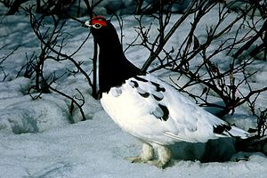</a>
<div class="thumbcaption">
<div class="magnify"><a href="http://en.wikipedia.org/wiki/File:Ptarmigan9.jpg" class="internal" title="Enlarge"></a></div>
A <a href="http://en.wikipedia.org/wiki/Willow_ptarmigan" title="Willow ptarmigan">willow ptarmigan</a> in <a href="http://en.wikipedia.org/wiki/Alaska" title="Alaska">Alaska</a></div>
</div>
</div>
<ul>
<li><a href="http://en.wikipedia.org/wiki/Australian_brush_turkey" title="Australian brush turkey" class="mw-redirect">Australian brush turkey</a></li>
<li><a href="http://en.wikipedia.org/wiki/Malleefowl" title="Malleefowl">Malleefowl</a></li>
<li><a href="http://en.wikipedia.org/wiki/Maleo" title="Maleo">Maleo</a></li>
<li><a href="http://en.wikipedia.org/wiki/Plain_chachalaca" title="Plain chachalaca">Plain chachalaca</a></li>
<li><a href="http://en.wikipedia.org/wiki/Yellow-knobbed_curassow" title="Yellow-knobbed curassow">Yellow-knobbed curassow</a></li>
<li><a href="http://en.wikipedia.org/wiki/Horned_guan" title="Horned guan">Horned guan</a></li>
<li><a href="http://en.wikipedia.org/wiki/Crested_guan" title="Crested guan">Crested guan</a></li>
<li><a href="http://en.wikipedia.org/wiki/Dusky-legged_guan" title="Dusky-legged guan">Dusky-legged guan</a></li>
<li><a href="http://en.wikipedia.org/wiki/Helmeted_guineafowl" title="Helmeted guineafowl">Helmeted guineafowl</a></li>
<li><a href="http://en.wikipedia.org/wiki/Vulturine_guineafowl" title="Vulturine guineafowl">Vulturine guineafowl</a></li>
<li><a href="http://en.wikipedia.org/wiki/California_quail" title="California quail">California quail</a></li>
<li><a href="http://en.wikipedia.org/wiki/Bobwhite_quail" title="Bobwhite quail" class="mw-redirect">Northern bobwhite</a></li>
<li><a href="http://en.wikipedia.org/wiki/Wild_turkey" title="Wild turkey">Wild turkey</a></li>
<li><a href="http://en.wikipedia.org/wiki/Ruffed_grouse" title="Ruffed grouse">Ruffed grouse</a></li>
<li><a href="http://en.wikipedia.org/wiki/Montezuma_quail" title="Montezuma quail">Montezuma quail</a></li>
<li><a href="http://en.wikipedia.org/wiki/Spruce_grouse" title="Spruce grouse">Spruce grouse</a></li>
<li><a href="http://en.wikipedia.org/wiki/Hazel_grouse" title="Hazel grouse">Hazel grouse</a></li>
<li><a href="http://en.wikipedia.org/wiki/Capercaillie" title="Capercaillie" class="mw-redirect">Western capercaillie</a></li>
<li><a href="http://en.wikipedia.org/wiki/Sage-grouse" title="Sage-grouse" class="mw-redirect">Sage-grouse</a></li>
<li><a href="http://en.wikipedia.org/wiki/Rock_ptarmigan" title="Rock ptarmigan">Rock ptarmigan</a></li>
<li><a href="http://en.wikipedia.org/wiki/Willow_ptarmigan" title="Willow ptarmigan">Willow ptarmigan</a></li>
<li><a href="http://en.wikipedia.org/wiki/Himalayan_snowcock" title="Himalayan snowcock">Himalayan snowcock</a></li>
<li><a href="http://en.wikipedia.org/wiki/Chukar_partridge" title="Chukar partridge">Chukar partridge</a></li>
<li><a href="http://en.wikipedia.org/wiki/Cape_francolin" title="Cape francolin" class="mw-redirect">Cape spurfowl</a></li>
<li><a href="http://en.wikipedia.org/wiki/Grey_partridge" title="Grey partridge">Grey partridge</a></li>
<li><a href="http://en.wikipedia.org/wiki/Jungle_bush_quail" title="Jungle bush quail">Jungle bush quail</a></li>
<li><a href="http://en.wikipedia.org/wiki/Common_quail" title="Common quail">Common quail</a></li>
<li><a href="http://en.wikipedia.org/wiki/Crested_wood_partridge" title="Crested wood partridge" class="mw-redirect">Crested partridge</a></li>
<li><a href="http://en.wikipedia.org/wiki/Hill_partridge" title="Hill partridge">Hill partridge</a></li>
<li><a href="http://en.wikipedia.org/wiki/Blyth%27s_tragopan" title="Blyth&#39;s tragopan">Blyth's tragopan</a></li>
<li><a href="http://en.wikipedia.org/wiki/Satyr_tragopan" title="Satyr tragopan">Satyr tragopan</a></li>
<li><a href="http://en.wikipedia.org/wiki/Temminck%27s_tragopan" title="Temminck&#39;s tragopan">Temminck's tragopan</a></li>
<li><a href="http://en.wikipedia.org/wiki/Blood_pheasant" title="Blood pheasant">Blood pheasant</a></li>
<li><a href="http://en.wikipedia.org/wiki/Himalayan_monal" title="Himalayan monal">Himalayan monal</a></li>
<li><a href="http://en.wikipedia.org/wiki/Great_argus" title="Great argus">Great argus</a></li>
<li><a href="http://en.wikipedia.org/wiki/Red_junglefowl" title="Red junglefowl">Red junglefowl</a></li>
<li><a href="http://en.wikipedia.org/wiki/Green_junglefowl" title="Green junglefowl">Green junglefowl</a></li>
<li><a href="http://en.wikipedia.org/wiki/Ceylon_junglefowl" title="Ceylon junglefowl" class="mw-redirect">Ceylon junglefowl</a></li>
<li><a href="http://en.wikipedia.org/wiki/Chicken" title="Chicken">Chicken</a></li>
<li><a href="http://en.wikipedia.org/wiki/Common_pheasant" title="Common pheasant">Common pheasant</a></li>
<li><a href="http://en.wikipedia.org/wiki/Elliot%27s_pheasant" title="Elliot&#39;s pheasant">Elliot's pheasant</a></li>
<li><a href="http://en.wikipedia.org/wiki/Golden_pheasant" title="Golden pheasant">Golden pheasant</a></li>
<li><a href="http://en.wikipedia.org/wiki/Indian_peafowl" title="Indian peafowl">Indian peafowl</a></li>
<li><a href="http://en.wikipedia.org/wiki/Palawan_peacock-pheasant" title="Palawan peacock-pheasant">Palawan peacock-pheasant</a></li>
<li><a href="http://en.wikipedia.org/wiki/Congo_peafowl" title="Congo peafowl">Congo peafowl</a></li>
</ul>
<h3><span class="mw-headline" id="Waterfowls">Waterfowls</span><span class="mw-editsection"><span class="mw-editsection-bracket">[</span><a href="http://en.wikipedia.org/w/index.php?title=List_of_birds_by_common_name&action=edit&section=7" title="Edit section: Waterfowls">edit</a><span class="mw-editsection-bracket">]</span></span></h3>
<div class="thumb tright">
<div class="thumbinner" style="width:302px;"><a href="http://en.wikipedia.org/wiki/File:Rostgans.jpg" class="image">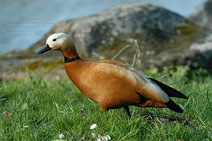</a>
<div class="thumbcaption">
<div class="magnify"><a href="http://en.wikipedia.org/wiki/File:Rostgans.jpg" class="internal" title="Enlarge"></a></div>
A waterfowl wandering across the grass</div>
</div>
</div>
<div class="thumb tright">
<div class="thumbinner" style="width:302px;"><a href="http://en.wikipedia.org/wiki/File:Domestic_Goose.jpg" class="image">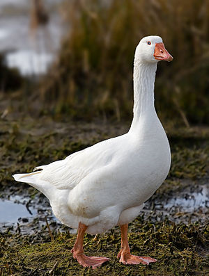</a>
<div class="thumbcaption">
<div class="magnify"><a href="http://en.wikipedia.org/wiki/File:Domestic_Goose.jpg" class="internal" title="Enlarge"></a></div>
A feral <a href="http://en.wikipedia.org/wiki/Domestic_goose" title="Domestic goose">domestic goose</a> in <a href="http://en.wikipedia.org/wiki/Tasmania" title="Tasmania">Tasmania</a>, <a href="http://en.wikipedia.org/wiki/Australia" title="Australia">Australia</a></div>
</div>
</div>
<div class="thumb tright">
<div class="thumbinner" style="width:302px;"><a href="http://en.wikipedia.org/wiki/File:Mergus_serrator.jpg" class="image">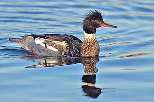</a>
<div class="thumbcaption">
<div class="magnify"><a href="http://en.wikipedia.org/wiki/File:Mergus_serrator.jpg" class="internal" title="Enlarge"></a></div>
A male <a href="http://en.wikipedia.org/wiki/Red-breasted_merganser" title="Red-breasted merganser">red-breasted merganser</a> in <a href="http://en.wikipedia.org/wiki/Bolsa_Chica_Ecological_Reserve" title="Bolsa Chica Ecological Reserve">Bolsa Chica Ecological Reserve</a>, <a href="http://en.wikipedia.org/wiki/California" title="California">California</a></div>
</div>
</div>
<ul>
<li><a href="http://en.wikipedia.org/wiki/Southern_screamer" title="Southern screamer">Southern screamer</a></li>
<li><a href="http://en.wikipedia.org/wiki/Horned_screamer" title="Horned screamer">Horned screamer</a></li>
<li><a href="http://en.wikipedia.org/wiki/Magpie-goose" title="Magpie-goose" class="mw-redirect">Magpie-goose</a></li>
<li><a href="http://en.wikipedia.org/wiki/Swan_goose" title="Swan goose">Swan goose</a></li>
<li><a href="http://en.wikipedia.org/wiki/White-faced_whistling_duck" title="White-faced whistling duck">White-faced whistling duck</a></li>
<li><a href="http://en.wikipedia.org/wiki/Greater_white-fronted_goose" title="Greater white-fronted goose">Greater white-fronted goose</a></li>
<li><a href="http://en.wikipedia.org/wiki/Greylag_goose" title="Greylag goose">Greylag goose</a></li>
<li><a href="http://en.wikipedia.org/wiki/Bar-headed_goose" title="Bar-headed goose">Bar-headed goose</a></li>
<li><a href="http://en.wikipedia.org/wiki/Snow_goose" title="Snow goose">Snow goose</a></li>
<li><a href="http://en.wikipedia.org/wiki/Hawaiian_goose" title="Hawaiian goose" class="mw-redirect">Nene</a></li>
<li><a href="http://en.wikipedia.org/wiki/Canada_goose" title="Canada goose">Canada goose</a></li>
<li><a href="http://en.wikipedia.org/wiki/Brent_goose" title="Brent goose" class="mw-redirect">Brent goose</a> (brant)</li>
<li><a href="http://en.wikipedia.org/wiki/Barnacle_goose" title="Barnacle goose">Barnacle goose</a></li>
<li><a href="http://en.wikipedia.org/wiki/Canada_goose" title="Canada goose">Canada goose</a></li>
<li><a href="http://en.wikipedia.org/wiki/Cackling_goose" title="Cackling goose">Cackling goose</a></li>
<li><a href="http://en.wikipedia.org/wiki/Red-breasted_goose" title="Red-breasted goose">Red-breasted goose</a></li>
<li><a href="http://en.wikipedia.org/wiki/Hawaiian_goose" title="Hawaiian goose" class="mw-redirect">Hawaiian goose</a></li>
<li><a href="http://en.wikipedia.org/wiki/N%C4%93n%C4%93-nui" title="Nēnē-nui">Woods-walking goose</a></li>
<li><a href="http://en.wikipedia.org/wiki/Black_swan" title="Black swan">Black swan</a></li>
<li><a href="http://en.wikipedia.org/wiki/Mute_swan" title="Mute swan">Mute swan</a></li>
<li><a href="http://en.wikipedia.org/wiki/Whooper_swan" title="Whooper swan">Whooper swan</a></li>
<li><a href="http://en.wikipedia.org/wiki/Tundra_swan" title="Tundra swan">Tundra swan</a></li>
<li><a href="http://en.wikipedia.org/wiki/Magellanic_flightless_steamer_duck" title="Magellanic flightless steamer duck" class="mw-redirect">Magellanic flightless steamer duck</a></li>
<li><a href="http://en.wikipedia.org/wiki/Spur-winged_goose" title="Spur-winged goose">Spur-winged goose</a></li>
<li><a href="http://en.wikipedia.org/wiki/Egyptian_goose" title="Egyptian goose">Egyptian goose</a></li>
<li><a href="http://en.wikipedia.org/wiki/Blue_duck" title="Blue duck">Blue duck</a></li>
<li><a href="http://en.wikipedia.org/wiki/Orinoco_goose" title="Orinoco goose">Orinoco goose</a></li>
<li><a href="http://en.wikipedia.org/wiki/Andean_goose" title="Andean goose">Andean goose</a></li>
<li><a href="http://en.wikipedia.org/wiki/African_pygmy_goose" title="African pygmy goose">African pygmy goose</a></li>
<li><a href="http://en.wikipedia.org/wiki/Common_shelduck" title="Common shelduck">Common shelduck</a></li>
<li><a href="http://en.wikipedia.org/wiki/Pink-eared_duck" title="Pink-eared duck">Pink-eared duck</a></li>
<li><a href="http://en.wikipedia.org/wiki/Muscovy_duck" title="Muscovy duck">Muscovy duck</a></li>
<li><a href="http://en.wikipedia.org/wiki/Wood_duck" title="Wood duck">Wood duck</a></li>
<li><a href="http://en.wikipedia.org/wiki/Mandarin_duck" title="Mandarin duck">Mandarin duck</a></li>
<li><a href="http://en.wikipedia.org/wiki/Gadwall" title="Gadwall">Gadwall</a></li>
<li><a href="http://en.wikipedia.org/wiki/American_wigeon" title="American wigeon">American wigeon</a></li>
<li><a href="http://en.wikipedia.org/wiki/Mallard" title="Mallard">Mallard</a></li>
<li><a href="http://en.wikipedia.org/wiki/Northern_shoveler" title="Northern shoveler">Northern shoveler</a></li>
<li><a href="http://en.wikipedia.org/wiki/Brown_teal" title="Brown teal">Brown teal</a></li>
<li><a href="http://en.wikipedia.org/wiki/Northern_pintail" title="Northern pintail">Northern pintail</a></li>
<li><a href="http://en.wikipedia.org/wiki/Common_teal" title="Common teal" class="mw-redirect">Common teal</a></li>
<li><a href="http://en.wikipedia.org/wiki/Marbled_duck" title="Marbled duck">Marbled duck</a></li>
<li><a href="http://en.wikipedia.org/wiki/Common_pochard" title="Common pochard">Common pochard</a></li>
<li><a href="http://en.wikipedia.org/wiki/Tufted_duck" title="Tufted duck">Tufted duck</a></li>
<li><a href="http://en.wikipedia.org/wiki/Greater_scaup" title="Greater scaup">Greater scaup</a></li>
<li><a href="http://en.wikipedia.org/wiki/King_eider" title="King eider">King eider</a></li>
<li><a href="http://en.wikipedia.org/wiki/Harlequin_duck" title="Harlequin duck">Harlequin duck</a></li>
<li><a href="http://en.wikipedia.org/wiki/Black_scoter" title="Black scoter">Black scoter</a></li>
<li><a href="http://en.wikipedia.org/wiki/Long-tailed_duck" title="Long-tailed duck">Long-tailed duck</a></li>
<li><a href="http://en.wikipedia.org/wiki/Common_goldeneye" title="Common goldeneye">Common goldeneye</a></li>
<li><a href="http://en.wikipedia.org/wiki/Smew" title="Smew">Smew</a></li>
<li><a href="http://en.wikipedia.org/wiki/Common_merganser" title="Common merganser">Common merganser</a></li>
<li><a href="http://en.wikipedia.org/wiki/Black-headed_duck" title="Black-headed duck">Black-headed duck</a></li>
<li><a href="http://en.wikipedia.org/wiki/Ruddy_duck" title="Ruddy duck">Ruddy duck</a></li>
<li><a href="http://en.wikipedia.org/wiki/Musk_duck" title="Musk duck">Musk duck</a></li>
</ul>
<h3><span class="mw-headline" id="Penguins">Penguins</span><span class="mw-editsection"><span class="mw-editsection-bracket">[</span><a href="http://en.wikipedia.org/w/index.php?title=List_of_birds_by_common_name&action=edit&section=8" title="Edit section: Penguins">edit</a><span class="mw-editsection-bracket">]</span></span></h3>
<ul>
<li><a href="http://en.wikipedia.org/wiki/Emperor_penguin" title="Emperor penguin">Emperor penguin</a></li>
<li><a href="http://en.wikipedia.org/wiki/King_penguin" title="King penguin">King penguin</a></li>
<li><a href="http://en.wikipedia.org/wiki/Gentoo_penguin" title="Gentoo penguin">Gentoo penguin</a></li>
<li><a href="http://en.wikipedia.org/wiki/Adelie_penguin" title="Adelie penguin" class="mw-redirect">Adelie penguin</a></li>
<li><a href="http://en.wikipedia.org/wiki/Rockhopper_penguin" title="Rockhopper penguin">Rockhopper penguin</a></li>
<li><a href="http://en.wikipedia.org/wiki/Macaroni_penguin" title="Macaroni penguin">Macaroni penguin</a></li>
<li><a href="http://en.wikipedia.org/wiki/Yellow-eyed_penguin" title="Yellow-eyed penguin">Yellow-eyed penguin</a></li>
<li><a href="http://en.wikipedia.org/wiki/Little_penguin" title="Little penguin">Fairy penguin</a></li>
<li><a href="http://en.wikipedia.org/wiki/African_penguin" title="African penguin">African penguin</a></li>
<li><a href="http://en.wikipedia.org/wiki/Magellanic_penguin" title="Magellanic penguin">Magellanic penguin</a></li>
<li><a href="http://en.wikipedia.org/wiki/Gal%C3%A1pagos_penguin" title="Galápagos penguin" class="mw-redirect">Galápagos penguin</a></li>
<li><a href="http://en.wikipedia.org/wiki/Great_auk" title="Great auk">Great auk</a> (extinct)</li>
<li><a href="http://en.wikipedia.org/wiki/Chinstrap_penguin" title="Chinstrap penguin">Chinstrap penguin</a></li>
<li><a href="http://en.wikipedia.org/wiki/Erect-crested_penguin" title="Erect-crested penguin">Erect-crested penguin</a></li>
<li><a href="http://en.wikipedia.org/wiki/Humboldt_penguin" title="Humboldt penguin">Humboldt penguin</a></li>
<li><a href="http://en.wikipedia.org/wiki/Royal_penguin" title="Royal penguin">Royal penguin</a></li>
</ul>
<h3><span class="mw-headline" id="Divers">Divers</span><span class="mw-editsection"><span class="mw-editsection-bracket">[</span><a href="http://en.wikipedia.org/w/index.php?title=List_of_birds_by_common_name&action=edit&section=9" title="Edit section: Divers">edit</a><span class="mw-editsection-bracket">]</span></span></h3>
<ul>
<li><a href="http://en.wikipedia.org/wiki/Black-throated_diver" title="Black-throated diver" class="mw-redirect">Black-throated diver</a></li>
<li><a href="http://en.wikipedia.org/wiki/Red-throated_diver" title="Red-throated diver" class="mw-redirect">Red-throated diver</a> (red-throated loon)</li>
<li><a href="http://en.wikipedia.org/wiki/Great_northern_diver" title="Great northern diver" class="mw-redirect">Great northern diver</a> (common loon)</li>
</ul>
<h3><span class="mw-headline" id="Albatrosses_and_petrels">Albatrosses and petrels</span><span class="mw-editsection"><span class="mw-editsection-bracket">[</span><a href="http://en.wikipedia.org/w/index.php?title=List_of_birds_by_common_name&action=edit&section=10" title="Edit section: Albatrosses and petrels">edit</a><span class="mw-editsection-bracket">]</span></span></h3>
<ul>
<li><a href="http://en.wikipedia.org/wiki/Sooty_albatross" title="Sooty albatross">Sooty albatross</a></li>
<li><a href="http://en.wikipedia.org/wiki/Black-browed_albatross" title="Black-browed albatross">Black-browed albatross</a></li>
<li><a href="http://en.wikipedia.org/wiki/Laysan_albatross" title="Laysan albatross">Laysan albatross</a></li>
<li><a href="http://en.wikipedia.org/wiki/Royal_albatross_(disambiguation)" title="Royal albatross (disambiguation)" class="mw-redirect">Royal albatross</a></li>
<li><a href="http://en.wikipedia.org/wiki/Wandering_albatross" title="Wandering albatross">Wandering albatross</a></li>
<li><a href="http://en.wikipedia.org/wiki/Southern_giant_petrel" title="Southern giant petrel">Southern giant petrel</a></li>
<li><a href="http://en.wikipedia.org/wiki/Antarctic_petrel" title="Antarctic petrel">Antarctic petrel</a></li>
<li><a href="http://en.wikipedia.org/wiki/Northern_fulmar" title="Northern fulmar">Northern fulmar</a></li>
<li><a href="http://en.wikipedia.org/wiki/Snow_petrel" title="Snow petrel">Snow petrel</a></li>
<li><a href="http://en.wikipedia.org/wiki/Fairy_prion" title="Fairy prion">Fairy prion</a></li>
<li><a href="http://en.wikipedia.org/wiki/Cook%27s_petrel" title="Cook&#39;s petrel">Cook's petrel</a></li>
<li><a href="http://en.wikipedia.org/wiki/Antarctic_prion" title="Antarctic prion">Antarctic prion</a></li>
<li><a href="http://en.wikipedia.org/wiki/Bermuda_petrel" title="Bermuda petrel">Cahow</a></li>
<li><a href="http://en.wikipedia.org/wiki/Cape_petrel" title="Cape petrel">Cape petrel</a></li>
<li><a href="http://en.wikipedia.org/wiki/Cory%27s_shearwater" title="Cory&#39;s shearwater">Cory's shearwater</a></li>
<li><a href="http://en.wikipedia.org/wiki/Sooty_shearwater" title="Sooty shearwater">Sooty shearwater</a></li>
<li><a href="http://en.wikipedia.org/wiki/Short-tailed_shearwater" title="Short-tailed shearwater">Short-tailed shearwater</a></li>
<li><a href="http://en.wikipedia.org/wiki/Manx_shearwater" title="Manx shearwater">Manx shearwater</a></li>
<li><a href="http://en.wikipedia.org/wiki/Wilson%27s_storm_petrel" title="Wilson&#39;s storm petrel">Wilson's storm petrel</a></li>
<li><a href="http://en.wikipedia.org/wiki/European_storm_petrel" title="European storm petrel">European storm petrel</a></li>
<li><a href="http://en.wikipedia.org/wiki/Common_diving_petrel" title="Common diving petrel">Common diving petrel</a></li>
<li><a href="http://en.wikipedia.org/wiki/Black-bellied_storm_petrel" title="Black-bellied storm petrel">Black-bellied storm petrel</a></li>
<li><a href="http://en.wikipedia.org/wiki/Ashy_storm_petrel" title="Ashy storm petrel">Ashy storm petrel</a></li>
<li><a href="http://en.wikipedia.org/wiki/Leach%27s_storm_petrel" title="Leach&#39;s storm petrel">Leach's storm petrel</a></li>
</ul>
<h3><span class="mw-headline" id="Grebes">Grebes</span><span class="mw-editsection"><span class="mw-editsection-bracket">[</span><a href="http://en.wikipedia.org/w/index.php?title=List_of_birds_by_common_name&action=edit&section=11" title="Edit section: Grebes">edit</a><span class="mw-editsection-bracket">]</span></span></h3>
<ul>
<li><a href="http://en.wikipedia.org/wiki/Little_grebe" title="Little grebe">Little grebe</a></li>
<li><a href="http://en.wikipedia.org/wiki/Australasian_grebe" title="Australasian grebe">Australasian grebe</a></li>
<li><a href="http://en.wikipedia.org/wiki/White-tufted_grebe" title="White-tufted grebe">White-tufted grebe</a></li>
<li><a href="http://en.wikipedia.org/wiki/Hoary-headed_grebe" title="Hoary-headed grebe">Hoary-headed grebe</a></li>
<li><a href="http://en.wikipedia.org/wiki/Clark%27s_grebe" title="Clark&#39;s grebe">Clark's grebe</a></li>
<li><a href="http://en.wikipedia.org/wiki/Great_crested_grebe" title="Great crested grebe">Great crested grebe</a></li>
</ul>
<h3><span class="mw-headline" id="Flamingos">Flamingos</span><span class="mw-editsection"><span class="mw-editsection-bracket">[</span><a href="http://en.wikipedia.org/w/index.php?title=List_of_birds_by_common_name&action=edit&section=12" title="Edit section: Flamingos">edit</a><span class="mw-editsection-bracket">]</span></span></h3>
<ul>
<li><a href="http://en.wikipedia.org/wiki/Greater_flamingo" title="Greater flamingo">Greater flamingo</a></li>
<li><a href="http://en.wikipedia.org/wiki/Lesser_flamingo" title="Lesser flamingo">Lesser flamingo</a></li>
<li><a href="http://en.wikipedia.org/wiki/Andean_flamingo" title="Andean flamingo">Andean flamingo</a></li>
<li><a href="http://en.wikipedia.org/wiki/Chilean_flamingo" title="Chilean flamingo">Chilean flamingo</a></li>
</ul>
<h3><span class="mw-headline" id="Storks_and_herons">Storks and herons</span><span class="mw-editsection"><span class="mw-editsection-bracket">[</span><a href="http://en.wikipedia.org/w/index.php?title=List_of_birds_by_common_name&action=edit&section=13" title="Edit section: Storks and herons">edit</a><span class="mw-editsection-bracket">]</span></span></h3>
<div class="thumb tright">
<div class="thumbinner" style="width:302px;"><a href="http://en.wikipedia.org/wiki/File:Wood_Storks.jpg" class="image">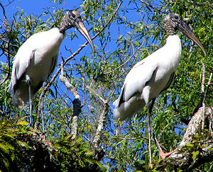</a>
<div class="thumbcaption">
<div class="magnify"><a href="http://en.wikipedia.org/wiki/File:Wood_Storks.jpg" class="internal" title="Enlarge"></a></div>
<a href="http://en.wikipedia.org/wiki/Wood_stork" title="Wood stork">Wood storks</a> on the Smith Canal near the St. Johns River in <a href="http://en.wikipedia.org/wiki/Florida" title="Florida">Florida</a></div>
</div>
</div>
<ul>
<li><a href="http://en.wikipedia.org/wiki/Wood_stork" title="Wood stork">Wood stork</a></li>
<li><a href="http://en.wikipedia.org/wiki/African_openbill_stork" title="African openbill stork" class="mw-redirect">African openbill</a></li>
<li><a href="http://en.wikipedia.org/wiki/Yellow-billed_stork" title="Yellow-billed stork">Yellow-billed stork</a></li>
<li><a href="http://en.wikipedia.org/wiki/Saddle-billed_stork" title="Saddle-billed stork">Saddle-billed stork</a></li>
<li><a href="http://en.wikipedia.org/wiki/White_stork" title="White stork">White stork</a></li>
<li><a href="http://en.wikipedia.org/wiki/Jabiru" title="Jabiru">Jabiru</a></li>
<li><a href="http://en.wikipedia.org/wiki/Marabou_stork" title="Marabou stork">Marabou stork</a></li>
<li><a href="http://en.wikipedia.org/wiki/Greater_adjutant" title="Greater adjutant">Greater adjutant</a></li>
<li><a href="http://en.wikipedia.org/wiki/Australian_white_ibis" title="Australian white ibis">Australian white ibis</a></li>
<li><a href="http://en.wikipedia.org/wiki/Crested_white-eye" title="Crested white-eye">Crested white-eye</a></li>
<li><a href="http://en.wikipedia.org/wiki/Black-faced_ibis" title="Black-faced ibis">Black-faced ibis</a></li>
<li><a href="http://en.wikipedia.org/wiki/Scarlet_ibis" title="Scarlet ibis">Scarlet ibis</a></li>
<li><a href="http://en.wikipedia.org/wiki/Glossy_ibis" title="Glossy ibis">Glossy ibis</a></li>
<li><a href="http://en.wikipedia.org/wiki/Eurasian_spoonbill" title="Eurasian spoonbill">Eurasian spoonbill</a></li>
<li><a href="http://en.wikipedia.org/wiki/Roseate_spoonbill" title="Roseate spoonbill">Roseate spoonbill</a></li>
<li><a href="http://en.wikipedia.org/wiki/White-crested_bittern" title="White-crested bittern" class="mw-redirect">White-crested tiger heron</a></li>
<li><a href="http://en.wikipedia.org/wiki/Eurasian_bittern" title="Eurasian bittern">Eurasian bittern</a></li>
<li><a href="http://en.wikipedia.org/wiki/Rufescent_tiger_heron" title="Rufescent tiger heron">Rufescent tiger heron</a></li>
<li><a href="http://en.wikipedia.org/wiki/Little_bittern" title="Little bittern">Little bittern</a></li>
<li><a href="http://en.wikipedia.org/wiki/Boat-billed_heron" title="Boat-billed heron">Boat-billed heron</a></li>
<li><a href="http://en.wikipedia.org/wiki/Black-crowned_night_heron" title="Black-crowned night heron">Black-crowned night heron</a></li>
<li><a href="http://en.wikipedia.org/wiki/Green_heron" title="Green heron">Green heron</a></li>
<li><a href="http://en.wikipedia.org/wiki/Squacco_heron" title="Squacco heron">Squacco heron</a></li>
<li><a href="http://en.wikipedia.org/wiki/Cattle_egret" title="Cattle egret">Cattle egret</a></li>
<li><a href="http://en.wikipedia.org/wiki/Grey_heron" title="Grey heron">Grey heron</a></li>
<li><a href="http://en.wikipedia.org/wiki/Goliath_heron" title="Goliath heron">Goliath heron</a></li>
<li><a href="http://en.wikipedia.org/wiki/Great_blue_heron" title="Great blue heron">Great blue heron</a></li>
<li><a href="http://en.wikipedia.org/wiki/Striated_heron" title="Striated heron">Striated heron</a></li>
<li><a href="http://en.wikipedia.org/wiki/Little_egret" title="Little egret">Little egret</a></li>
</ul>
<h3><span class="mw-headline" id="Pelicans_and_relatives">Pelicans and relatives</span><span class="mw-editsection"><span class="mw-editsection-bracket">[</span><a href="http://en.wikipedia.org/w/index.php?title=List_of_birds_by_common_name&action=edit&section=14" title="Edit section: Pelicans and relatives">edit</a><span class="mw-editsection-bracket">]</span></span></h3>
<div class="thumb tright">
<div class="thumbinner" style="width:302px;"><a href="http://en.wikipedia.org/wiki/File:Pelicans_3.JPG" class="image">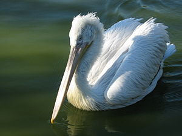</a>
<div class="thumbcaption">
<div class="magnify"><a href="http://en.wikipedia.org/wiki/File:Pelicans_3.JPG" class="internal" title="Enlarge"></a></div>
A <a href="http://en.wikipedia.org/wiki/Pelican" title="Pelican">pelican</a> somewhere in France</div>
</div>
</div>
<ul>
<li><a href="http://en.wikipedia.org/wiki/Red-billed_tropicbird" title="Red-billed tropicbird">Red-billed tropicbird</a></li>
<li><a href="http://en.wikipedia.org/wiki/White-tailed_tropicbird" title="White-tailed tropicbird">White-tailed tropicbird</a></li>
<li><a href="http://en.wikipedia.org/wiki/Great_frigatebird" title="Great frigatebird">Great frigatebird</a></li>
<li><a href="http://en.wikipedia.org/wiki/Christmas_Island_frigatebird" title="Christmas Island frigatebird" class="mw-redirect">Christmas frigatebird</a></li>
<li><a href="http://en.wikipedia.org/wiki/Hammerkop" title="Hammerkop" class="mw-redirect">Hammerkop</a></li>
<li><a href="http://en.wikipedia.org/wiki/Great_white_pelican" title="Great white pelican">Great white pelican</a></li>
<li><a href="http://en.wikipedia.org/wiki/Shoebill" title="Shoebill">Shoebill</a></li>
<li><a href="http://en.wikipedia.org/wiki/Australian_pelican" title="Australian pelican">Australian pelican</a></li>
<li><a href="http://en.wikipedia.org/wiki/Brown_pelican" title="Brown pelican">Brown pelican</a></li>
<li><a href="http://en.wikipedia.org/wiki/American_white_pelican" title="American white pelican">American white pelican</a></li>
<li><a href="http://en.wikipedia.org/wiki/Northern_gannet" title="Northern gannet">Northern gannet</a></li>
<li><a href="http://en.wikipedia.org/wiki/Australasian_gannet" title="Australasian gannet">Australasian gannet</a></li>
<li><a href="http://en.wikipedia.org/wiki/Masked_booby" title="Masked booby">Masked booby</a></li>
<li><a href="http://en.wikipedia.org/wiki/Blue-footed_booby" title="Blue-footed booby">Blue-footed booby</a></li>
<li><a href="http://en.wikipedia.org/wiki/Peruvian_booby" title="Peruvian booby">Peruvian booby</a></li>
<li><a href="http://en.wikipedia.org/wiki/Pygmy_cormorant" title="Pygmy cormorant">Pygmy cormorant</a></li>
<li><a href="http://en.wikipedia.org/wiki/Flightless_cormorant" title="Flightless cormorant">Flightless cormorant</a></li>
<li><a href="http://en.wikipedia.org/wiki/Double-crested_cormorant" title="Double-crested cormorant">Double-crested cormorant</a></li>
<li><a href="http://en.wikipedia.org/wiki/European_shag" title="European shag">European shag</a></li>
<li><a href="http://en.wikipedia.org/wiki/Guanay_cormorant" title="Guanay cormorant">Guanay cormorant</a></li>
<li><a href="http://en.wikipedia.org/wiki/Great_cormorant" title="Great cormorant">Great cormorant</a></li>
<li><a href="http://en.wikipedia.org/wiki/Anhinga" title="Anhinga">Anhinga</a></li>
<li><a href="http://en.wikipedia.org/wiki/Imperial_shag" title="Imperial shag">Imperial shag</a></li>
</ul>
<h3><span class="mw-headline" id="Birds_of_prey">Birds of prey</span><span class="mw-editsection"><span class="mw-editsection-bracket">[</span><a href="http://en.wikipedia.org/w/index.php?title=List_of_birds_by_common_name&action=edit&section=15" title="Edit section: Birds of prey">edit</a><span class="mw-editsection-bracket">]</span></span></h3>
<div class="thumb tright">
<div class="thumbinner" style="width:302px;"><a href="http://en.wikipedia.org/wiki/File:Brown_falcon_whole_body444.jpg" class="image">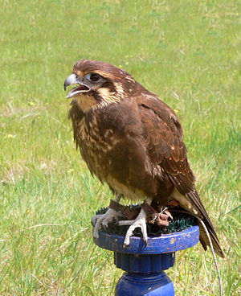</a>
<div class="thumbcaption">
<div class="magnify"><a href="http://en.wikipedia.org/wiki/File:Brown_falcon_whole_body444.jpg" class="internal" title="Enlarge"></a></div>
A <a href="http://en.wikipedia.org/wiki/Brown_falcon" title="Brown falcon">brown falcon</a> in flight display somewhere in South-east <a href="http://en.wikipedia.org/wiki/Australia" title="Australia">Australia</a></div>
</div>
</div>
<div class="thumb tright">
<div class="thumbinner" style="width:302px;"><a href="http://en.wikipedia.org/wiki/File:Harpia_harpyja_001_800.jpg" class="image">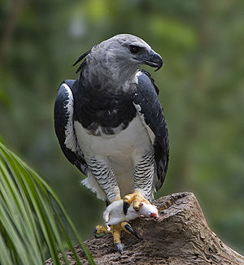</a>
<div class="thumbcaption">
<div class="magnify"><a href="http://en.wikipedia.org/wiki/File:Harpia_harpyja_001_800.jpg" class="internal" title="Enlarge"></a></div>
A male <a href="http://en.wikipedia.org/wiki/Harpy_eagle" title="Harpy eagle">harpy eagle</a> at Parque das Aves, <a href="http://en.wikipedia.org/wiki/Brazil" title="Brazil">Brazil</a></div>
</div>
</div>
<div class="thumb tright">
<div class="thumbinner" style="width:302px;"><a href="http://en.wikipedia.org/wiki/File:BaldEagleRWPZ.jpg" class="image">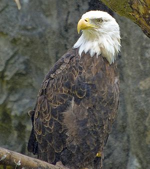</a>
<div class="thumbcaption">
<div class="magnify"><a href="http://en.wikipedia.org/wiki/File:BaldEagleRWPZ.jpg" class="internal" title="Enlarge"></a></div>
A <a href="http://en.wikipedia.org/wiki/Bald_eagle" title="Bald eagle">bald eagle</a> at the <a href="http://en.wikipedia.org/wiki/Roger_Williams_Park_Zoo" title="Roger Williams Park Zoo">Roger Williams Park Zoo</a>, <a href="http://en.wikipedia.org/wiki/Providence,_Rhode_Island" title="Providence, Rhode Island">Providence</a>, <a href="http://en.wikipedia.org/wiki/Rhode_Island" title="Rhode Island">Rhode Island</a></div>
</div>
</div>
<div class="thumb tright">
<div class="thumbinner" style="width:302px;"><a href="http://en.wikipedia.org/wiki/File:African_fish_eagle_just_caught_fish.jpg" class="image">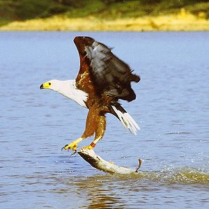</a>
<div class="thumbcaption">
<div class="magnify"><a href="http://en.wikipedia.org/wiki/File:African_fish_eagle_just_caught_fish.jpg" class="internal" title="Enlarge"></a></div>
An <a href="http://en.wikipedia.org/wiki/African_fish_eagle" title="African fish eagle">African fish eagle</a> catching a <a href="http://en.wikipedia.org/wiki/Catfish" title="Catfish">Catfish</a> in <a href="http://en.wikipedia.org/wiki/Lake_Baringo" title="Lake Baringo">Lake Baringo</a>, <a href="http://en.wikipedia.org/wiki/Kenya" title="Kenya">Kenya</a></div>
</div>
</div>
<ul>
<li><a href="http://en.wikipedia.org/wiki/Turkey_vulture" title="Turkey vulture">Turkey vulture</a></li>
<li><a href="http://en.wikipedia.org/wiki/King_vulture" title="King vulture">King vulture</a></li>
<li><a href="http://en.wikipedia.org/wiki/Black_vulture" title="Black vulture">Black vulture</a></li>
<li><a href="http://en.wikipedia.org/wiki/California_condor" title="California condor">California condor</a></li>
<li><a href="http://en.wikipedia.org/wiki/Andean_condor" title="Andean condor">Andean condor</a></li>
<li><a href="http://en.wikipedia.org/wiki/Northern_caracara" title="Northern caracara" class="mw-redirect">Northern crested caracara</a></li>
<li><a href="http://en.wikipedia.org/wiki/African_pygmy_falcon" title="African pygmy falcon" class="mw-redirect">Pygmy falcon</a></li>
<li><a href="http://en.wikipedia.org/wiki/Common_kestrel" title="Common kestrel">Common kestrel</a></li>
<li><a href="http://en.wikipedia.org/wiki/Yellow-headed_caracara" title="Yellow-headed caracara">Yellow-headed caracara</a></li>
<li><a href="http://en.wikipedia.org/wiki/Laughing_falcon" title="Laughing falcon">Laughing falcon</a></li>
<li><a href="http://en.wikipedia.org/wiki/Greater_kestrel" title="Greater kestrel">Greater kestrel</a></li>
<li><a href="http://en.wikipedia.org/wiki/Merlin_(bird)" title="Merlin (bird)">Merlin</a></li>
<li><a href="http://en.wikipedia.org/wiki/American_kestrel" title="American kestrel">American kestrel</a></li>
<li><a href="http://en.wikipedia.org/wiki/Eurasian_hobby" title="Eurasian hobby">Eurasian hobby</a></li>
<li><a href="http://en.wikipedia.org/wiki/Lanner_falcon" title="Lanner falcon">Lanner falcon</a></li>
<li><a href="http://en.wikipedia.org/wiki/Gyrfalcon" title="Gyrfalcon">Gyrfalcon</a></li>
<li><a href="http://en.wikipedia.org/wiki/Prairie_falcon" title="Prairie falcon">Prairie falcon</a></li>
<li><a href="http://en.wikipedia.org/wiki/Peregrine_falcon" title="Peregrine falcon">Peregrine falcon</a></li>
<li><a href="http://en.wikipedia.org/wiki/Secretarybird" title="Secretarybird">Secretarybird</a></li>
<li><a href="http://en.wikipedia.org/wiki/Osprey" title="Osprey">Osprey</a></li>
<li><a href="http://en.wikipedia.org/wiki/European_honey_buzzard" title="European honey buzzard">European honey buzzard</a></li>
<li><a href="http://en.wikipedia.org/wiki/Swallow-tailed_kite" title="Swallow-tailed kite">Swallow-tailed kite</a></li>
<li><a href="http://en.wikipedia.org/wiki/Snail_kite" title="Snail kite">Snail kite</a></li>
<li><a href="http://en.wikipedia.org/wiki/Mississippi_kite" title="Mississippi kite">Mississippi kite</a></li>
<li><a href="http://en.wikipedia.org/wiki/Red_kite" title="Red kite">Red kite</a></li>
<li><a href="http://en.wikipedia.org/wiki/White-tailed_eagle" title="White-tailed eagle">White-tailed eagle</a></li>
<li><a href="http://en.wikipedia.org/wiki/Black_kite" title="Black kite">Black kite</a></li>
<li><a href="http://en.wikipedia.org/wiki/Brahminy_kite" title="Brahminy kite">Brahminy kite</a></li>
<li><a href="http://en.wikipedia.org/wiki/African_fish_eagle" title="African fish eagle">African fish eagle</a></li>
<li><a href="http://en.wikipedia.org/wiki/Bald_eagle" title="Bald eagle">Bald eagle</a></li>
<li><a href="http://en.wikipedia.org/wiki/Palm-nut_vulture" title="Palm-nut vulture">Palm-nut vulture</a></li>
<li><a href="http://en.wikipedia.org/wiki/Bearded_vulture" title="Bearded vulture">Bearded vulture</a></li>
<li><a href="http://en.wikipedia.org/wiki/Steller%27s_sea_eagle" title="Steller&#39;s sea eagle">Steller's sea eagle</a></li>
<li><a href="http://en.wikipedia.org/wiki/Egyptian_vulture" title="Egyptian vulture">Egyptian vulture</a></li>
<li><a href="http://en.wikipedia.org/wiki/White-backed_vulture" title="White-backed vulture">White-backed vulture</a></li>
<li><a href="http://en.wikipedia.org/wiki/Indian_vulture" title="Indian vulture">Indian vulture</a></li>
<li><a href="http://en.wikipedia.org/wiki/Griffon_vulture" title="Griffon vulture">Griffon vulture</a></li>
<li><a href="http://en.wikipedia.org/wiki/R%C3%BCppell%27s_vulture" title="Rüppell&#39;s vulture">Rüppell's vulture</a></li>
<li><a href="http://en.wikipedia.org/wiki/Lappet-faced_vulture" title="Lappet-faced vulture">Lappet-faced vulture</a></li>
<li><a href="http://en.wikipedia.org/wiki/Black-chested_snake_eagle" title="Black-chested snake eagle">Black-chested snake eagle</a></li>
<li><a href="http://en.wikipedia.org/wiki/Crested_serpent_eagle" title="Crested serpent eagle">Crested serpent eagle</a></li>
<li><a href="http://en.wikipedia.org/wiki/Western_marsh_harrier" title="Western marsh harrier">Western marsh harrier</a></li>
<li><a href="http://en.wikipedia.org/wiki/Bateleur" title="Bateleur">Bateleur</a></li>
<li><a href="http://en.wikipedia.org/wiki/Pied_harrier" title="Pied harrier">Pied harrier</a></li>
<li><a href="http://en.wikipedia.org/wiki/African_harrier-hawk" title="African harrier-hawk">African harrier-hawk</a></li>
<li><a href="http://en.wikipedia.org/wiki/Hen_harrier" title="Hen harrier">Northern harrier</a></li>
<li><a href="http://en.wikipedia.org/wiki/Lizard_buzzard" title="Lizard buzzard">Lizard buzzard</a></li>
<li><a href="http://en.wikipedia.org/wiki/Spotted_harrier" title="Spotted harrier">Spotted harrier</a></li>
<li><a href="http://en.wikipedia.org/wiki/Grey_goshawk" title="Grey goshawk">Grey goshawk</a></li>
<li><a href="http://en.wikipedia.org/wiki/Dark_chanting_goshawk" title="Dark chanting goshawk">Dark chanting goshawk</a></li>
<li><a href="http://en.wikipedia.org/wiki/Little_sparrowhawk" title="Little sparrowhawk">Little sparrowhawk</a></li>
<li><a href="http://en.wikipedia.org/wiki/Besra" title="Besra">Besra</a></li>
<li><a href="http://en.wikipedia.org/wiki/Eurasian_sparrowhawk" title="Eurasian sparrowhawk">Eurasian sparrowhawk</a></li>
<li><a href="http://en.wikipedia.org/wiki/Cooper%27s_hawk" title="Cooper&#39;s hawk">Cooper's hawk</a></li>
<li><a href="http://en.wikipedia.org/wiki/Northern_goshawk" title="Northern goshawk">Northern goshawk</a></li>
<li><a href="http://en.wikipedia.org/wiki/Grasshopper_buzzard" title="Grasshopper buzzard">Grasshopper buzzard</a></li>
<li><a href="http://en.wikipedia.org/wiki/Crane_hawk" title="Crane hawk">Crane hawk</a></li>
<li><a href="http://en.wikipedia.org/wiki/Plumbeous_hawk" title="Plumbeous hawk">Plumbeous hawk</a></li>
<li><a href="http://en.wikipedia.org/wiki/Common_black_hawk" title="Common black hawk">Common black hawk</a></li>
<li><a href="http://en.wikipedia.org/wiki/Savanna_hawk" title="Savanna hawk">Savanna hawk</a></li>
<li><a href="http://en.wikipedia.org/wiki/White_hawk" title="White hawk">White hawk</a></li>
<li><a href="http://en.wikipedia.org/wiki/Harris%27s_hawk" title="Harris&#39;s hawk">Harris' hawk</a></li>
<li><a href="http://en.wikipedia.org/wiki/Black-collared_hawk" title="Black-collared hawk">Black-collared hawk</a></li>
<li><a href="http://en.wikipedia.org/wiki/Solitary_eagle" title="Solitary eagle" class="mw-redirect">Solitary eagle</a></li>
<li><a href="http://en.wikipedia.org/wiki/Red-shouldered_hawk" title="Red-shouldered hawk">Red-shouldered hawk</a></li>
<li><a href="http://en.wikipedia.org/wiki/Swainson%27s_hawk" title="Swainson&#39;s hawk">Swainson's hawk</a></li>
<li><a href="http://en.wikipedia.org/wiki/Gal%C3%A1pagos_hawk" title="Galápagos hawk" class="mw-redirect">Galápagos hawk</a></li>
<li><a href="http://en.wikipedia.org/wiki/Zone-tailed_hawk" title="Zone-tailed hawk">Zone-tailed hawk</a></li>
<li><a href="http://en.wikipedia.org/wiki/Red-tailed_hawk" title="Red-tailed hawk">Red-tailed hawk</a></li>
<li><a href="http://en.wikipedia.org/wiki/Common_buzzard" title="Common buzzard">Common buzzard</a></li>
<li><a href="http://en.wikipedia.org/wiki/Ferruginous_hawk" title="Ferruginous hawk">Ferruginous hawk</a></li>
<li><a href="http://en.wikipedia.org/wiki/Long-legged_buzzard" title="Long-legged buzzard">Long-legged buzzard</a></li>
<li><a href="http://en.wikipedia.org/wiki/Harpy_eagle" title="Harpy eagle">Harpy eagle</a></li>
<li><a href="http://en.wikipedia.org/wiki/Philippine_eagle" title="Philippine eagle">Philippine eagle</a></li>
<li><a href="http://en.wikipedia.org/wiki/Crested_eagle" title="Crested eagle">Crested eagle</a></li>
<li><a href="http://en.wikipedia.org/wiki/Black_eagle" title="Black eagle">Indian black eagle</a></li>
<li><a href="http://en.wikipedia.org/wiki/Greater_spotted_eagle" title="Greater spotted eagle">Greater spotted eagle</a></li>
<li><a href="http://en.wikipedia.org/wiki/Eastern_imperial_eagle" title="Eastern imperial eagle">Eastern imperial eagle</a></li>
<li><a href="http://en.wikipedia.org/wiki/Golden_eagle" title="Golden eagle">Golden eagle</a></li>
<li><a href="http://en.wikipedia.org/wiki/Wedge-tailed_eagle" title="Wedge-tailed eagle">Wedge-tailed eagle</a></li>
<li><a href="http://en.wikipedia.org/wiki/Verreaux%27s_eagle" title="Verreaux&#39;s eagle">Verreaux's eagle</a></li>
<li><a href="http://en.wikipedia.org/wiki/Wahlberg%27s_eagle" title="Wahlberg&#39;s eagle">Wahlberg's eagle</a></li>
<li><a href="http://en.wikipedia.org/wiki/Black-and-white_hawk-eagle" title="Black-and-white hawk-eagle">Black-and-white hawk-eagle</a></li>
<li><a href="http://en.wikipedia.org/wiki/Martial_eagle" title="Martial eagle">Martial eagle</a></li>
<li><a href="http://en.wikipedia.org/wiki/Philippine_hawk-eagle" title="Philippine hawk-eagle">Philippine hawk-eagle</a></li>
<li><a href="http://en.wikipedia.org/wiki/Crowned_eagle" title="Crowned eagle">Crowned eagle</a></li>
</ul>
<h3><span class="mw-headline" id="Cranes_and_relatives">Cranes and relatives</span><span class="mw-editsection"><span class="mw-editsection-bracket">[</span><a href="http://en.wikipedia.org/w/index.php?title=List_of_birds_by_common_name&action=edit&section=16" title="Edit section: Cranes and relatives">edit</a><span class="mw-editsection-bracket">]</span></span></h3>
<div class="thumb tright">
<div class="thumbinner" style="width:302px;"><a href="http://en.wikipedia.org/wiki/File:Grus_japonensis_Tsuru1260.jpg" class="image">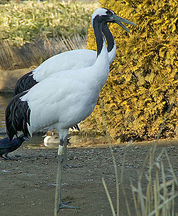</a>
<div class="thumbcaption">
<div class="magnify"><a href="http://en.wikipedia.org/wiki/File:Grus_japonensis_Tsuru1260.jpg" class="internal" title="Enlarge"></a></div>
A <a href="http://en.wikipedia.org/wiki/Tsuru" title="Tsuru" class="mw-redirect">tsuru</a> at the <a href="http://en.wikipedia.org/wiki/Ueno_Zoo" title="Ueno Zoo">Ueno Zoo</a>, <a href="http://en.wikipedia.org/wiki/Tokyo" title="Tokyo">Tokyo</a></div>
</div>
</div>
<ul>
<li><a href="http://en.wikipedia.org/wiki/Great_bustard" title="Great bustard">Great bustard</a></li>
<li><a href="http://en.wikipedia.org/wiki/Kori_bustard" title="Kori bustard">Kori bustard</a></li>
<li><a href="http://en.wikipedia.org/wiki/Australian_bustard" title="Australian bustard">Australian bustard</a></li>
<li><a href="http://en.wikipedia.org/wiki/White-quilled_bustard" title="White-quilled bustard" class="mw-redirect">Northern black korhaan</a></li>
<li><a href="http://en.wikipedia.org/wiki/Little_bustard" title="Little bustard">Little bustard</a></li>
<li><a href="http://en.wikipedia.org/wiki/Houbara_bustard" title="Houbara bustard">Houbara bustard</a></li>
<li><a href="http://en.wikipedia.org/wiki/Kagu" title="Kagu">Kagu</a></li>
<li><a href="http://en.wikipedia.org/wiki/Subdesert_mesite" title="Subdesert mesite">Subdesert mesite</a></li>
<li><a href="http://en.wikipedia.org/wiki/Red-legged_seriema" title="Red-legged seriema">Red-legged seriema</a></li>
<li><a href="http://en.wikipedia.org/wiki/Sunbittern" title="Sunbittern">Sunbittern</a></li>
<li><a href="http://en.wikipedia.org/wiki/Corn_crake" title="Corn crake">Corn crake</a></li>
<li><a href="http://en.wikipedia.org/wiki/Okinawa_rail" title="Okinawa rail">Okinawa rail</a></li>
<li><a href="http://en.wikipedia.org/wiki/Virginia_rail" title="Virginia rail">Virginia rail</a></li>
<li><a href="http://en.wikipedia.org/wiki/Buff-banded_rail" title="Buff-banded rail">Buff-banded rail</a></li>
<li><a href="http://en.wikipedia.org/wiki/Water_rail" title="Water rail">Water rail</a></li>
<li><a href="http://en.wikipedia.org/wiki/Baillon%27s_crake" title="Baillon&#39;s crake">Baillon's crake</a></li>
<li><a href="http://en.wikipedia.org/wiki/Sora_(crake)" title="Sora (crake)" class="mw-redirect">Sora</a></li>
<li><a href="http://en.wikipedia.org/wiki/Purple_swamphen" title="Purple swamphen">Purple swamphen</a></li>
<li><a href="http://en.wikipedia.org/wiki/Takah%C4%93" title="Takahē">Takahē</a></li>
<li><a href="http://en.wikipedia.org/wiki/American_purple_gallinule" title="American purple gallinule">Purple gallinule</a></li>
<li><a href="http://en.wikipedia.org/wiki/Common_moorhen" title="Common moorhen">Common moorhen</a></li>
<li><a href="http://en.wikipedia.org/wiki/Eurasian_coot" title="Eurasian coot">Eurasian coot</a></li>
<li><a href="http://en.wikipedia.org/wiki/Masked_finfoot" title="Masked finfoot">Masked finfoot</a></li>
<li><a href="http://en.wikipedia.org/wiki/Pale-winged_trumpeter" title="Pale-winged trumpeter">Pale-winged trumpeter</a></li>
<li><a href="http://en.wikipedia.org/wiki/African_finfoot" title="African finfoot">African finfoot</a></li>
<li><a href="http://en.wikipedia.org/wiki/Limpkin" title="Limpkin">Limpkin</a></li>
<li><a href="http://en.wikipedia.org/wiki/Sungrebe" title="Sungrebe">Sungrebe</a></li>
<li><a href="http://en.wikipedia.org/wiki/Yellow-legged_buttonquail" title="Yellow-legged buttonquail">Yellow-legged buttonquail</a></li>
<li><a href="http://en.wikipedia.org/wiki/Red-crowned_crane" title="Red-crowned crane">Red-crowned crane</a></li>
<li><a href="http://en.wikipedia.org/wiki/Lark_buttonquail" title="Lark buttonquail" class="mw-redirect">Quail-plover</a></li>
<li><a href="http://en.wikipedia.org/wiki/Grey_crowned_crane" title="Grey crowned crane">Grey crowned crane</a></li>
<li><a href="http://en.wikipedia.org/wiki/Sarus_crane" title="Sarus crane">Sarus crane</a></li>
<li><a href="http://en.wikipedia.org/wiki/Siberian_crane" title="Siberian crane">Siberian crane</a></li>
<li><a href="http://en.wikipedia.org/wiki/Brolga" title="Brolga">Brolga</a></li>
<li><a href="http://en.wikipedia.org/wiki/Sandhill_crane" title="Sandhill crane">Sandhill crane</a></li>
<li><a href="http://en.wikipedia.org/wiki/Common_crane" title="Common crane">Common crane</a></li>
<li><a href="http://en.wikipedia.org/wiki/Whooping_crane" title="Whooping crane">Whooping crane</a></li>
</ul>
<h3><span class="mw-headline" id="Waders.2C_gulls.2C_and_auks">Waders, gulls, and auks</span><span class="mw-editsection"><span class="mw-editsection-bracket">[</span><a href="http://en.wikipedia.org/w/index.php?title=List_of_birds_by_common_name&action=edit&section=17" title="Edit section: Waders, gulls, and auks">edit</a><span class="mw-editsection-bracket">]</span></span></h3>
<ul>
<li><a href="http://en.wikipedia.org/wiki/Stone_curlew" title="Stone curlew" class="mw-redirect">Eurasian stone-curlew</a></li>
<li><a href="http://en.wikipedia.org/wiki/Beach_stone-curlew" title="Beach stone-curlew">Beach stone-curlew</a></li>
<li><a href="http://en.wikipedia.org/wiki/Snowy_sheathbill" title="Snowy sheathbill">Snowy sheathbill</a></li>
<li><a href="http://en.wikipedia.org/wiki/Magellanic_plover" title="Magellanic plover">Magellanic plover</a></li>
<li><a href="http://en.wikipedia.org/wiki/Eurasian_oystercatcher" title="Eurasian oystercatcher">Eurasian oystercatcher</a></li>
<li><a href="http://en.wikipedia.org/wiki/American_black_oystercatcher" title="American black oystercatcher" class="mw-redirect">Black oystercatcher</a></li>
<li><a href="http://en.wikipedia.org/wiki/Crab_plover" title="Crab plover" class="mw-redirect">Crab plover</a></li>
<li><a href="http://en.wikipedia.org/wiki/Black-winged_stilt" title="Black-winged stilt">Black-winged stilt</a></li>
<li><a href="http://en.wikipedia.org/wiki/Ibisbill" title="Ibisbill">Ibisbill</a></li>
<li><a href="http://en.wikipedia.org/wiki/Banded_stilt" title="Banded stilt">Banded stilt</a></li>
<li><a href="http://en.wikipedia.org/wiki/Pied_avocet" title="Pied avocet">Pied avocet</a></li>
<li><a href="http://en.wikipedia.org/wiki/Red-necked_avocet" title="Red-necked avocet">Red-necked avocet</a></li>
<li><a href="http://en.wikipedia.org/wiki/Blacksmith_lapwing" title="Blacksmith lapwing">Blacksmith plover</a></li>
<li><a href="http://en.wikipedia.org/wiki/Northern_lapwing" title="Northern lapwing">Northern lapwing</a></li>
<li><a href="http://en.wikipedia.org/wiki/Masked_lapwing" title="Masked lapwing">Masked lapwing</a></li>
<li><a href="http://en.wikipedia.org/wiki/Southern_lapwing" title="Southern lapwing">Southern lapwing</a></li>
<li><a href="http://en.wikipedia.org/wiki/Spur-winged_lapwing" title="Spur-winged lapwing">Spur-winged lapwing</a></li>
<li><a href="http://en.wikipedia.org/wiki/European_golden_plover" title="European golden plover">European golden plover</a></li>
<li><a href="http://en.wikipedia.org/wiki/Grey_plover" title="Grey plover">Grey plover</a></li>
<li><a href="http://en.wikipedia.org/wiki/American_golden_plover" title="American golden plover">American golden plover</a></li>
<li><a href="http://en.wikipedia.org/wiki/Ringed_plover" title="Ringed plover" class="mw-redirect">Ringed plover</a></li>
<li><a href="http://en.wikipedia.org/wiki/Kentish_plover" title="Kentish plover">Kentish plover</a></li>
<li><a href="http://en.wikipedia.org/wiki/Inland_dotterel" title="Inland dotterel">Inland plover</a></li>
<li><a href="http://en.wikipedia.org/wiki/Killdeer" title="Killdeer">Killdeer</a></li>
<li><a href="http://en.wikipedia.org/wiki/Wrybill" title="Wrybill">Wrybill</a></li>
<li><a href="http://en.wikipedia.org/wiki/Greater_painted-snipe" title="Greater painted-snipe">Greater painted-snipe</a></li>
<li><a href="http://en.wikipedia.org/wiki/African_jacana" title="African jacana">African jacana</a></li>
<li><a href="http://en.wikipedia.org/wiki/Pheasant-tailed_jacana" title="Pheasant-tailed jacana">Pheasant-tailed jacana</a></li>
<li><a href="http://en.wikipedia.org/wiki/White-bellied_seedsnipe" title="White-bellied seedsnipe">White-bellied seedsnipe</a></li>
<li><a href="http://en.wikipedia.org/wiki/American_woodcock" title="American woodcock">American woodcock</a></li>
<li><a href="http://en.wikipedia.org/wiki/Jack_snipe" title="Jack snipe">Jack snipe</a></li>
<li><a href="http://en.wikipedia.org/wiki/Common_snipe" title="Common snipe">Common snipe</a></li>
<li><a href="http://en.wikipedia.org/wiki/Short-billed_dowitcher" title="Short-billed dowitcher">Short-billed dowitcher</a></li>
<li><a href="http://en.wikipedia.org/wiki/Hudsonian_godwit" title="Hudsonian godwit">Hudsonian godwit</a></li>
<li><a href="http://en.wikipedia.org/wiki/Bar-tailed_godwit" title="Bar-tailed godwit">Bar-tailed godwit</a></li>
<li><a href="http://en.wikipedia.org/wiki/Eurasian_curlew" title="Eurasian curlew">Eurasian curlew</a></li>
<li><a href="http://en.wikipedia.org/wiki/Whimbrel" title="Whimbrel">Whimbrel</a></li>
<li><a href="http://en.wikipedia.org/wiki/Long-billed_curlew" title="Long-billed curlew">Long-billed curlew</a></li>
<li><a href="http://en.wikipedia.org/wiki/Common_redshank" title="Common redshank">Common redshank</a></li>
<li><a href="http://en.wikipedia.org/wiki/Greater_yellowlegs" title="Greater yellowlegs">Greater yellowlegs</a></li>
<li><a href="http://en.wikipedia.org/wiki/Wandering_tattler" title="Wandering tattler">Wandering tattler</a></li>
<li><a href="http://en.wikipedia.org/wiki/Dunlin" title="Dunlin">Dunlin</a></li>
<li><a href="http://en.wikipedia.org/wiki/Spotted_sandpiper" title="Spotted sandpiper">Spotted sandpiper</a></li>
<li><a href="http://en.wikipedia.org/wiki/Ruff" title="Ruff">Ruff</a></li>
<li><a href="http://en.wikipedia.org/wiki/Spoon-billed_sandpiper" title="Spoon-billed sandpiper">Spoon-billed sandpiper</a></li>
<li><a href="http://en.wikipedia.org/wiki/Red_knot" title="Red knot">Red knot</a></li>
<li><a href="http://en.wikipedia.org/wiki/Red-necked_phalarope" title="Red-necked phalarope">Red-necked phalarope</a></li>
<li><a href="http://en.wikipedia.org/wiki/Egyptian_plover" title="Egyptian plover">Egyptian plover</a></li>
<li><a href="http://en.wikipedia.org/wiki/Australian_pratincole" title="Australian pratincole">Australian pratincole</a></li>
<li><a href="http://en.wikipedia.org/wiki/Cream-coloured_courser" title="Cream-coloured courser">Cream-coloured courser</a></li>
<li><a href="http://en.wikipedia.org/wiki/Collared_pratincole" title="Collared pratincole">Collared pratincole</a></li>
<li><a href="http://en.wikipedia.org/wiki/Grey_gull" title="Grey gull">Grey gull</a></li>
<li><a href="http://en.wikipedia.org/wiki/Common_gull" title="Common gull">Mew gGull</a></li>
<li><a href="http://en.wikipedia.org/wiki/American_herring_gull" title="American herring gull">Herring gull</a></li>
<li><a href="http://en.wikipedia.org/wiki/Kelp_gull" title="Kelp gull">Kelp gull</a></li>
<li><a href="http://en.wikipedia.org/wiki/Great_black-backed_gull" title="Great black-backed gull">Great black-backed gull</a></li>
<li><a href="http://en.wikipedia.org/wiki/Laughing_gull" title="Laughing gull">Laughing gull</a></li>
<li><a href="http://en.wikipedia.org/wiki/Ivory_gull" title="Ivory gull">Ivory gull</a></li>
<li><a href="http://en.wikipedia.org/wiki/Black-headed_gull" title="Black-headed gull">Common black-headed gull</a></li>
<li><a href="http://en.wikipedia.org/wiki/Ross%27s_gull" title="Ross&#39;s gull">Ross's gull</a></li>
<li><a href="http://en.wikipedia.org/wiki/Swallow-tailed_gull" title="Swallow-tailed gull">Swallow-tailed gull</a></li>
<li><a href="http://en.wikipedia.org/wiki/Gull-billed_tern" title="Gull-billed tern">Gull-billed tern</a></li>
<li><a href="http://en.wikipedia.org/wiki/Caspian_tern" title="Caspian tern">Caspian tern</a></li>
<li><a href="http://en.wikipedia.org/wiki/Black-legged_kittiwake" title="Black-legged kittiwake">Black-legged kittiwake</a></li>
<li><a href="http://en.wikipedia.org/wiki/Arctic_tern" title="Arctic tern">Arctic tern</a></li>
<li><a href="http://en.wikipedia.org/wiki/Roseate_tern" title="Roseate tern">Roseate tern</a></li>
<li><a href="http://en.wikipedia.org/wiki/Antarctic_tern" title="Antarctic tern">Antarctic tern</a></li>
<li><a href="http://en.wikipedia.org/wiki/Sooty_tern" title="Sooty tern">Sooty tern</a></li>
<li><a href="http://en.wikipedia.org/wiki/Black_tern" title="Black tern">Black tern</a></li>
<li><a href="http://en.wikipedia.org/wiki/Brown_noddy" title="Brown noddy">Brown noddy</a></li>
<li><a href="http://en.wikipedia.org/wiki/White_tern" title="White tern">White tern</a></li>
<li><a href="http://en.wikipedia.org/wiki/Inca_tern" title="Inca tern">Inca tern</a></li>
<li><a href="http://en.wikipedia.org/wiki/Black_skimmer" title="Black skimmer">Black skimmer</a></li>
<li><a href="http://en.wikipedia.org/wiki/Long-tailed_skua" title="Long-tailed skua" class="mw-redirect">Long-tailed skua</a></li>
<li><a href="http://en.wikipedia.org/wiki/South_polar_skua" title="South polar skua">South polar skua</a></li>
<li><a href="http://en.wikipedia.org/wiki/Arctic_skua" title="Arctic skua" class="mw-redirect">Parasitic skua</a></li>
<li><a href="http://en.wikipedia.org/wiki/Great_skua" title="Great skua">Great skua</a></li>
<li><a href="http://en.wikipedia.org/wiki/Atlantic_puffin" title="Atlantic puffin">Atlantic puffin</a></li>
<li><a href="http://en.wikipedia.org/wiki/Little_auk" title="Little auk">Little auk</a></li>
<li><a href="http://en.wikipedia.org/wiki/Guillemot" title="Guillemot">Guillemot</a></li>
<li><a href="http://en.wikipedia.org/wiki/Razorbill" title="Razorbill">Razorbill</a></li>
<li><a href="http://en.wikipedia.org/wiki/Black_guillemot" title="Black guillemot">Black guillemot</a></li>
<li><a href="http://en.wikipedia.org/wiki/Rhinoceros_auklet" title="Rhinoceros auklet">Rhinoceros auklet</a></li>
</ul>
<h3><span class="mw-headline" id="Sandgrouses">Sandgrouses</span><span class="mw-editsection"><span class="mw-editsection-bracket">[</span><a href="http://en.wikipedia.org/w/index.php?title=List_of_birds_by_common_name&action=edit&section=18" title="Edit section: Sandgrouses">edit</a><span class="mw-editsection-bracket">]</span></span></h3>
<ul>
<li><a href="http://en.wikipedia.org/wiki/Crowned_sandgrouse" title="Crowned sandgrouse">Crowned sandgrouse</a></li>
<li><a href="http://en.wikipedia.org/wiki/Lichtenstein%27s_sandgrouse" title="Lichtenstein&#39;s sandgrouse">Lichtenstein's sandgrouse</a></li>
<li><a href="http://en.wikipedia.org/wiki/Pin-tailed_sandgrouse" title="Pin-tailed sandgrouse">Pin-tailed sandgrouse</a></li>
</ul>
<h3><span class="mw-headline" id="Pigeons_and_doves">Pigeons and doves</span><span class="mw-editsection"><span class="mw-editsection-bracket">[</span><a href="http://en.wikipedia.org/w/index.php?title=List_of_birds_by_common_name&action=edit&section=19" title="Edit section: Pigeons and doves">edit</a><span class="mw-editsection-bracket">]</span></span></h3>
<ul>
<li><a href="http://en.wikipedia.org/wiki/Speckled_pigeon" title="Speckled pigeon">Speckled pigeon</a></li>
<li><a href="http://en.wikipedia.org/wiki/Japanese_wood_pigeon" title="Japanese wood pigeon">Japanese wood pigeon</a></li>
<li><a href="http://en.wikipedia.org/wiki/Rock_pigeon" title="Rock pigeon" class="mw-redirect">Common pigeon</a></li>
<li><a href="http://en.wikipedia.org/wiki/Eurasian_collared_dove" title="Eurasian collared dove">Eurasian collared dove</a></li>
<li><a href="http://en.wikipedia.org/wiki/Common_wood_pigeon" title="Common wood pigeon">Wood pigeon</a></li>
<li><a href="http://en.wikipedia.org/wiki/Pink_pigeon" title="Pink pigeon">Pink pigeon</a></li>
<li><a href="http://en.wikipedia.org/wiki/Turtle_dove" title="Turtle dove" class="mw-redirect">European turtle dove</a></li>
<li><a href="http://en.wikipedia.org/wiki/Namaqua_dove" title="Namaqua dove">Namaqua dove</a></li>
<li><a href="http://en.wikipedia.org/wiki/Common_bronzewing" title="Common bronzewing">Common bronzewing</a></li>
<li><a href="http://en.wikipedia.org/wiki/Spinifex_pigeon" title="Spinifex pigeon">Spinifex pigeon</a></li>
<li><a href="http://en.wikipedia.org/wiki/Diamond_dove" title="Diamond dove">Diamond dove</a></li>
<li><a href="http://en.wikipedia.org/wiki/Mourning_dove" title="Mourning dove">Mourning dove</a></li>
<li><a href="http://en.wikipedia.org/wiki/Inca_dove" title="Inca dove">Inca dove</a></li>
<li><a href="http://en.wikipedia.org/wiki/White-tipped_dove" title="White-tipped dove">White-tipped dove</a></li>
<li><a href="http://en.wikipedia.org/wiki/Blue-headed_quail-dove" title="Blue-headed quail-dove">Blue-headed quail-dove</a></li>
<li><a href="http://en.wikipedia.org/wiki/Key_West_quail-dove" title="Key West quail-dove">Key West quail-dove</a></li>
<li><a href="http://en.wikipedia.org/wiki/Nicobar_pigeon" title="Nicobar pigeon">Nicobar pigeon</a></li>
<li><a href="http://en.wikipedia.org/wiki/Victoria_crowned_pigeon" title="Victoria crowned pigeon">Victoria crowned pigeon</a></li>
<li><a href="http://en.wikipedia.org/wiki/Luzon_bleeding-heart" title="Luzon bleeding-heart">Luzon bleeding-heart</a></li>
<li><a href="http://en.wikipedia.org/wiki/African_green_pigeon" title="African green pigeon">African green pigeon</a></li>
<li><a href="http://en.wikipedia.org/wiki/Wompoo_fruit_dove" title="Wompoo fruit dove">Wompoo fruit dove</a></li>
<li><a href="http://en.wikipedia.org/wiki/Rose-crowned_fruit_dove" title="Rose-crowned fruit dove">Rose-crowned fruit dove</a></li>
<li><a href="http://en.wikipedia.org/wiki/Madagascar_blue_pigeon" title="Madagascar blue pigeon" class="mw-redirect">Madagascar blue pigeon</a></li>
<li><a href="http://en.wikipedia.org/wiki/Superb_fruit_dove" title="Superb fruit dove">Superb fruit dove</a></li>
<li><a href="http://en.wikipedia.org/wiki/Green_imperial_pigeon" title="Green imperial pigeon">Green imperial pigeon</a></li>
<li><a href="http://en.wikipedia.org/wiki/Topknot_pigeon" title="Topknot pigeon">Topknot pigeon</a></li>
<li><a href="http://en.wikipedia.org/wiki/Kerer%C5%AB" title="Kererū" class="mw-redirect">New Zealand pigeon</a></li>
<li><a href="http://en.wikipedia.org/wiki/Mourning_dove" title="Mourning dove">Mourning dove</a></li>
</ul>
<h3><span class="mw-headline" id="Parrots">Parrots</span><span class="mw-editsection"><span class="mw-editsection-bracket">[</span><a href="http://en.wikipedia.org/w/index.php?title=List_of_birds_by_common_name&action=edit&section=20" title="Edit section: Parrots">edit</a><span class="mw-editsection-bracket">]</span></span></h3>
<ul>
<li><a href="http://en.wikipedia.org/wiki/Kakapo" title="Kakapo">Kakapo</a></li>
<li><a href="http://en.wikipedia.org/wiki/Kea" title="Kea">Kea</a></li>
<li><a href="http://en.wikipedia.org/wiki/Vernal_hanging_parrot" title="Vernal hanging parrot">Vernal hanging parrot</a></li>
<li><a href="http://en.wikipedia.org/wiki/Palm_cockatoo" title="Palm cockatoo">Palm cockatoo</a></li>
<li><a href="http://en.wikipedia.org/wiki/Red-tailed_black_cockatoo" title="Red-tailed black cockatoo">Red-tailed black cockatoo</a></li>
<li><a href="http://en.wikipedia.org/wiki/Gang-gang_cockatoo" title="Gang-gang cockatoo">Gang-gang cockatoo</a></li>
<li><a href="http://en.wikipedia.org/wiki/Little_corella" title="Little corella">Little corella</a></li>
<li><a href="http://en.wikipedia.org/wiki/Sulphur-crested_cockatoo" title="Sulphur-crested cockatoo">Sulphur-crested cockatoo</a></li>
<li><a href="http://en.wikipedia.org/wiki/Galah" title="Galah">Galah</a></li>
<li><a href="http://en.wikipedia.org/wiki/Rainbow_lorikeet" title="Rainbow lorikeet">Rainbow lorikeet</a></li>
<li><a href="http://en.wikipedia.org/wiki/Cockatiel" title="Cockatiel">Cockatiel</a></li>
<li><a href="http://en.wikipedia.org/wiki/Red_lory" title="Red lory">Red lory</a></li>
<li><a href="http://en.wikipedia.org/wiki/Varied_lorikeet" title="Varied lorikeet">Varied lorikeet</a></li>
<li><a href="http://en.wikipedia.org/wiki/Musk_lorikeet" title="Musk lorikeet">Musk lorikeet</a></li>
<li><a href="http://en.wikipedia.org/wiki/Papuan_lorikeet" title="Papuan lorikeet">Papuan lorikeet</a></li>
<li><a href="http://en.wikipedia.org/wiki/Bluebonnet_(bird)" title="Bluebonnet (bird)">Bluebonnet</a></li>
<li><a href="http://en.wikipedia.org/wiki/Crimson_rosella" title="Crimson rosella">Crimson rosella</a></li>
<li><a href="http://en.wikipedia.org/wiki/Red-crowned_parakeet" title="Red-crowned parakeet">Red-crowned parakeet</a></li>
<li><a href="http://en.wikipedia.org/wiki/Mulga_parrot" title="Mulga parrot">Mulga parrot</a></li>
<li><a href="http://en.wikipedia.org/wiki/Red-rumped_parrot" title="Red-rumped parrot">Red-rumped parrot</a></li>
<li><a href="http://en.wikipedia.org/wiki/Rock_parrot" title="Rock parrot">Rock parrot</a></li>
<li><a href="http://en.wikipedia.org/wiki/Budgerigar" title="Budgerigar">Budgerigar</a></li>
<li><a href="http://en.wikipedia.org/wiki/Red-capped_parrot" title="Red-capped parrot">Red-capped parrot</a></li>
<li><a href="http://en.wikipedia.org/wiki/Blue-rumped_parrot" title="Blue-rumped parrot">Blue-rumped parrot</a></li>
<li><a href="http://en.wikipedia.org/wiki/Blue-crowned_racquet-tail" title="Blue-crowned racquet-tail" class="mw-redirect">Blue-crowned racquet-tail</a></li>
<li><a href="http://en.wikipedia.org/wiki/Red-winged_parrot" title="Red-winged parrot">Red-winged parrot</a></li>
<li><a href="http://en.wikipedia.org/wiki/Australian_king_parrot" title="Australian king parrot">Australian king parrot</a></li>
<li><a href="http://en.wikipedia.org/wiki/Blue-naped_parrot" title="Blue-naped parrot">Blue-naped parrot</a></li>
<li><a href="http://en.wikipedia.org/wiki/Regent_parrot" title="Regent parrot">Regent parrot</a></li>
<li><a href="http://en.wikipedia.org/wiki/Superb_parrot" title="Superb parrot">Superb parrot</a></li>
<li><a href="http://en.wikipedia.org/wiki/Plum-headed_parakeet" title="Plum-headed parakeet">Plum-headed parakeet</a></li>
<li><a href="http://en.wikipedia.org/wiki/Rose-ringed_parakeet" title="Rose-ringed parakeet">Rose-ringed parakeet</a></li>
<li><a href="http://en.wikipedia.org/wiki/Peach-faced_lovebird" title="Peach-faced lovebird" class="mw-redirect">Rosy-faced lovebird</a></li>
<li><a href="http://en.wikipedia.org/wiki/Grey-headed_lovebird" title="Grey-headed lovebird">Grey-headed lovebird</a></li>
<li><a href="http://en.wikipedia.org/wiki/Greater_vasa_parrot" title="Greater vasa parrot">Greater vasa parrot</a></li>
<li><a href="http://en.wikipedia.org/wiki/Eclectus_parrot" title="Eclectus parrot">Eclectus parrot</a></li>
<li><a href="http://en.wikipedia.org/wiki/African_grey_parrot" title="African grey parrot">Grey parrot</a></li>
<li><a href="http://en.wikipedia.org/wiki/R%C3%BCppell%27s_parrot" title="Rüppell&#39;s parrot">Rüppell's parrot</a></li>
<li><a href="http://en.wikipedia.org/wiki/Spix%27s_macaw" title="Spix&#39;s macaw">Spix's macaw</a></li>
<li><a href="http://en.wikipedia.org/wiki/Blue-and-yellow_macaw" title="Blue-and-yellow macaw">Blue-and-yellow macaw</a></li>
<li><a href="http://en.wikipedia.org/wiki/Scarlet_macaw" title="Scarlet macaw">Scarlet macaw</a></li>
<li><a href="http://en.wikipedia.org/wiki/Green-winged_macaw" title="Green-winged macaw" class="mw-redirect">Red-and-green macaw</a></li>
<li><a href="http://en.wikipedia.org/wiki/Blue-winged_macaw" title="Blue-winged macaw">Blue-winged macaw</a></li>
<li><a href="http://en.wikipedia.org/wiki/Peach-fronted_parakeet" title="Peach-fronted parakeet">Peach-fronted parakeet</a></li>
<li><a href="http://en.wikipedia.org/wiki/Red-shouldered_macaw" title="Red-shouldered macaw">Red-shouldered macaw</a></li>
<li><a href="http://en.wikipedia.org/wiki/Blue-crowned_parakeet" title="Blue-crowned parakeet">Blue-crowned parakeet</a></li>
<li><a href="http://en.wikipedia.org/wiki/Hyacinth_macaw" title="Hyacinth macaw">Hyacinth macaw</a></li>
<li><a href="http://en.wikipedia.org/wiki/Burrowing_parakeet" title="Burrowing parakeet" class="mw-redirect">Burrowing parakeet</a></li>
<li><a href="http://en.wikipedia.org/wiki/Maroon-bellied_parakeet" title="Maroon-bellied parakeet">Reddish-bellied parakeet</a></li>
<li><a href="http://en.wikipedia.org/wiki/Monk_parakeet" title="Monk parakeet">Monk parakeet</a></li>
<li><a href="http://en.wikipedia.org/wiki/Yellow-chevroned_parakeet" title="Yellow-chevroned parakeet">Yellow-chevroned parakeet</a></li>
<li><a href="http://en.wikipedia.org/wiki/Blue-winged_parrotlet" title="Blue-winged parrotlet">Blue-winged parrotlet</a></li>
<li><a href="http://en.wikipedia.org/wiki/Sapphire-rumped_parrotlet" title="Sapphire-rumped parrotlet">Sapphire-rumped parrotlet</a></li>
<li><a href="http://en.wikipedia.org/wiki/Vulturine_parrot" title="Vulturine parrot">Vulturine parrot</a></li>
<li><a href="http://en.wikipedia.org/wiki/Blue-fronted_amazon" title="Blue-fronted amazon">Turquoise-fronted amazon</a></li>
<li><a href="http://en.wikipedia.org/wiki/Cuban_amazon" title="Cuban amazon">Cuban amazon</a></li>
<li><a href="http://en.wikipedia.org/wiki/Blue-headed_parrot" title="Blue-headed parrot">Blue-headed parrot</a></li>
<li><a href="http://en.wikipedia.org/wiki/Yellow-crowned_amazon" title="Yellow-crowned amazon">Yellow-crowned amazon</a></li>
<li><a href="http://en.wikipedia.org/wiki/Red-fan_parrot" title="Red-fan parrot">Red-fan parrot</a></li>
<li><a href="http://en.wikipedia.org/wiki/Double-eyed_fig_parrot" title="Double-eyed fig parrot">Double-eyed fig parrot</a></li>
</ul>
<h3><span class="mw-headline" id="Cuckoos_and_turacos">Cuckoos and turacos</span><span class="mw-editsection"><span class="mw-editsection-bracket">[</span><a href="http://en.wikipedia.org/w/index.php?title=List_of_birds_by_common_name&action=edit&section=21" title="Edit section: Cuckoos and turacos">edit</a><span class="mw-editsection-bracket">]</span></span></h3>
<ul>
<li><a href="http://en.wikipedia.org/wiki/Hoatzin" title="Hoatzin">Hoatzin</a></li>
<li><a href="http://en.wikipedia.org/wiki/Green_turaco" title="Green turaco">Green turaco</a></li>
<li><a href="http://en.wikipedia.org/wiki/Red-crested_turaco" title="Red-crested turaco">Red-crested turaco</a></li>
<li><a href="http://en.wikipedia.org/wiki/Purple-crested_turaco" title="Purple-crested turaco">Purple-crested turaco</a></li>
<li><a href="http://en.wikipedia.org/wiki/Fischer%27s_turaco" title="Fischer&#39;s turaco">Fischer's turaco</a></li>
<li><a href="http://en.wikipedia.org/wiki/Grey_go-away-bird" title="Grey go-away-bird">Grey go-away-bird</a></li>
<li><a href="http://en.wikipedia.org/wiki/Great_blue_turaco" title="Great blue turaco">Great blue turaco</a></li>
<li><a href="http://en.wikipedia.org/wiki/Pied_cuckoo" title="Pied cuckoo" class="mw-redirect">Jacobin cuckoo</a></li>
<li><a href="http://en.wikipedia.org/wiki/Great_spotted_cuckoo" title="Great spotted cuckoo">Great spotted cuckoo</a></li>
<li><a href="http://en.wikipedia.org/wiki/Common_hawk-cuckoo" title="Common hawk-cuckoo">Common hawk-cuckoo</a></li>
<li><a href="http://en.wikipedia.org/wiki/Common_cuckoo" title="Common cuckoo">Common cuckoo</a></li>
<li><a href="http://en.wikipedia.org/wiki/Lesser_cuckoo" title="Lesser cuckoo">Lesser cuckoo</a></li>
<li><a href="http://en.wikipedia.org/wiki/Brush_cuckoo" title="Brush cuckoo">Brush cuckoo</a></li>
<li><a href="http://en.wikipedia.org/wiki/African_emerald_cuckoo" title="African emerald cuckoo">African emerald cuckoo</a></li>
<li><a href="http://en.wikipedia.org/wiki/Horsfield%27s_bronze_cuckoo" title="Horsfield&#39;s bronze cuckoo">Horsfield's bronze cuckoo</a></li>
<li><a href="http://en.wikipedia.org/wiki/Channel-billed_cuckoo" title="Channel-billed cuckoo">Channel-billed cuckoo</a></li>
<li><a href="http://en.wikipedia.org/wiki/Asian_koel" title="Asian koel">Asian koel</a></li>
<li><a href="http://en.wikipedia.org/wiki/Squirrel_cuckoo" title="Squirrel cuckoo">Squirrel cuckoo</a></li>
<li><a href="http://en.wikipedia.org/wiki/Giant_coua" title="Giant coua">Giant coua</a></li>
<li><a href="http://en.wikipedia.org/wiki/Pheasant_coucal" title="Pheasant coucal">Pheasant coucal</a></li>
<li><a href="http://en.wikipedia.org/wiki/White-browed_coucal" title="White-browed coucal">White-browed coucal</a></li>
<li><a href="http://en.wikipedia.org/wiki/Groove-billed_ani" title="Groove-billed ani">Groove-billed ani</a></li>
<li><a href="http://en.wikipedia.org/wiki/Guira_cuckoo" title="Guira cuckoo">Guira cuckoo</a></li>
<li><a href="http://en.wikipedia.org/wiki/Pheasant_cuckoo" title="Pheasant cuckoo">Pheasant cuckoo</a></li>
<li><a href="http://en.wikipedia.org/wiki/Greater_roadrunner" title="Greater roadrunner">Greater roadrunner</a></li>
</ul>
<h3><span class="mw-headline" id="Owls">Owls</span><span class="mw-editsection"><span class="mw-editsection-bracket">[</span><a href="http://en.wikipedia.org/w/index.php?title=List_of_birds_by_common_name&action=edit&section=22" title="Edit section: Owls">edit</a><span class="mw-editsection-bracket">]</span></span></h3>
<ul>
<li><a href="http://en.wikipedia.org/wiki/Australian_masked_owl" title="Australian masked owl">Australian masked owl</a></li>
<li><a href="http://en.wikipedia.org/wiki/Barn_owl" title="Barn owl">Barn owl</a></li>
<li><a href="http://en.wikipedia.org/wiki/Eastern_screech_owl" title="Eastern screech owl">Eastern screech owl</a></li>
<li><a href="http://en.wikipedia.org/wiki/Sokoke_scops_owl" title="Sokoke scops owl">Sokoke scops owl</a></li>
<li><a href="http://en.wikipedia.org/wiki/Eurasian_scops_owl" title="Eurasian scops owl">Eurasian scops owl</a></li>
<li><a href="http://en.wikipedia.org/wiki/Southern_white-faced_owl" title="Southern white-faced owl">Southern white-faced owl</a></li>
<li><a href="http://en.wikipedia.org/wiki/Great_horned_owl" title="Great horned owl">Great horned owl</a></li>
<li><a href="http://en.wikipedia.org/wiki/Verreaux%27s_eagle-owl" title="Verreaux&#39;s eagle-owl">Verreaux's eagle-owl</a></li>
<li><a href="http://en.wikipedia.org/wiki/Eurasian_eagle-owl" title="Eurasian eagle-owl">Eurasian eagle-owl</a></li>
<li><a href="http://en.wikipedia.org/wiki/Snowy_owl" title="Snowy owl">Snowy owl</a></li>
<li><a href="http://en.wikipedia.org/wiki/Blakiston%27s_fish_owl" title="Blakiston&#39;s fish owl">Blakiston's fish owl</a></li>
<li><a href="http://en.wikipedia.org/wiki/Pel%27s_fishing_owl" title="Pel&#39;s fishing owl">Pel's fishing owl</a></li>
<li><a href="http://en.wikipedia.org/wiki/Great_grey_owl" title="Great grey owl">Great grey owl</a></li>
<li><a href="http://en.wikipedia.org/wiki/Tawny_owl" title="Tawny owl">Tawny owl</a></li>
<li><a href="http://en.wikipedia.org/wiki/Ural_owl" title="Ural owl">Ural owl</a></li>
<li><a href="http://en.wikipedia.org/wiki/Crested_owl" title="Crested owl">Crested owl</a></li>
<li><a href="http://en.wikipedia.org/wiki/Barred_owl" title="Barred owl">Barred owl</a></li>
<li><a href="http://en.wikipedia.org/wiki/Spectacled_owl" title="Spectacled owl">Spectacled owl</a></li>
<li><a href="http://en.wikipedia.org/wiki/Northern_hawk-owl" title="Northern hawk-owl">Northern hawk-owl</a></li>
<li><a href="http://en.wikipedia.org/wiki/Mountain_pygmy_owl" title="Mountain pygmy owl" class="mw-redirect">Mountain pygmy owl</a></li>
<li><a href="http://en.wikipedia.org/wiki/Ferruginous_pygmy_owl" title="Ferruginous pygmy owl">Ferruginous pygmy owl</a></li>
<li><a href="http://en.wikipedia.org/wiki/African_barred_owlet" title="African barred owlet">African barred owlet</a></li>
<li><a href="http://en.wikipedia.org/wiki/Long-whiskered_owlet" title="Long-whiskered owlet">Long-whiskered owlet</a></li>
<li><a href="http://en.wikipedia.org/wiki/Little_owl" title="Little owl">Little owl</a></li>
<li><a href="http://en.wikipedia.org/wiki/Elf_owl" title="Elf owl">Elf owl</a></li>
<li><a href="http://en.wikipedia.org/wiki/Northern_saw-whet_owl" title="Northern saw-whet owl">Northern saw-whet owl</a></li>
<li><a href="http://en.wikipedia.org/wiki/Burrowing_owl" title="Burrowing owl">Burrowing owl</a></li>
<li><a href="http://en.wikipedia.org/wiki/Southern_boobook" title="Southern boobook">Southern boobook</a></li>
<li><a href="http://en.wikipedia.org/wiki/Jamaican_owl" title="Jamaican owl">Jamaican owl</a></li>
<li><a href="http://en.wikipedia.org/wiki/Long-eared_owl" title="Long-eared owl">Long-eared owl</a></li>
<li><a href="http://en.wikipedia.org/wiki/Papuan_hawk-owl" title="Papuan hawk-owl">Papuan hawk-owl</a></li>
<li><a href="http://en.wikipedia.org/wiki/Short-eared_owl" title="Short-eared owl">Short-eared owl</a></li>
<li><a href="http://en.wikipedia.org/wiki/Scops_owl" title="Scops owl">Scops owl</a></li>
</ul>
<h3><span class="mw-headline" id="Nightjars_and_frogmouths">Nightjars and frogmouths</span><span class="mw-editsection"><span class="mw-editsection-bracket">[</span><a href="http://en.wikipedia.org/w/index.php?title=List_of_birds_by_common_name&action=edit&section=23" title="Edit section: Nightjars and frogmouths">edit</a><span class="mw-editsection-bracket">]</span></span></h3>
<ul>
<li><a href="http://en.wikipedia.org/wiki/Tawny_frogmouth" title="Tawny frogmouth">Tawny frogmouth</a></li>
<li><a href="http://en.wikipedia.org/wiki/Oilbird" title="Oilbird">Oilbird</a></li>
<li><a href="http://en.wikipedia.org/wiki/Lesser_potoo" title="Lesser potoo" class="mw-redirect">Common potoo</a></li>
<li><a href="http://en.wikipedia.org/wiki/Common_nighthawk" title="Common nighthawk">Common nighthawk</a></li>
<li><a href="http://en.wikipedia.org/wiki/Australian_owlet-nightjar" title="Australian owlet-nightjar">Australian owlet-nightjar</a></li>
<li><a href="http://en.wikipedia.org/wiki/Pauraque" title="Pauraque">Pauraque</a></li>
<li><a href="http://en.wikipedia.org/wiki/Common_poorwill" title="Common poorwill">Common poorwill</a></li>
<li><a href="http://en.wikipedia.org/wiki/Chuck-will%27s-widow" title="Chuck-will&#39;s-widow">Chuck-will's-widow</a></li>
<li><a href="http://en.wikipedia.org/wiki/Whip-poor-will" title="Whip-poor-will" class="mw-redirect">Whip-poor-will</a></li>
<li><a href="http://en.wikipedia.org/wiki/Silky-tailed_nightjar" title="Silky-tailed nightjar">Silky-tailed nightjar</a></li>
<li><a href="http://en.wikipedia.org/wiki/European_nightjar" title="European nightjar">European nightjar</a></li>
<li><a href="http://en.wikipedia.org/wiki/Golden_nightjar" title="Golden nightjar">Golden nightjar</a></li>
<li><a href="http://en.wikipedia.org/wiki/Long-trained_nightjar" title="Long-trained nightjar">Long-trained nightjar</a></li>
<li><a href="http://en.wikipedia.org/wiki/Standard-winged_nightjar" title="Standard-winged nightjar">Standard-winged nightjar</a></li>
<li><a href="http://en.wikipedia.org/wiki/Abyssinian_nightjar" title="Abyssinian nightjar" class="mw-redirect">Abyssinian nightjar</a></li>
</ul>
<h3><span class="mw-headline" id="Swifts_and_hummingbirds">Swifts and hummingbirds</span><span class="mw-editsection"><span class="mw-editsection-bracket">[</span><a href="http://en.wikipedia.org/w/index.php?title=List_of_birds_by_common_name&action=edit&section=24" title="Edit section: Swifts and hummingbirds">edit</a><span class="mw-editsection-bracket">]</span></span></h3>
<ul>
<li><a href="http://en.wikipedia.org/wiki/Waterfall_swift" title="Waterfall swift" class="mw-redirect">Waterfall swift</a></li>
<li><a href="http://en.wikipedia.org/wiki/Cave_swiftlet" title="Cave swiftlet">Cave swiftlet</a></li>
<li><a href="http://en.wikipedia.org/wiki/Edible-nest_swiftlet" title="Edible-nest swiftlet">Edible-nest swiftlet</a></li>
<li><a href="http://en.wikipedia.org/wiki/White-throated_needletail" title="White-throated needletail">White-throated needletail</a></li>
<li><a href="http://en.wikipedia.org/wiki/White-rumped_needletail" title="White-rumped needletail" class="mw-redirect">White-rumped needletail</a></li>
<li><a href="http://en.wikipedia.org/wiki/Pygmy_swift" title="Pygmy swift" class="mw-redirect">Pygmy swift</a></li>
<li><a href="http://en.wikipedia.org/wiki/Chimney_swift" title="Chimney swift">Chimney swift</a></li>
<li><a href="http://en.wikipedia.org/wiki/Alpine_swift" title="Alpine swift">Alpine swift</a></li>
<li><a href="http://en.wikipedia.org/wiki/Common_swift" title="Common swift">Common swift</a></li>
<li><a href="http://en.wikipedia.org/wiki/White-tipped_sicklebill" title="White-tipped sicklebill">White-tipped sicklebill</a></li>
<li><a href="http://en.wikipedia.org/wiki/Scale-throated_hermit" title="Scale-throated hermit">Scale-throated hermit</a></li>
<li><a href="http://en.wikipedia.org/wiki/Long-tailed_hermit" title="Long-tailed hermit">Eastern long-tailed hermit</a></li>
<li><a href="http://en.wikipedia.org/wiki/Planalto_hermit" title="Planalto hermit">Planalto hermit</a></li>
<li><a href="http://en.wikipedia.org/wiki/Violet_sabrewing" title="Violet sabrewing">Violet sabrewing</a></li>
<li><a href="http://en.wikipedia.org/wiki/Swallow-tailed_hummingbird" title="Swallow-tailed hummingbird">Swallow-tailed hummingbird</a></li>
<li><a href="http://en.wikipedia.org/wiki/Crimson_topaz" title="Crimson topaz">Crimson topaz</a></li>
<li><a href="http://en.wikipedia.org/wiki/Ruby-topaz_hummingbird" title="Ruby-topaz hummingbird">Ruby topaz</a></li>
<li><a href="http://en.wikipedia.org/wiki/Plovercrest" title="Plovercrest">Plovercrest</a></li>
<li><a href="http://en.wikipedia.org/wiki/Frilled_coquette" title="Frilled coquette">Frilled coquette</a></li>
<li><a href="http://en.wikipedia.org/wiki/Rufous-crested_coquette" title="Rufous-crested coquette">Rufous-crested coquette</a></li>
<li><a href="http://en.wikipedia.org/wiki/Red-billed_streamertail" title="Red-billed streamertail">Red-billed streamertail</a></li>
<li><a href="http://en.wikipedia.org/wiki/Violet-capped_woodnymph" title="Violet-capped woodnymph">Violet-capped woodnymph</a></li>
<li><a href="http://en.wikipedia.org/wiki/Collared_inca" title="Collared inca">Collared inca</a></li>
<li><a href="http://en.wikipedia.org/wiki/Ecuadorian_hillstar" title="Ecuadorian hillstar">Ecuadorian hillstar</a></li>
<li><a href="http://en.wikipedia.org/wiki/Versicoloured_emerald" title="Versicoloured emerald">Versicoloured emerald</a></li>
<li><a href="http://en.wikipedia.org/wiki/Giant_hummingbird" title="Giant hummingbird">Giant hummingbird</a></li>
<li><a href="http://en.wikipedia.org/wiki/Sword-billed_hummingbird" title="Sword-billed hummingbird">Sword-billed hummingbird</a></li>
<li><a href="http://en.wikipedia.org/wiki/White-throated_hummingbird" title="White-throated hummingbird">White-throated hummingbird</a></li>
<li><a href="http://en.wikipedia.org/wiki/Speckled_hummingbird" title="Speckled hummingbird">Speckled hummingbird</a></li>
<li><a href="http://en.wikipedia.org/wiki/Violet-fronted_brilliant" title="Violet-fronted brilliant">Violet-fronted brilliant</a></li>
<li><a href="http://en.wikipedia.org/wiki/Greenish_puffleg" title="Greenish puffleg">Greenish puffleg</a></li>
<li><a href="http://en.wikipedia.org/wiki/Black-tailed_trainbearer" title="Black-tailed trainbearer">Black-tailed trainbearer</a></li>
<li><a href="http://en.wikipedia.org/wiki/Bee_hummingbird" title="Bee hummingbird">Bee hummingbird</a></li>
<li><a href="http://en.wikipedia.org/wiki/Long-tailed_sylph" title="Long-tailed sylph">Long-tailed sylph</a></li>
<li><a href="http://en.wikipedia.org/wiki/Ruby-throated_hummingbird" title="Ruby-throated hummingbird">Ruby-throated hummingbird</a></li>
<li><a href="http://en.wikipedia.org/wiki/Anna%27s_hummingbird" title="Anna&#39;s hummingbird">Anna's hummingbird</a></li>
<li><a href="http://en.wikipedia.org/wiki/Pallid_swift" title="Pallid swift">Pallid swift</a></li>
</ul>
<h3><span class="mw-headline" id="Mousebirds">Mousebirds</span><span class="mw-editsection"><span class="mw-editsection-bracket">[</span><a href="http://en.wikipedia.org/w/index.php?title=List_of_birds_by_common_name&action=edit&section=25" title="Edit section: Mousebirds">edit</a><span class="mw-editsection-bracket">]</span></span></h3>
<ul>
<li><a href="http://en.wikipedia.org/wiki/Speckled_mousebird" title="Speckled mousebird">Speckled mousebird</a></li>
<li><a href="http://en.wikipedia.org/wiki/Blue-naped_mousebird" title="Blue-naped mousebird">Blue-naped mousebird</a></li>
</ul>
<h3><span class="mw-headline" id="Trogons">Trogons</span><span class="mw-editsection"><span class="mw-editsection-bracket">[</span><a href="http://en.wikipedia.org/w/index.php?title=List_of_birds_by_common_name&action=edit&section=26" title="Edit section: Trogons">edit</a><span class="mw-editsection-bracket">]</span></span></h3>
<ul>
<li><a href="http://en.wikipedia.org/wiki/Narina_trogon" title="Narina trogon">Narina trogon</a></li>
<li><a href="http://en.wikipedia.org/wiki/Redhead_(duck)" title="Redhead (duck)" class="mw-redirect">Red-headed</a></li>
<li><a href="http://en.wikipedia.org/wiki/Black-throated_trogon" title="Black-throated trogon">Black-throated trogon</a></li>
<li><a href="http://en.wikipedia.org/wiki/Resplendent_quetzal" title="Resplendent quetzal">Resplendent quetzal</a></li>
<li><a href="http://en.wikipedia.org/wiki/Elegant_trogon" title="Elegant trogon">Elegant trogon</a></li>
<li><a href="http://en.wikipedia.org/wiki/Cuban_trogon" title="Cuban trogon">Cuban trogon</a></li>
</ul>
<h3><span class="mw-headline" id="Kingfishers_and_relatives">Kingfishers and relatives</span><span class="mw-editsection"><span class="mw-editsection-bracket">[</span><a href="http://en.wikipedia.org/w/index.php?title=List_of_birds_by_common_name&action=edit&section=27" title="Edit section: Kingfishers and relatives">edit</a><span class="mw-editsection-bracket">]</span></span></h3>
<ul>
<li><a href="http://en.wikipedia.org/wiki/European_roller" title="European roller">European roller</a></li>
<li><a href="http://en.wikipedia.org/wiki/Racquet-tailed_roller" title="Racquet-tailed roller" class="mw-redirect">Racquet-tailed roller</a></li>
<li><a href="http://en.wikipedia.org/wiki/Indian_roller" title="Indian roller">Indian roller</a></li>
<li><a href="http://en.wikipedia.org/wiki/Common_paradise_kingfisher" title="Common paradise kingfisher">Common paradise kingfisher</a></li>
<li><a href="http://en.wikipedia.org/wiki/Scaly_ground_roller" title="Scaly ground roller">Scaly ground roller</a></li>
<li><a href="http://en.wikipedia.org/wiki/Dollarbird" title="Dollarbird">Dollarbird</a></li>
<li><a href="http://en.wikipedia.org/wiki/Laughing_kookaburra" title="Laughing kookaburra">Laughing kookaburra</a></li>
<li><a href="http://en.wikipedia.org/wiki/Cuckoo-roller" title="Cuckoo-roller" class="mw-redirect">Cuckoo-roller</a></li>
<li><a href="http://en.wikipedia.org/wiki/Stork-billed_kingfisher" title="Stork-billed kingfisher">Stork-billed kingfisher</a></li>
<li><a href="http://en.wikipedia.org/wiki/Collared_kingfisher" title="Collared kingfisher">Collared kingfisher</a></li>
<li><a href="http://en.wikipedia.org/wiki/Sacred_kingfisher" title="Sacred kingfisher">Sacred kingfisher</a></li>
<li><a href="http://en.wikipedia.org/wiki/Grey-headed_kingfisher" title="Grey-headed kingfisher">Grey-headed kingfisher</a></li>
<li><a href="http://en.wikipedia.org/wiki/Ruddy_kingfisher" title="Ruddy kingfisher">Ruddy kingfisher</a></li>
<li><a href="http://en.wikipedia.org/wiki/Yellow-billed_kingfisher" title="Yellow-billed kingfisher">Yellow-billed kingfisher</a></li>
<li><a href="http://en.wikipedia.org/wiki/African_pygmy_kingfisher" title="African pygmy kingfisher">African pygmy kingfisher</a></li>
<li><a href="http://en.wikipedia.org/wiki/Common_kingfisher" title="Common kingfisher">Common kingfisher</a></li>
<li><a href="http://en.wikipedia.org/wiki/Little_kingfisher" title="Little kingfisher">Little kingfisher</a></li>
<li><a href="http://en.wikipedia.org/wiki/Green_kingfisher" title="Green kingfisher">Green kingfisher</a></li>
<li><a href="http://en.wikipedia.org/wiki/Ringed_kingfisher" title="Ringed kingfisher">Ringed kingfisher</a></li>
<li><a href="http://en.wikipedia.org/wiki/Belted_kingfisher" title="Belted kingfisher">Belted kingfisher</a></li>
<li><a href="http://en.wikipedia.org/wiki/Pied_kingfisher" title="Pied kingfisher">Pied kingfisher</a></li>
<li><a href="http://en.wikipedia.org/wiki/Cuban_tody" title="Cuban tody">Cuban tody</a></li>
<li><a href="http://en.wikipedia.org/wiki/Jamaican_tody" title="Jamaican tody">Jamaican tody</a></li>
<li><a href="http://en.wikipedia.org/wiki/Blue-crowned_motmot" title="Blue-crowned motmot">Blue-crowned motmot</a></li>
<li><a href="http://en.wikipedia.org/wiki/Rufous-capped_motmot" title="Rufous-capped motmot">Rufous-capped motmot</a></li>
<li><a href="http://en.wikipedia.org/wiki/Turquoise-browed_motmot" title="Turquoise-browed motmot">Turquoise-browed motmot</a></li>
<li><a href="http://en.wikipedia.org/wiki/Red-bearded_bee-eater" title="Red-bearded bee-eater">Red-bearded bee-eater</a></li>
<li><a href="http://en.wikipedia.org/wiki/Swallow-tailed_bee-eater" title="Swallow-tailed bee-eater">Swallow-tailed bee-eater</a></li>
<li><a href="http://en.wikipedia.org/wiki/European_bee-eater" title="European bee-eater">European bee-eater</a></li>
<li><a href="http://en.wikipedia.org/wiki/Rainbow_bee-eater" title="Rainbow bee-eater">Rainbow bee-eater</a></li>
<li><a href="http://en.wikipedia.org/wiki/Southern_carmine_bee-eater" title="Southern carmine bee-eater">Southern carmine bee-eater</a></li>
<li><a href="http://en.wikipedia.org/wiki/Eurasian_hoopoe" title="Eurasian hoopoe" class="mw-redirect">Eurasian hoopoe</a></li>
<li><a href="http://en.wikipedia.org/wiki/Southern_yellow-billed_hornbill" title="Southern yellow-billed hornbill">Southern yellow-billed hornbill</a></li>
<li><a href="http://en.wikipedia.org/wiki/Green_wood_hoopoe" title="Green wood hoopoe">Green wood hoopoe</a></li>
<li><a href="http://en.wikipedia.org/wiki/Red-billed_hornbill" title="Red-billed hornbill">Red-billed hornbill</a></li>
<li><a href="http://en.wikipedia.org/wiki/African_pied_hornbill" title="African pied hornbill">African pied hornbill</a></li>
<li><a href="http://en.wikipedia.org/wiki/Common_scimitarbill" title="Common scimitarbill">Common scimitarbill</a></li>
<li><a href="http://en.wikipedia.org/wiki/Indian_grey_hornbill" title="Indian grey hornbill">Indian grey hornbill</a></li>
<li><a href="http://en.wikipedia.org/wiki/Great_hornbill" title="Great hornbill">Great hornbill</a></li>
<li><a href="http://en.wikipedia.org/wiki/Rhinoceros_hornbill" title="Rhinoceros hornbill">Rhinoceros hornbill</a></li>
<li><a href="http://en.wikipedia.org/wiki/Walden%27s_hornbill" title="Walden&#39;s hornbill">Walden's hornbill</a></li>
<li><a href="http://en.wikipedia.org/wiki/Trumpeter_hornbill" title="Trumpeter hornbill">Trumpeter hornbill</a></li>
<li><a href="http://en.wikipedia.org/wiki/Southern_ground_hornbill" title="Southern ground hornbill">Southern ground hornbill</a></li>
</ul>
<h3><span class="mw-headline" id="Woodpeckers_and_toucans">Woodpeckers and toucans</span><span class="mw-editsection"><span class="mw-editsection-bracket">[</span><a href="http://en.wikipedia.org/w/index.php?title=List_of_birds_by_common_name&action=edit&section=28" title="Edit section: Woodpeckers and toucans">edit</a><span class="mw-editsection-bracket">]</span></span></h3>
<ul>
<li><a href="http://en.wikipedia.org/wiki/Emerald_toucanet" title="Emerald toucanet">Emerald toucanet</a></li>
<li><a href="http://en.wikipedia.org/wiki/Chestnut-eared_aracari" title="Chestnut-eared aracari">Chestnut-eared aracari</a></li>
<li><a href="http://en.wikipedia.org/wiki/Groove-billed_toucanet" title="Groove-billed toucanet">Groove-billed toucanet</a></li>
<li><a href="http://en.wikipedia.org/wiki/Fiery-billed_aracari" title="Fiery-billed aracari">Fiery-billed aracari</a></li>
<li><a href="http://en.wikipedia.org/wiki/Collared_aracari" title="Collared aracari">Collared aracari</a></li>
<li><a href="http://en.wikipedia.org/wiki/Spot-billed_toucanet" title="Spot-billed toucanet">Spot-billed toucanet</a></li>
<li><a href="http://en.wikipedia.org/wiki/Plate-billed_mountain_toucan" title="Plate-billed mountain toucan">Plate-billed mountain toucan</a></li>
<li><a href="http://en.wikipedia.org/wiki/Toco_toucan" title="Toco toucan">Toco toucan</a></li>
<li><a href="http://en.wikipedia.org/wiki/Keel-billed_toucan" title="Keel-billed toucan">Keel-billed toucan</a></li>
<li><a href="http://en.wikipedia.org/wiki/Red-breasted_toucan" title="Red-breasted toucan" class="mw-redirect">Green-billed toucan</a></li>
<li><a href="http://en.wikipedia.org/wiki/Black-spotted_barbet" title="Black-spotted barbet">Black-spotted barbet</a></li>
<li><a href="http://en.wikipedia.org/wiki/Fire-tufted_barbet" title="Fire-tufted barbet">Fire-tufted barbet</a></li>
<li><a href="http://en.wikipedia.org/wiki/Red-throated_barbet" title="Red-throated barbet">Red-throated barbet</a></li>
<li><a href="http://en.wikipedia.org/wiki/Coppersmith_barbet" title="Coppersmith barbet">Coppersmith barbet</a></li>
<li><a href="http://en.wikipedia.org/wiki/Yellow-fronted_tinkerbird" title="Yellow-fronted tinkerbird">Yellow-fronted tinkerbird</a></li>
<li><a href="http://en.wikipedia.org/wiki/Bearded_barbet" title="Bearded barbet">Bearded barbet</a></li>
<li><a href="http://en.wikipedia.org/wiki/Black-collared_barbet" title="Black-collared barbet">Black-collared barbet</a></li>
<li><a href="http://en.wikipedia.org/wiki/Red-and-yellow_barbet" title="Red-and-yellow barbet">Red-and-yellow barbet</a></li>
<li><a href="http://en.wikipedia.org/wiki/Greater_honeyguide" title="Greater honeyguide">Greater honeyguide</a></li>
<li><a href="http://en.wikipedia.org/wiki/Eurasian_wryneck" title="Eurasian wryneck">Eurasian wryneck</a></li>
<li><a href="http://en.wikipedia.org/wiki/Ochre-collared_piculet" title="Ochre-collared piculet">Ochre-collared piculet</a></li>
<li><a href="http://en.wikipedia.org/wiki/Guianan_piculet" title="Guianan piculet" class="mw-redirect">Guianan piculet</a></li>
<li><a href="http://en.wikipedia.org/wiki/Rufous_piculet" title="Rufous piculet">Rufous piculet</a></li>
<li><a href="http://en.wikipedia.org/wiki/Acorn_woodpecker" title="Acorn woodpecker">Acorn woodpecker</a></li>
<li><a href="http://en.wikipedia.org/wiki/Red-headed_woodpecker" title="Red-headed woodpecker">Red-headed woodpecker</a></li>
<li><a href="http://en.wikipedia.org/wiki/Yellow-fronted_woodpecker" title="Yellow-fronted woodpecker">Yellow-fronted woodpecker</a></li>
<li><a href="http://en.wikipedia.org/wiki/Gila_woodpecker" title="Gila woodpecker">Gila woodpecker</a></li>
<li><a href="http://en.wikipedia.org/wiki/Yellow-bellied_sapsucker" title="Yellow-bellied sapsucker">Yellow-bellied sapsucker</a></li>
<li><a href="http://en.wikipedia.org/wiki/Red-breasted_sapsucker" title="Red-breasted sapsucker">Red-breasted sapsucker</a></li>
<li><a href="http://en.wikipedia.org/wiki/Nubian_woodpecker" title="Nubian woodpecker">Nubian woodpecker</a></li>
<li><a href="http://en.wikipedia.org/wiki/Ground_woodpecker" title="Ground woodpecker">Ground woodpecker</a></li>
<li><a href="http://en.wikipedia.org/wiki/Green-backed_woodpecker" title="Green-backed woodpecker">Green-backed woodpecker</a></li>
<li><a href="http://en.wikipedia.org/wiki/Cardinal_woodpecker" title="Cardinal woodpecker">Cardinal woodpecker</a></li>
<li><a href="http://en.wikipedia.org/wiki/Japanese_pygmy_woodpecker" title="Japanese pygmy woodpecker">Japanese pygmy woodpecker</a></li>
<li><a href="http://en.wikipedia.org/wiki/Great_spotted_woodpecker" title="Great spotted woodpecker">Great spotted woodpecker</a></li>
<li><a href="http://en.wikipedia.org/wiki/Hairy_woodpecker" title="Hairy woodpecker">Hairy woodpecker</a></li>
<li><a href="http://en.wikipedia.org/wiki/Downy_woodpecker" title="Downy woodpecker">Downy woodpecker</a></li>
<li><a href="http://en.wikipedia.org/wiki/Eurasian_three-toed_woodpecker" title="Eurasian three-toed woodpecker">Eurasian three-toed woodpecker</a></li>
<li><a href="http://en.wikipedia.org/wiki/Yellow-browed_woodpecker" title="Yellow-browed woodpecker">Yellow-browed woodpecker</a></li>
<li><a href="http://en.wikipedia.org/wiki/Golden-olive_woodpecker" title="Golden-olive woodpecker">Golden-olive woodpecker</a></li>
<li><a href="http://en.wikipedia.org/wiki/Northern_flicker" title="Northern flicker">Northern flicker</a></li>
<li><a href="http://en.wikipedia.org/wiki/Campo_flicker" title="Campo flicker">Campo flicker</a></li>
<li><a href="http://en.wikipedia.org/wiki/Chestnut_woodpecker" title="Chestnut woodpecker">Chestnut woodpecker</a></li>
<li><a href="http://en.wikipedia.org/wiki/Lineated_woodpecker" title="Lineated woodpecker">Lineated woodpecker</a></li>
<li><a href="http://en.wikipedia.org/wiki/Black_woodpecker" title="Black woodpecker">Black woodpecker</a></li>
<li><a href="http://en.wikipedia.org/wiki/Greater_yellownape" title="Greater yellownape">Greater yellownape</a></li>
<li><a href="http://en.wikipedia.org/wiki/Japanese_woodpecker" title="Japanese woodpecker" class="mw-redirect">Japanese woodpecker</a></li>
<li><a href="http://en.wikipedia.org/wiki/European_green_woodpecker" title="European green woodpecker">European green woodpecker</a></li>
<li><a href="http://en.wikipedia.org/wiki/Black-rumped_flameback" title="Black-rumped flameback">Black-rumped flameback</a></li>
<li><a href="http://en.wikipedia.org/wiki/Orange-backed_woodpecker" title="Orange-backed woodpecker">Orange-backed woodpecker</a></li>
<li><a href="http://en.wikipedia.org/wiki/Great_slaty_woodpecker" title="Great slaty woodpecker">Great slaty woodpecker</a></li>
<li><a href="http://en.wikipedia.org/wiki/Greater_flameback" title="Greater flameback">Greater flameback</a></li>
<li><a href="http://en.wikipedia.org/wiki/Rufous-tailed_jacamar" title="Rufous-tailed jacamar">Rufous-tailed jacamar</a></li>
<li><a href="http://en.wikipedia.org/wiki/Bluish-fronted_jacamar" title="Bluish-fronted jacamar">Bluish-fronted jacamar</a></li>
<li><a href="http://en.wikipedia.org/wiki/Great_jacamar" title="Great jacamar">Great jacamar</a></li>
<li><a href="http://en.wikipedia.org/wiki/White-necked_puffbird" title="White-necked puffbird">White-necked puffbird</a></li>
<li><a href="http://en.wikipedia.org/wiki/Black-fronted_nunbird" title="Black-fronted nunbird">Black-fronted nunbird</a></li>
<li><a href="http://en.wikipedia.org/wiki/White-eared_puffbird" title="White-eared puffbird">White-eared puffbird</a></li>
<li><a href="http://en.wikipedia.org/wiki/Rusty-breasted_nunlet" title="Rusty-breasted nunlet">Rusty-breasted nunlet</a></li>
<li><a href="http://en.wikipedia.org/wiki/Swallow-wing" title="Swallow-wing" class="mw-redirect">Swallow-winged puffbird</a></li>
</ul>
<h2><span class="mw-headline" id="Passerines">Passerines</span><span class="mw-editsection"><span class="mw-editsection-bracket">[</span><a href="http://en.wikipedia.org/w/index.php?title=List_of_birds_by_common_name&action=edit&section=29" title="Edit section: Passerines">edit</a><span class="mw-editsection-bracket">]</span></span></h2>
<h3><span class="mw-headline" id="New_Zealand_wrens">New Zealand wrens</span><span class="mw-editsection"><span class="mw-editsection-bracket">[</span><a href="http://en.wikipedia.org/w/index.php?title=List_of_birds_by_common_name&action=edit&section=30" title="Edit section: New Zealand wrens">edit</a><span class="mw-editsection-bracket">]</span></span></h3>
<ul>
<li><a href="http://en.wikipedia.org/wiki/Rifleman_(bird)" title="Rifleman (bird)">Rifleman</a></li>
</ul>
<h3><span class="mw-headline" id="Broadbills">Broadbills</span><span class="mw-editsection"><span class="mw-editsection-bracket">[</span><a href="http://en.wikipedia.org/w/index.php?title=List_of_birds_by_common_name&action=edit&section=31" title="Edit section: Broadbills">edit</a><span class="mw-editsection-bracket">]</span></span></h3>
<ul>
<li><a href="http://en.wikipedia.org/wiki/African_broadbill" title="African broadbill">African broadbill</a></li>
<li><a href="http://en.wikipedia.org/wiki/Green_broadbill" title="Green broadbill">Green broadbill</a></li>
<li><a href="http://en.wikipedia.org/wiki/Long-tailed_broadbill" title="Long-tailed broadbill">Long-tailed broadbill</a></li>
<li><a href="http://en.wikipedia.org/wiki/Silver-breasted_broadbill" title="Silver-breasted broadbill">Silver-breasted broadbill</a></li>
</ul>
<h3><span class="mw-headline" id="Asities">Asities</span><span class="mw-editsection"><span class="mw-editsection-bracket">[</span><a href="http://en.wikipedia.org/w/index.php?title=List_of_birds_by_common_name&action=edit&section=32" title="Edit section: Asities">edit</a><span class="mw-editsection-bracket">]</span></span></h3>
<ul>
<li><a href="http://en.wikipedia.org/wiki/Velvet_asity" title="Velvet asity">Velvet asity</a></li>
<li><a href="http://en.wikipedia.org/wiki/Common_sunbird-asity" title="Common sunbird-asity">Common sunbird-asity</a></li>
</ul>
<h3><span class="mw-headline" id="Pittas">Pittas</span><span class="mw-editsection"><span class="mw-editsection-bracket">[</span><a href="http://en.wikipedia.org/w/index.php?title=List_of_birds_by_common_name&action=edit&section=33" title="Edit section: Pittas">edit</a><span class="mw-editsection-bracket">]</span></span></h3>
<ul>
<li><a href="http://en.wikipedia.org/wiki/Red-bellied_pitta" title="Red-bellied pitta">Red-bellied pitta</a></li>
<li><a href="http://en.wikipedia.org/wiki/Green-breasted_pitta" title="Green-breasted pitta">Green-breasted pitta</a></li>
<li><a href="http://en.wikipedia.org/wiki/Blue-winged_pitta" title="Blue-winged pitta">Blue-winged pitta</a></li>
<li><a href="http://en.wikipedia.org/wiki/Noisy_pitta" title="Noisy pitta">Noisy pitta</a></li>
<li><a href="http://en.wikipedia.org/wiki/Indian_pitta" title="Indian pitta">Indian pitta</a></li>
</ul>
<h3><span class="mw-headline" id="Manakins">Manakins</span><span class="mw-editsection"><span class="mw-editsection-bracket">[</span><a href="http://en.wikipedia.org/w/index.php?title=List_of_birds_by_common_name&action=edit&section=34" title="Edit section: Manakins">edit</a><span class="mw-editsection-bracket">]</span></span></h3>
<ul>
<li><a href="http://en.wikipedia.org/wiki/Pin-tailed_manakin" title="Pin-tailed manakin">Pin-tailed manakin</a></li>
<li><a href="http://en.wikipedia.org/wiki/Helmeted_manakin" title="Helmeted manakin">Helmeted manakin</a></li>
<li><a href="http://en.wikipedia.org/wiki/Band-tailed_manakin" title="Band-tailed manakin">Band-tailed manakin</a></li>
<li><a href="http://en.wikipedia.org/wiki/Blue_manakin" title="Blue manakin">Blue manakin</a></li>
</ul>
<h3><span class="mw-headline" id="Cotingas">Cotingas</span><span class="mw-editsection"><span class="mw-editsection-bracket">[</span><a href="http://en.wikipedia.org/w/index.php?title=List_of_birds_by_common_name&action=edit&section=35" title="Edit section: Cotingas">edit</a><span class="mw-editsection-bracket">]</span></span></h3>
<ul>
<li><a href="http://en.wikipedia.org/wiki/Thrush-like_schiffornis" title="Thrush-like schiffornis">Thrush-like schiffornis</a></li>
<li><a href="http://en.wikipedia.org/wiki/Rufous-tailed_plantcutter" title="Rufous-tailed plantcutter">Rufous-tailed plantcutter</a></li>
<li><a href="http://en.wikipedia.org/wiki/Barred_fruiteater" title="Barred fruiteater">Barred fruiteater</a></li>
<li><a href="http://en.wikipedia.org/wiki/Sharpbill" title="Sharpbill">Sharpbill</a></li>
<li><a href="http://en.wikipedia.org/wiki/Lovely_cotinga" title="Lovely cotinga">Lovely cotinga</a></li>
<li><a href="http://en.wikipedia.org/wiki/Andean_cock-of-the-rock" title="Andean cock-of-the-rock">Andean cock-of-the-rock</a></li>
<li><a href="http://en.wikipedia.org/wiki/Three-wattled_bellbird" title="Three-wattled bellbird">Three-wattled bellbird</a></li>
<li><a href="http://en.wikipedia.org/wiki/Bare-throated_bellbird" title="Bare-throated bellbird">Bare-throated bellbird</a></li>
<li><a href="http://en.wikipedia.org/wiki/Long-wattled_umbrellabird" title="Long-wattled umbrellabird">Long-wattled umbrellabird</a></li>
<li><a href="http://en.wikipedia.org/wiki/Snowy_cotinga" title="Snowy cotinga">Snowy cotinga</a></li>
<li><a href="http://en.wikipedia.org/wiki/Swallow-tailed_cotinga" title="Swallow-tailed cotinga">Swallow-tailed cotinga</a></li>
</ul>
<h3><span class="mw-headline" id="Tyrant_flycatchers">Tyrant flycatchers</span><span class="mw-editsection"><span class="mw-editsection-bracket">[</span><a href="http://en.wikipedia.org/w/index.php?title=List_of_birds_by_common_name&action=edit&section=36" title="Edit section: Tyrant flycatchers">edit</a><span class="mw-editsection-bracket">]</span></span></h3>
<ul>
<li><a href="http://en.wikipedia.org/wiki/Yellow-bellied_elaenia" title="Yellow-bellied elaenia">Yellow-bellied elaenia</a></li>
<li><a href="http://en.wikipedia.org/wiki/Chapada_flycatcher" title="Chapada flycatcher">Chapada flycatcher</a></li>
<li><a href="http://en.wikipedia.org/wiki/Rufous-headed_pygmy_tyrant" title="Rufous-headed pygmy tyrant">Rufous-headed pygmy tyrant</a></li>
<li><a href="http://en.wikipedia.org/wiki/S%C3%A3o_Paulo_tyrannulet" title="São Paulo tyrannulet">São Paulo tyrannulet</a></li>
<li><a href="http://en.wikipedia.org/wiki/Grey-hooded_flycatcher" title="Grey-hooded flycatcher">Grey-hooded flycatcher</a></li>
<li><a href="http://en.wikipedia.org/wiki/Eared_pygmy_tyrant" title="Eared pygmy tyrant">Eared pygmy tyrant</a></li>
<li><a href="http://en.wikipedia.org/wiki/Streamer-tailed_tyrant" title="Streamer-tailed tyrant">Streamer-tailed tyrant</a></li>
<li><a href="http://en.wikipedia.org/wiki/Cliff_flycatcher" title="Cliff flycatcher">Cliff flycatcher</a></li>
<li><a href="http://en.wikipedia.org/wiki/Common_tody-flycatcher" title="Common tody-flycatcher">Common tody-flycatcher</a></li>
<li><a href="http://en.wikipedia.org/wiki/White-throated_spadebill" title="White-throated spadebill">White-throated spadebill</a></li>
<li><a href="http://en.wikipedia.org/wiki/Eastern_phoebe" title="Eastern phoebe">Eastern phoebe</a></li>
<li><a href="http://en.wikipedia.org/wiki/Royal_flycatcher" title="Royal flycatcher">Royal flycatcher</a></li>
<li><a href="http://en.wikipedia.org/wiki/Western_wood_pewee" title="Western wood pewee">Western wood pewee</a></li>
<li><a href="http://en.wikipedia.org/wiki/Yellow-bellied_flycatcher" title="Yellow-bellied flycatcher">Yellow-bellied flycatcher</a></li>
<li><a href="http://en.wikipedia.org/wiki/Acadian_flycatcher" title="Acadian flycatcher">Acadian flycatcher</a></li>
<li><a href="http://en.wikipedia.org/wiki/Vermilion_flycatcher" title="Vermilion flycatcher">Vermilion flycatcher</a></li>
<li><a href="http://en.wikipedia.org/wiki/Pacific-slope_flycatcher" title="Pacific-slope flycatcher">Pacific-slope flycatcher</a></li>
<li><a href="http://en.wikipedia.org/wiki/White-fronted_ground_tyrant" title="White-fronted ground tyrant">White-fronted ground tyrant</a></li>
<li><a href="http://en.wikipedia.org/wiki/Masked_water_tyrant" title="Masked water tyrant">Masked water tyrant</a></li>
<li><a href="http://en.wikipedia.org/wiki/Boat-billed_flycatcher" title="Boat-billed flycatcher">Boat-billed flycatcher</a></li>
<li><a href="http://en.wikipedia.org/wiki/White-rumped_monjita" title="White-rumped monjita">White-rumped monjita</a></li>
<li><a href="http://en.wikipedia.org/wiki/Long-tailed_tyrant" title="Long-tailed tyrant">Long-tailed tyrant</a></li>
<li><a href="http://en.wikipedia.org/wiki/Cattle_tyrant" title="Cattle tyrant">Cattle tyrant</a></li>
<li><a href="http://en.wikipedia.org/wiki/Great_kiskadee" title="Great kiskadee">Great kiskadee</a></li>
<li><a href="http://en.wikipedia.org/wiki/Tropical_kingbird" title="Tropical kingbird">Tropical kingbird</a></li>
<li><a href="http://en.wikipedia.org/wiki/Scissor-tailed_flycatcher" title="Scissor-tailed flycatcher">Scissor-tailed flycatcher</a></li>
<li><a href="http://en.wikipedia.org/wiki/Eastern_kingbird" title="Eastern kingbird">Eastern kingbird</a></li>
<li><a href="http://en.wikipedia.org/wiki/Great_crested_flycatcher" title="Great crested flycatcher">Great crested flycatcher</a></li>
</ul>
<h3><span class="mw-headline" id="Antbirds">Antbirds</span><span class="mw-editsection"><span class="mw-editsection-bracket">[</span><a href="http://en.wikipedia.org/w/index.php?title=List_of_birds_by_common_name&action=edit&section=37" title="Edit section: Antbirds">edit</a><span class="mw-editsection-bracket">]</span></span></h3>
<ul>
<li><a href="http://en.wikipedia.org/wiki/Star-throated_antwren" title="Star-throated antwren">Star-throated antwren</a></li>
<li><a href="http://en.wikipedia.org/wiki/White-bearded_antshrike" title="White-bearded antshrike">White-bearded antshrike</a></li>
<li><a href="http://en.wikipedia.org/wiki/Great_antshrike" title="Great antshrike">Great antshrike</a></li>
<li><a href="http://en.wikipedia.org/wiki/Barred_antshrike" title="Barred antshrike">Barred antshrike</a></li>
<li><a href="http://en.wikipedia.org/wiki/Squamate_antbird" title="Squamate antbird">Squamate antbird</a></li>
<li><a href="http://en.wikipedia.org/wiki/Rusty-backed_antwren" title="Rusty-backed antwren">Rusty-backed antwren</a></li>
<li><a href="http://en.wikipedia.org/wiki/Ferruginous_antbird" title="Ferruginous antbird">Ferruginous antbird</a></li>
<li><a href="http://en.wikipedia.org/wiki/White-plumed_antbird" title="White-plumed antbird">White-plumed antbird</a></li>
<li><a href="http://en.wikipedia.org/wiki/Bicoloured_antbird" title="Bicoloured antbird" class="mw-redirect">Bicoloured antbird</a></li>
<li><a href="http://en.wikipedia.org/wiki/Spotted_antbird" title="Spotted antbird">Spotted antbird</a></li>
<li><a href="http://en.wikipedia.org/wiki/Ocellated_antbird" title="Ocellated antbird">Ocellated antbird</a></li>
<li><a href="http://en.wikipedia.org/wiki/Black-spotted_bare-eye" title="Black-spotted bare-eye">Black-spotted bare-eye</a></li>
</ul>
<h3><span class="mw-headline" id="Gnateaters">Gnateaters</span><span class="mw-editsection"><span class="mw-editsection-bracket">[</span><a href="http://en.wikipedia.org/w/index.php?title=List_of_birds_by_common_name&action=edit&section=38" title="Edit section: Gnateaters">edit</a><span class="mw-editsection-bracket">]</span></span></h3>
<ul>
<li><a href="http://en.wikipedia.org/wiki/Rufous_gnateater" title="Rufous gnateater">Rufous gnateater</a></li>
</ul>
<h3><span class="mw-headline" id="Tapaculos">Tapaculos</span><span class="mw-editsection"><span class="mw-editsection-bracket">[</span><a href="http://en.wikipedia.org/w/index.php?title=List_of_birds_by_common_name&action=edit&section=39" title="Edit section: Tapaculos">edit</a><span class="mw-editsection-bracket">]</span></span></h3>
<ul>
<li><a href="http://en.wikipedia.org/wiki/Crested_gallito" title="Crested gallito">Crested gallito</a></li>
<li><a href="http://en.wikipedia.org/wiki/Unicoloured_tapaculo" title="Unicoloured tapaculo" class="mw-redirect">Unicoloured tapaculo</a></li>
<li><a href="http://en.wikipedia.org/wiki/Rusty-belted_tapaculo" title="Rusty-belted tapaculo">Rusty-belted tapaculo</a></li>
<li><a href="http://en.wikipedia.org/wiki/Slaty_bristlefront" title="Slaty bristlefront">Slaty bristlefront</a></li>
</ul>
<h3><span class="mw-headline" id="Antpittas_and_antthrushes">Antpittas and antthrushes</span><span class="mw-editsection"><span class="mw-editsection-bracket">[</span><a href="http://en.wikipedia.org/w/index.php?title=List_of_birds_by_common_name&action=edit&section=40" title="Edit section: Antpittas and antthrushes">edit</a><span class="mw-editsection-bracket">]</span></span></h3>
<ul>
<li><a href="http://en.wikipedia.org/wiki/Black-faced_antthrush" title="Black-faced antthrush">Black-faced antthrush</a></li>
<li><a href="http://en.wikipedia.org/wiki/Rufous-crowned_antpitta" title="Rufous-crowned antpitta">Rufous-crowned antpitta</a></li>
<li><a href="http://en.wikipedia.org/wiki/Moustached_antpitta" title="Moustached antpitta">Moustached antpitta</a></li>
</ul>
<h3><span class="mw-headline" id="Ovenbirds">Ovenbirds</span><span class="mw-editsection"><span class="mw-editsection-bracket">[</span><a href="http://en.wikipedia.org/w/index.php?title=List_of_birds_by_common_name&action=edit&section=41" title="Edit section: Ovenbirds">edit</a><span class="mw-editsection-bracket">]</span></span></h3>
<ul>
<li><a href="http://en.wikipedia.org/wiki/Common_miner" title="Common miner">Common miner</a></li>
<li><a href="http://en.wikipedia.org/wiki/Grey-crested_cachalote" title="Grey-crested cachalote" class="mw-redirect">Grey-crested cachalote</a></li>
<li><a href="http://en.wikipedia.org/wiki/Blackish_cinclodes" title="Blackish cinclodes">Blackish cinclodes</a></li>
<li><a href="http://en.wikipedia.org/wiki/Canyon_canastero" title="Canyon canastero">Canyon canastero</a></li>
<li><a href="http://en.wikipedia.org/wiki/Rufous_hornero" title="Rufous hornero">Rufous hornero</a></li>
<li><a href="http://en.wikipedia.org/wiki/Thorn-tailed_rayadito" title="Thorn-tailed rayadito">Thorn-tailed rayadito</a></li>
<li><a href="http://en.wikipedia.org/wiki/Spix%27s_spinetail" title="Spix&#39;s spinetail">Spix's spinetail</a></li>
<li><a href="http://en.wikipedia.org/wiki/Firewood-gatherer" title="Firewood-gatherer">Firewood-gatherer</a></li>
<li><a href="http://en.wikipedia.org/wiki/Ochre-breasted_foliage-gleaner" title="Ochre-breasted foliage-gleaner">Ochre-breasted foliage-gleaner</a></li>
<li><a href="http://en.wikipedia.org/wiki/Plain_xenops" title="Plain xenops">Plain xenops</a></li>
<li><a href="http://en.wikipedia.org/wiki/White-eyed_foliage-gleaner" title="White-eyed foliage-gleaner">White-eyed foliage-gleaner</a></li>
</ul>
<h3><span class="mw-headline" id="Woodcreepers">Woodcreepers</span><span class="mw-editsection"><span class="mw-editsection-bracket">[</span><a href="http://en.wikipedia.org/w/index.php?title=List_of_birds_by_common_name&action=edit&section=42" title="Edit section: Woodcreepers">edit</a><span class="mw-editsection-bracket">]</span></span></h3>
<ul>
<li><a href="http://en.wikipedia.org/wiki/Plain-brown_woodcreeper" title="Plain-brown woodcreeper">Plain-brown woodcreeper</a></li>
<li><a href="http://en.wikipedia.org/wiki/Scalloped_woodcreeper" title="Scalloped woodcreeper">Scalloped woodcreeper</a></li>
<li><a href="http://en.wikipedia.org/wiki/Planalto_woodcreeper" title="Planalto woodcreeper">Planalto woodcreeper</a></li>
<li><a href="http://en.wikipedia.org/wiki/Olivaceous_woodcreeper" title="Olivaceous woodcreeper">Olivaceous woodcreeper</a></li>
<li><a href="http://en.wikipedia.org/wiki/Red-billed_scythebill" title="Red-billed scythebill">Red-billed scythebill</a></li>
</ul>
<h3><span class="mw-headline" id="Lyrebirds">Lyrebirds</span><span class="mw-editsection"><span class="mw-editsection-bracket">[</span><a href="http://en.wikipedia.org/w/index.php?title=List_of_birds_by_common_name&action=edit&section=43" title="Edit section: Lyrebirds">edit</a><span class="mw-editsection-bracket">]</span></span></h3>
<ul>
<li><a href="http://en.wikipedia.org/wiki/Superb_lyrebird" title="Superb lyrebird">Superb lyrebird</a></li>
</ul>
<h3><span class="mw-headline" id="Bowerbirds">Bowerbirds</span><span class="mw-editsection"><span class="mw-editsection-bracket">[</span><a href="http://en.wikipedia.org/w/index.php?title=List_of_birds_by_common_name&action=edit&section=44" title="Edit section: Bowerbirds">edit</a><span class="mw-editsection-bracket">]</span></span></h3>
<ul>
<li><a href="http://en.wikipedia.org/wiki/Green_catbird" title="Green catbird">Green catbird</a></li>
<li><a href="http://en.wikipedia.org/wiki/Golden_bowerbird" title="Golden bowerbird">Golden bowerbird</a></li>
<li><a href="http://en.wikipedia.org/wiki/Great_bowerbird" title="Great bowerbird" class="mw-redirect">Great bowerbird</a></li>
<li><a href="http://en.wikipedia.org/wiki/Spotted_bowerbird" title="Spotted bowerbird">Spotted bowerbird</a></li>
<li><a href="http://en.wikipedia.org/wiki/Satin_bowerbird" title="Satin bowerbird">Satin bowerbird</a></li>
</ul>
<h3><span class="mw-headline" id="Scrubbirds">Scrubbirds</span><span class="mw-editsection"><span class="mw-editsection-bracket">[</span><a href="http://en.wikipedia.org/w/index.php?title=List_of_birds_by_common_name&action=edit&section=45" title="Edit section: Scrubbirds">edit</a><span class="mw-editsection-bracket">]</span></span></h3>
<ul>
<li><a href="http://en.wikipedia.org/wiki/Rufous_scrub-bird" title="Rufous scrub-bird" class="mw-redirect">Rufous scrubbird</a></li>
</ul>
<h3><span class="mw-headline" id="Australasian_treecreepers">Australasian treecreepers</span><span class="mw-editsection"><span class="mw-editsection-bracket">[</span><a href="http://en.wikipedia.org/w/index.php?title=List_of_birds_by_common_name&action=edit&section=46" title="Edit section: Australasian treecreepers">edit</a><span class="mw-editsection-bracket">]</span></span></h3>
<ul>
<li><a href="http://en.wikipedia.org/wiki/Brown_treecreeper" title="Brown treecreeper">Brown treecreeper</a></li>
</ul>
<h3><span class="mw-headline" id="Australasian_wrens">Australasian wrens</span><span class="mw-editsection"><span class="mw-editsection-bracket">[</span><a href="http://en.wikipedia.org/w/index.php?title=List_of_birds_by_common_name&action=edit&section=47" title="Edit section: Australasian wrens">edit</a><span class="mw-editsection-bracket">]</span></span></h3>
<ul>
<li><a href="http://en.wikipedia.org/wiki/Orange-crowned_fairywren" title="Orange-crowned fairywren">Orange-crowned fairywren</a></li>
<li><a href="http://en.wikipedia.org/wiki/Variegated_fairywren" title="Variegated fairywren">Variegated fairywren</a></li>
<li><a href="http://en.wikipedia.org/wiki/Splendid_fairywren" title="Splendid fairywren">Splendid fairywren</a></li>
<li><a href="http://en.wikipedia.org/wiki/Superb_fairywren" title="Superb fairywren">Superb fairywren</a></li>
<li><a href="http://en.wikipedia.org/wiki/Striated_grasswren" title="Striated grasswren">Striated grasswren</a></li>
</ul>
<h3><span class="mw-headline" id="Honeyeaters">Honeyeaters</span><span class="mw-editsection"><span class="mw-editsection-bracket">[</span><a href="http://en.wikipedia.org/w/index.php?title=List_of_birds_by_common_name&action=edit&section=48" title="Edit section: Honeyeaters">edit</a><span class="mw-editsection-bracket">]</span></span></h3>
<ul>
<li><a href="http://en.wikipedia.org/wiki/Stitchbird" title="Stitchbird">Stitchbird</a></li>
<li><a href="http://en.wikipedia.org/wiki/Yellow-faced_honeyeater" title="Yellow-faced honeyeater">Yellow-faced honeyeater</a></li>
<li><a href="http://en.wikipedia.org/wiki/Noisy_miner" title="Noisy miner">Noisy miner</a></li>
<li><a href="http://en.wikipedia.org/wiki/Mimic_honeyeater" title="Mimic honeyeater">Mimic honeyeater</a></li>
<li><a href="http://en.wikipedia.org/wiki/Lewin%27s_honeyeater" title="Lewin&#39;s honeyeater">Lewin's honeyeater</a></li>
<li><a href="http://en.wikipedia.org/wiki/Yellow-throated_miner" title="Yellow-throated miner">Yellow-throated miner</a></li>
<li><a href="http://en.wikipedia.org/wiki/Blue-faced_honeyeater" title="Blue-faced honeyeater">Blue-faced honeyeater</a></li>
<li><a href="http://en.wikipedia.org/wiki/White-naped_honeyeater" title="White-naped honeyeater">White-naped honeyeater</a></li>
<li><a href="http://en.wikipedia.org/wiki/New_Zealand_bellbird" title="New Zealand bellbird">New Zealand bellbird</a></li>
<li><a href="http://en.wikipedia.org/wiki/Tui_(bird)" title="Tui (bird)">Tui</a></li>
<li><a href="http://en.wikipedia.org/wiki/Noisy_friarbird" title="Noisy friarbird">Noisy friarbird</a></li>
<li><a href="http://en.wikipedia.org/wiki/Spiny-cheeked_honeyeater" title="Spiny-cheeked honeyeater">Spiny-cheeked honeyeater</a></li>
<li><a href="http://en.wikipedia.org/wiki/Red_wattlebird" title="Red wattlebird">Red wattlebird</a></li>
<li><a href="http://en.wikipedia.org/wiki/Eastern_spinebill" title="Eastern spinebill">Eastern spinebill</a></li>
<li><a href="http://en.wikipedia.org/wiki/New_Holland_honeyeater" title="New Holland honeyeater">New Holland honeyeater</a></li>
<li><a href="http://en.wikipedia.org/wiki/Crimson_chat" title="Crimson chat">Crimson chat</a></li>
</ul>
<h3><span class="mw-headline" id="Bristlebirds">Bristlebirds</span><span class="mw-editsection"><span class="mw-editsection-bracket">[</span><a href="http://en.wikipedia.org/w/index.php?title=List_of_birds_by_common_name&action=edit&section=49" title="Edit section: Bristlebirds">edit</a><span class="mw-editsection-bracket">]</span></span></h3>
<ul>
<li><a href="http://en.wikipedia.org/wiki/Rufous_bristlebird" title="Rufous bristlebird">Rufous bristlebird</a></li>
<li><a href="http://en.wikipedia.org/wiki/Eastern_bristlebird" title="Eastern bristlebird">Eastern bristlebird</a></li>
</ul>
<h3><span class="mw-headline" id="Pardalotes">Pardalotes</span><span class="mw-editsection"><span class="mw-editsection-bracket">[</span><a href="http://en.wikipedia.org/w/index.php?title=List_of_birds_by_common_name&action=edit&section=50" title="Edit section: Pardalotes">edit</a><span class="mw-editsection-bracket">]</span></span></h3>
<ul>
<li><a href="http://en.wikipedia.org/wiki/Striated_pardalote" title="Striated pardalote">Striated pardalote</a></li>
</ul>
<h3><span class="mw-headline" id="Thornbills_and_gerygones">Thornbills and gerygones</span><span class="mw-editsection"><span class="mw-editsection-bracket">[</span><a href="http://en.wikipedia.org/w/index.php?title=List_of_birds_by_common_name&action=edit&section=51" title="Edit section: Thornbills and gerygones">edit</a><span class="mw-editsection-bracket">]</span></span></h3>
<ul>
<li><a href="http://en.wikipedia.org/wiki/Pilotbird" title="Pilotbird">Pilotbird</a></li>
<li><a href="http://en.wikipedia.org/wiki/Fernwren" title="Fernwren">Fernwren</a></li>
<li><a href="http://en.wikipedia.org/wiki/White-browed_scrubwren" title="White-browed scrubwren">White-browed scrubwren</a></li>
<li><a href="http://en.wikipedia.org/wiki/Weebill" title="Weebill">Weebill</a></li>
<li><a href="http://en.wikipedia.org/wiki/White-throated_gerygone" title="White-throated gerygone">White-throated gerygone</a></li>
<li><a href="http://en.wikipedia.org/wiki/Southern_whiteface" title="Southern whiteface">Southern whiteface</a></li>
<li><a href="http://en.wikipedia.org/wiki/Brown_thornbill" title="Brown thornbill">Brown thornbill</a></li>
<li><a href="http://en.wikipedia.org/wiki/Yellow-rumped_thornbill" title="Yellow-rumped thornbill">Yellow-rumped thornbill</a></li>
</ul>
<h3><span class="mw-headline" id="Australasian_babblers">Australasian babblers</span><span class="mw-editsection"><span class="mw-editsection-bracket">[</span><a href="http://en.wikipedia.org/w/index.php?title=List_of_birds_by_common_name&action=edit&section=52" title="Edit section: Australasian babblers">edit</a><span class="mw-editsection-bracket">]</span></span></h3>
<ul>
<li><a href="http://en.wikipedia.org/wiki/Grey-crowned_babbler" title="Grey-crowned babbler">Grey-crowned babbler</a></li>
</ul>
<h3><span class="mw-headline" id="Logrunners">Logrunners</span><span class="mw-editsection"><span class="mw-editsection-bracket">[</span><a href="http://en.wikipedia.org/w/index.php?title=List_of_birds_by_common_name&action=edit&section=53" title="Edit section: Logrunners">edit</a><span class="mw-editsection-bracket">]</span></span></h3>
<ul>
<li><a href="http://en.wikipedia.org/wiki/Australian_logrunner" title="Australian logrunner">Australian logrunner</a></li>
</ul>
<h3><span class="mw-headline" id="Satinbirds">Satinbirds</span><span class="mw-editsection"><span class="mw-editsection-bracket">[</span><a href="http://en.wikipedia.org/w/index.php?title=List_of_birds_by_common_name&action=edit&section=54" title="Edit section: Satinbirds">edit</a><span class="mw-editsection-bracket">]</span></span></h3>
<ul>
<li><a href="http://en.wikipedia.org/wiki/Antenna_satinbird" title="Antenna satinbird" class="mw-redirect">Antenna satinbird</a></li>
</ul>
<h3><span class="mw-headline" id="Berrypeckers">Berrypeckers</span><span class="mw-editsection"><span class="mw-editsection-bracket">[</span><a href="http://en.wikipedia.org/w/index.php?title=List_of_birds_by_common_name&action=edit&section=55" title="Edit section: Berrypeckers">edit</a><span class="mw-editsection-bracket">]</span></span></h3>
<ul>
<li><a href="http://en.wikipedia.org/wiki/Grey-winged_longbill" title="Grey-winged longbill" class="mw-redirect">Slaty-headed longbill</a></li>
<li><a href="http://en.wikipedia.org/wiki/Fan-tailed_berrypecker" title="Fan-tailed berrypecker">Fan-tailed berrypecker</a></li>
</ul>
<h3><span class="mw-headline" id="Wattled_crows">Wattled crows</span><span class="mw-editsection"><span class="mw-editsection-bracket">[</span><a href="http://en.wikipedia.org/w/index.php?title=List_of_birds_by_common_name&action=edit&section=56" title="Edit section: Wattled crows">edit</a><span class="mw-editsection-bracket">]</span></span></h3>
<ul>
<li><a href="http://en.wikipedia.org/wiki/Saddleback_(bird)" title="Saddleback (bird)">Saddleback</a></li>
<li><a href="http://en.wikipedia.org/wiki/K%C5%8Dkako" title="Kōkako">Kōkako</a></li>
</ul>
<h3><span class="mw-headline" id="Whipbirds_and_relatives">Whipbirds and relatives</span><span class="mw-editsection"><span class="mw-editsection-bracket">[</span><a href="http://en.wikipedia.org/w/index.php?title=List_of_birds_by_common_name&action=edit&section=57" title="Edit section: Whipbirds and relatives">edit</a><span class="mw-editsection-bracket">]</span></span></h3>
<ul>
<li><a href="http://en.wikipedia.org/wiki/Eastern_whipbird" title="Eastern whipbird">Eastern whipbird</a></li>
<li><a href="http://en.wikipedia.org/wiki/Chestnut-backed_jewel_babbler" title="Chestnut-backed jewel babbler" class="mw-redirect">Chestnut-backed jewel babbler</a></li>
</ul>
<h3><span class="mw-headline" id="Quail-thrushes">Quail-thrushes</span><span class="mw-editsection"><span class="mw-editsection-bracket">[</span><a href="http://en.wikipedia.org/w/index.php?title=List_of_birds_by_common_name&action=edit&section=58" title="Edit section: Quail-thrushes">edit</a><span class="mw-editsection-bracket">]</span></span></h3>
<ul>
<li><a href="http://en.wikipedia.org/wiki/Spotted_quail-thrush" title="Spotted quail-thrush">Spotted quail-thrush</a></li>
</ul>
<h3><span class="mw-headline" id="Wattle-eyes_and_batises">Wattle-eyes and batises</span><span class="mw-editsection"><span class="mw-editsection-bracket">[</span><a href="http://en.wikipedia.org/w/index.php?title=List_of_birds_by_common_name&action=edit&section=59" title="Edit section: Wattle-eyes and batises">edit</a><span class="mw-editsection-bracket">]</span></span></h3>
<ul>
<li><a href="http://en.wikipedia.org/wiki/Cape_batis" title="Cape batis">Cape batis</a></li>
<li><a href="http://en.wikipedia.org/wiki/Common_wattle-eye" title="Common wattle-eye" class="mw-redirect">Brown-throated wattle-eye</a></li>
</ul>
<h3><span class="mw-headline" id="Helmetshrikes_and_puffbacks">Helmetshrikes and puffbacks</span><span class="mw-editsection"><span class="mw-editsection-bracket">[</span><a href="http://en.wikipedia.org/w/index.php?title=List_of_birds_by_common_name&action=edit&section=60" title="Edit section: Helmetshrikes and puffbacks">edit</a><span class="mw-editsection-bracket">]</span></span></h3>
<ul>
<li>White-crested helmetshrike</li>
<li><a href="http://en.wikipedia.org/wiki/Bokmakierie" title="Bokmakierie">Bokmakierie</a></li>
<li><a href="http://en.wikipedia.org/wiki/Doherty%27s_bushshrike" title="Doherty&#39;s bushshrike">Doherty's bushshrike</a></li>
<li><a href="http://en.wikipedia.org/wiki/Black-crowned_tchagra" title="Black-crowned tchagra">Black-crowned tchagra</a></li>
</ul>
<h3><span class="mw-headline" id="Boatbills">Boatbills</span><span class="mw-editsection"><span class="mw-editsection-bracket">[</span><a href="http://en.wikipedia.org/w/index.php?title=List_of_birds_by_common_name&action=edit&section=61" title="Edit section: Boatbills">edit</a><span class="mw-editsection-bracket">]</span></span></h3>
<ul>
<li><a href="http://en.wikipedia.org/wiki/Yellow-breasted_boatbill" title="Yellow-breasted boatbill">Yellow-breasted boatbill</a></li>
</ul>
<h3><span class="mw-headline" id="Vangas">Vangas</span><span class="mw-editsection"><span class="mw-editsection-bracket">[</span><a href="http://en.wikipedia.org/w/index.php?title=List_of_birds_by_common_name&action=edit&section=62" title="Edit section: Vangas">edit</a><span class="mw-editsection-bracket">]</span></span></h3>
<ul>
<li><a href="http://en.wikipedia.org/wiki/Hook-billed_vanga" title="Hook-billed vanga">Hook-billed vanga</a></li>
<li><a href="http://en.wikipedia.org/wiki/Blue_vanga" title="Blue vanga">Blue vanga</a></li>
<li><a href="http://en.wikipedia.org/wiki/Helmet_vanga" title="Helmet vanga">Helmet vanga</a></li>
<li><a href="http://en.wikipedia.org/wiki/Rufous_vanga" title="Rufous vanga">Rufous vanga</a></li>
<li><a href="http://en.wikipedia.org/wiki/Nuthatch_vanga" title="Nuthatch vanga">Nuthatch vanga</a></li>
</ul>
<h3><span class="mw-headline" id="Butcherbirds">Butcherbirds</span><span class="mw-editsection"><span class="mw-editsection-bracket">[</span><a href="http://en.wikipedia.org/w/index.php?title=List_of_birds_by_common_name&action=edit&section=63" title="Edit section: Butcherbirds">edit</a><span class="mw-editsection-bracket">]</span></span></h3>
<ul>
<li><a href="http://en.wikipedia.org/wiki/Pied_butcherbird" title="Pied butcherbird">Pied butcherbird</a></li>
<li><a href="http://en.wikipedia.org/wiki/Australian_magpie" title="Australian magpie">Australian magpie</a></li>
<li><a href="http://en.wikipedia.org/wiki/Pied_currawong" title="Pied currawong">Pied currawong</a></li>
</ul>
<h3><span class="mw-headline" id="Woodswallows">Woodswallows</span><span class="mw-editsection"><span class="mw-editsection-bracket">[</span><a href="http://en.wikipedia.org/w/index.php?title=List_of_birds_by_common_name&action=edit&section=64" title="Edit section: Woodswallows">edit</a><span class="mw-editsection-bracket">]</span></span></h3>
<ul>
<li><a href="http://en.wikipedia.org/wiki/Masked_woodswallow" title="Masked woodswallow">Masked woodswallow</a></li>
</ul>
<h3><span class="mw-headline" id="Ioras">Ioras</span><span class="mw-editsection"><span class="mw-editsection-bracket">[</span><a href="http://en.wikipedia.org/w/index.php?title=List_of_birds_by_common_name&action=edit&section=65" title="Edit section: Ioras">edit</a><span class="mw-editsection-bracket">]</span></span></h3>
<ul>
<li><a href="http://en.wikipedia.org/wiki/Common_iora" title="Common iora">Common iora</a></li>
</ul>
<h3><span class="mw-headline" id="Bristleheads">Bristleheads</span><span class="mw-editsection"><span class="mw-editsection-bracket">[</span><a href="http://en.wikipedia.org/w/index.php?title=List_of_birds_by_common_name&action=edit&section=66" title="Edit section: Bristleheads">edit</a><span class="mw-editsection-bracket">]</span></span></h3>
<ul>
<li><a href="http://en.wikipedia.org/wiki/Bornean_bristlehead" title="Bornean bristlehead">Bornean bristlehead</a></li>
</ul>
<h3><span class="mw-headline" id="Cuckooshrikes">Cuckooshrikes</span><span class="mw-editsection"><span class="mw-editsection-bracket">[</span><a href="http://en.wikipedia.org/w/index.php?title=List_of_birds_by_common_name&action=edit&section=67" title="Edit section: Cuckooshrikes">edit</a><span class="mw-editsection-bracket">]</span></span></h3>
<ul>
<li><a href="http://en.wikipedia.org/wiki/Yellow-eyed_cuckooshrike" title="Yellow-eyed cuckooshrike" class="mw-redirect">Barred cuckooshrike</a></li>
<li><a href="http://en.wikipedia.org/wiki/Black-faced_cuckooshrike" title="Black-faced cuckooshrike">Black-faced cuckooshrike</a></li>
<li><a href="http://en.wikipedia.org/wiki/Cicadabird" title="Cicadabird" class="mw-redirect">Cicadabird</a></li>
<li><a href="http://en.wikipedia.org/wiki/White-shouldered_triller" title="White-shouldered triller">White-shouldered triller</a></li>
<li><a href="http://en.wikipedia.org/wiki/Red-shouldered_cuckooshrike" title="Red-shouldered cuckooshrike">Red-shouldered cuckooshrike</a></li>
<li><a href="http://en.wikipedia.org/wiki/Long-tailed_minivet" title="Long-tailed minivet">Long-tailed minivet</a></li>
<li><a href="http://en.wikipedia.org/wiki/Scarlet_minivet" title="Scarlet minivet">Scarlet minivet</a></li>
</ul>
<h3><span class="mw-headline" id="Sitellas">Sitellas</span><span class="mw-editsection"><span class="mw-editsection-bracket">[</span><a href="http://en.wikipedia.org/w/index.php?title=List_of_birds_by_common_name&action=edit&section=68" title="Edit section: Sitellas">edit</a><span class="mw-editsection-bracket">]</span></span></h3>
<ul>
<li><a href="http://en.wikipedia.org/wiki/Varied_sittella" title="Varied sittella">Varied sittella</a></li>
</ul>
<h3><span class="mw-headline" id="Shrike-tits">Shrike-tits</span><span class="mw-editsection"><span class="mw-editsection-bracket">[</span><a href="http://en.wikipedia.org/w/index.php?title=List_of_birds_by_common_name&action=edit&section=69" title="Edit section: Shrike-tits">edit</a><span class="mw-editsection-bracket">]</span></span></h3>
<ul>
<li><a href="http://en.wikipedia.org/wiki/Crested_shrike-tit" title="Crested shrike-tit" class="mw-redirect">Crested shrike-tit</a></li>
</ul>
<h3><span class="mw-headline" id="Whistlers">Whistlers</span><span class="mw-editsection"><span class="mw-editsection-bracket">[</span><a href="http://en.wikipedia.org/w/index.php?title=List_of_birds_by_common_name&action=edit&section=70" title="Edit section: Whistlers">edit</a><span class="mw-editsection-bracket">]</span></span></h3>
<ul>
<li><a href="http://en.wikipedia.org/wiki/Golden_whistler" title="Golden whistler" class="mw-redirect">Golden whistler</a></li>
<li><a href="http://en.wikipedia.org/wiki/Rufous_whistler" title="Rufous whistler">Rufous whistler</a></li>
</ul>
<h3><span class="mw-headline" id="Shrikes">Shrikes</span><span class="mw-editsection"><span class="mw-editsection-bracket">[</span><a href="http://en.wikipedia.org/w/index.php?title=List_of_birds_by_common_name&action=edit&section=71" title="Edit section: Shrikes">edit</a><span class="mw-editsection-bracket">]</span></span></h3>
<ul>
<li><a href="http://en.wikipedia.org/wiki/Yellow-billed_shrike" title="Yellow-billed shrike">Yellow-billed shrike</a></li>
<li><a href="http://en.wikipedia.org/wiki/Red-backed_shrike" title="Red-backed shrike">Red-backed shrike</a></li>
<li><a href="http://en.wikipedia.org/wiki/Northern_fiscal" title="Northern fiscal">Northern fiscal</a></li>
<li><a href="http://en.wikipedia.org/wiki/Southern_fiscal" title="Southern fiscal">Southern fiscal</a></li>
<li><a href="http://en.wikipedia.org/wiki/Loggerhead_shrike" title="Loggerhead shrike">Loggerhead shrike</a></li>
</ul>
<h3><span class="mw-headline" id="Vireos_and_relatives">Vireos and relatives</span><span class="mw-editsection"><span class="mw-editsection-bracket">[</span><a href="http://en.wikipedia.org/w/index.php?title=List_of_birds_by_common_name&action=edit&section=72" title="Edit section: Vireos and relatives">edit</a><span class="mw-editsection-bracket">]</span></span></h3>
<ul>
<li><a href="http://en.wikipedia.org/wiki/Rufous-browed_peppershrike" title="Rufous-browed peppershrike">Rufous-browed peppershrike</a></li>
<li><a href="http://en.wikipedia.org/wiki/Yellow-throated_vireo" title="Yellow-throated vireo">Yellow-throated vireo</a></li>
<li><a href="http://en.wikipedia.org/wiki/Warbling_vireo" title="Warbling vireo">Warbling vireo</a></li>
<li><a href="http://en.wikipedia.org/wiki/Red-eyed_vireo" title="Red-eyed vireo">Red-eyed vireo</a></li>
</ul>
<h3><span class="mw-headline" id="Orioles">Orioles</span><span class="mw-editsection"><span class="mw-editsection-bracket">[</span><a href="http://en.wikipedia.org/w/index.php?title=List_of_birds_by_common_name&action=edit&section=73" title="Edit section: Orioles">edit</a><span class="mw-editsection-bracket">]</span></span></h3>
<ul>
<li><a href="http://en.wikipedia.org/wiki/Figbird" title="Figbird">Figbird</a></li>
<li><a href="http://en.wikipedia.org/wiki/Golden_oriole" title="Golden oriole" class="mw-redirect">Golden oriole</a></li>
<li><a href="http://en.wikipedia.org/wiki/Yellow_oriole" title="Yellow oriole">Yellow oriole</a></li>
<li><a href="http://en.wikipedia.org/wiki/Orchard_oriole" title="Orchard oriole">Orchard oriole</a></li>
<li><a href="http://en.wikipedia.org/wiki/Northern_oriole" title="Northern oriole" class="mw-redirect">Northern oriole</a></li>
<li><a href="http://en.wikipedia.org/wiki/Cowbird" title="Cowbird">Cowbird</a></li>
<li><a href="http://en.wikipedia.org/wiki/African_black-headed_oriole" title="African black-headed oriole" class="mw-redirect">African black-headed oriole</a></li>
<li><a href="http://en.wikipedia.org/wiki/Silver_oriole" title="Silver oriole">Silver oriole</a></li>
<li><a href="http://en.wikipedia.org/wiki/Hooded_oriole" title="Hooded oriole">Hooded oriole</a></li>
<li><a href="http://en.wikipedia.org/wiki/Orange_oriole" title="Orange oriole">Orange oriole</a></li>
<li><a href="http://en.wikipedia.org/wiki/Baltimore_oriole" title="Baltimore oriole">Baltimore oriole</a></li>
<li><a href="http://en.wikipedia.org/wiki/Abyssinian_oriole" title="Abyssinian oriole" class="mw-redirect">Abyssinian oriole</a></li>
<li><a href="http://en.wikipedia.org/wiki/Montserrat_oriole" title="Montserrat oriole">Montserrat oriole</a></li>
<li><a href="http://en.wikipedia.org/wiki/Bullock%27s_oriole" title="Bullock&#39;s oriole">Bullock's oriole</a></li>
<li><a href="http://en.wikipedia.org/wiki/Streak-backed_oriole" title="Streak-backed oriole">Streak-backed oriole</a></li>
<li><a href="http://en.wikipedia.org/wiki/Scott%27s_oriole" title="Scott&#39;s oriole">Scott's oriole</a></li>
<li><a href="http://en.wikipedia.org/wiki/Jamaican_oriole" title="Jamaican oriole">Jamaican oriole</a></li>
</ul>
<h3><span class="mw-headline" id="Shrikethrushes_and_relatives">Shrikethrushes and relatives</span><span class="mw-editsection"><span class="mw-editsection-bracket">[</span><a href="http://en.wikipedia.org/w/index.php?title=List_of_birds_by_common_name&action=edit&section=74" title="Edit section: Shrikethrushes and relatives">edit</a><span class="mw-editsection-bracket">]</span></span></h3>
<ul>
<li><a href="http://en.wikipedia.org/wiki/Crested_bellbird" title="Crested bellbird">Crested bellbird</a></li>
<li><a href="http://en.wikipedia.org/wiki/Grey_shrike-thrush" title="Grey shrike-thrush" class="mw-redirect">Grey shrike-thrush</a></li>
</ul>
<h3><span class="mw-headline" id="Drongos">Drongos</span><span class="mw-editsection"><span class="mw-editsection-bracket">[</span><a href="http://en.wikipedia.org/w/index.php?title=List_of_birds_by_common_name&action=edit&section=75" title="Edit section: Drongos">edit</a><span class="mw-editsection-bracket">]</span></span></h3>
<ul>
<li><a href="http://en.wikipedia.org/wiki/Crested_drongo" title="Crested drongo">Crested drongo</a></li>
</ul>
<h3><span class="mw-headline" id="Fantails">Fantails</span><span class="mw-editsection"><span class="mw-editsection-bracket">[</span><a href="http://en.wikipedia.org/w/index.php?title=List_of_birds_by_common_name&action=edit&section=76" title="Edit section: Fantails">edit</a><span class="mw-editsection-bracket">]</span></span></h3>
<ul>
<li><a href="http://en.wikipedia.org/wiki/White-throated_fantail" title="White-throated fantail">White-throated fantail</a></li>
<li><a href="http://en.wikipedia.org/wiki/Willie_wagtail" title="Willie wagtail">Willie wagtail</a></li>
<li><a href="http://en.wikipedia.org/wiki/Grey_fantail" title="Grey fantail">Grey fantail</a></li>
</ul>
<h3><span class="mw-headline" id="Monarchs">Monarchs</span><span class="mw-editsection"><span class="mw-editsection-bracket">[</span><a href="http://en.wikipedia.org/w/index.php?title=List_of_birds_by_common_name&action=edit&section=77" title="Edit section: Monarchs">edit</a><span class="mw-editsection-bracket">]</span></span></h3>
<ul>
<li><a href="http://en.wikipedia.org/wiki/Black-naped_monarch" title="Black-naped monarch">Black-naped monarch</a></li>
<li><a href="http://en.wikipedia.org/wiki/African_paradise_flycatcher" title="African paradise flycatcher">African paradise flycatcher</a></li>
<li><a href="http://en.wikipedia.org/wiki/Asian_paradise_flycatcher" title="Asian paradise flycatcher">Asian paradise flycatcher</a></li>
<li><a href="http://en.wikipedia.org/wiki/Cerulean_paradise_flycatcher" title="Cerulean paradise flycatcher">Cerulean paradise flycatcher</a></li>
<li><a href="http://en.wikipedia.org/wiki/%E2%80%98Elepaio" title="‘Elepaio">‘Elepaio</a></li>
<li><a href="http://en.wikipedia.org/wiki/Black-faced_monarch" title="Black-faced monarch">Black-faced monarch</a></li>
<li><a href="http://en.wikipedia.org/wiki/Spectacled_monarch" title="Spectacled monarch">Spectacled monarch</a></li>
<li><a href="http://en.wikipedia.org/wiki/Pied_monarch" title="Pied monarch">Pied monarch</a></li>
<li><a href="http://en.wikipedia.org/wiki/Shining_flycatcher" title="Shining flycatcher">Shining flycatcher</a></li>
<li><a href="http://en.wikipedia.org/wiki/Magpie-lark" title="Magpie-lark">Magpie-lark</a></li>
<li><a href="http://en.wikipedia.org/wiki/Restless_flycatcher" title="Restless flycatcher">Restless flycatcher</a></li>
<li><a href="http://en.wikipedia.org/wiki/Silktail" title="Silktail">Silktail</a></li>
</ul>
<h3><span class="mw-headline" id="Crows_and_jays">Crows and jays</span><span class="mw-editsection"><span class="mw-editsection-bracket">[</span><a href="http://en.wikipedia.org/w/index.php?title=List_of_birds_by_common_name&action=edit&section=78" title="Edit section: Crows and jays">edit</a><span class="mw-editsection-bracket">]</span></span></h3>
<ul>
<li><a href="http://en.wikipedia.org/wiki/Crested_jay" title="Crested jay">Crested jay</a></li>
<li><a href="http://en.wikipedia.org/wiki/Western_scrub_jay" title="Western scrub jay">Western scrub jay</a></li>
<li><a href="http://en.wikipedia.org/wiki/Steller%27s_jay" title="Steller&#39;s jay">Steller's jay</a></li>
<li><a href="http://en.wikipedia.org/wiki/Blue_jay" title="Blue jay">Blue jay</a></li>
<li><a href="http://en.wikipedia.org/wiki/Siberian_jay" title="Siberian jay">Siberian jay</a></li>
<li><a href="http://en.wikipedia.org/wiki/Pinyon_jay" title="Pinyon jay">Pinyon jay</a></li>
<li><a href="http://en.wikipedia.org/wiki/Eurasian_jay" title="Eurasian jay">Eurasian jay</a></li>
<li><a href="http://en.wikipedia.org/wiki/Lidth%27s_jay" title="Lidth&#39;s jay">Lidth's jay</a></li>
<li><a href="http://en.wikipedia.org/wiki/European_magpie" title="European magpie" class="mw-redirect">European magpie</a></li>
<li><a href="http://en.wikipedia.org/wiki/Azure-winged_magpie" title="Azure-winged magpie">Azure-winged magpie</a></li>
<li><a href="http://en.wikipedia.org/wiki/Clark%27s_nutcracker" title="Clark&#39;s nutcracker">Clark's nutcracker</a></li>
<li><a href="http://en.wikipedia.org/wiki/Spotted_nutcracker" title="Spotted nutcracker">Spotted nutcracker</a></li>
<li><a href="http://en.wikipedia.org/wiki/Red-billed_blue_magpie" title="Red-billed blue magpie">Red-billed blue magpie</a></li>
<li><a href="http://en.wikipedia.org/wiki/Alpine_chough" title="Alpine chough">Alpine chough</a></li>
<li><a href="http://en.wikipedia.org/wiki/Green_magpie" title="Green magpie" class="mw-redirect">Green magpie</a></li>
<li><a href="http://en.wikipedia.org/wiki/Red-billed_chough" title="Red-billed chough">Red-billed chough</a></li>
<li><a href="http://en.wikipedia.org/wiki/Piapiac" title="Piapiac">Piapiac</a></li>
<li><a href="http://en.wikipedia.org/wiki/Jackdaw" title="Jackdaw" class="mw-redirect">Western jackdaw</a></li>
<li><a href="http://en.wikipedia.org/wiki/House_crow" title="House crow">House crow</a></li>
<li><a href="http://en.wikipedia.org/wiki/Rook_(bird)" title="Rook (bird)">Rook</a></li>
<li><a href="http://en.wikipedia.org/wiki/American_crow" title="American crow">American crow</a></li>
<li><a href="http://en.wikipedia.org/wiki/White-necked_raven" title="White-necked raven">White-necked raven</a></li>
<li><a href="http://en.wikipedia.org/wiki/Carrion_crow" title="Carrion crow">Carrion crow</a></li>
<li><a href="http://en.wikipedia.org/wiki/Common_raven" title="Common raven">Northern raven</a></li>
<li><a href="http://en.wikipedia.org/wiki/Thick-billed_raven" title="Thick-billed raven">Thick-billed raven</a></li>
<li><a href="http://en.wikipedia.org/wiki/Jungle_crow" title="Jungle crow">Large-billed crow</a></li>
<li><a href="http://en.wikipedia.org/wiki/Pied_crow" title="Pied crow">Pied crow</a></li>
</ul>
<h3><span class="mw-headline" id="Mudnesters">Mudnesters</span><span class="mw-editsection"><span class="mw-editsection-bracket">[</span><a href="http://en.wikipedia.org/w/index.php?title=List_of_birds_by_common_name&action=edit&section=79" title="Edit section: Mudnesters">edit</a><span class="mw-editsection-bracket">]</span></span></h3>
<ul>
<li><a href="http://en.wikipedia.org/wiki/Apostlebird" title="Apostlebird">Apostlebird</a></li>
<li><a href="http://en.wikipedia.org/wiki/White-winged_chough" title="White-winged chough">White-winged chough</a></li>
</ul>
<h3><span class="mw-headline" id="Birds-of-paradise">Birds-of-paradise</span><span class="mw-editsection"><span class="mw-editsection-bracket">[</span><a href="http://en.wikipedia.org/w/index.php?title=List_of_birds_by_common_name&action=edit&section=80" title="Edit section: Birds-of-paradise">edit</a><span class="mw-editsection-bracket">]</span></span></h3>
<ul>
<li><a href="http://en.wikipedia.org/wiki/Ribbon-tailed_astrapia" title="Ribbon-tailed astrapia">Ribbon-tailed astrapia</a></li>
<li><a href="http://en.wikipedia.org/wiki/Superb_bird-of-paradise" title="Superb bird-of-paradise">Superb bird-of-paradise</a></li>
<li><a href="http://en.wikipedia.org/wiki/Wilson%27s_bird-of-paradise" title="Wilson&#39;s bird-of-paradise">Wilson's bird-of-paradise</a></li>
<li><a href="http://en.wikipedia.org/wiki/Victoria%27s_riflebird" title="Victoria&#39;s riflebird">Victoria's riflebird</a></li>
<li><a href="http://en.wikipedia.org/wiki/Paradise_riflebird" title="Paradise riflebird">Paradise riflebird</a></li>
<li><a href="http://en.wikipedia.org/wiki/Twelve-wired_bird-of-paradise" title="Twelve-wired bird-of-paradise">Twelve-wired bird-of-paradise</a></li>
<li><a href="http://en.wikipedia.org/wiki/King_bird-of-paradise" title="King bird-of-paradise">King bird-of-paradise</a></li>
<li><a href="http://en.wikipedia.org/wiki/Raggiana_bird-of-paradise" title="Raggiana bird-of-paradise">Raggiana bird-of-paradise</a></li>
<li><a href="http://en.wikipedia.org/wiki/Lesser_bird-of-paradise" title="Lesser bird-of-paradise">Lesser bird-of-paradise</a></li>
<li><a href="http://en.wikipedia.org/wiki/Parotia" title="Parotia">Six-plumed bird-of-paradise</a></li>
</ul>
<h3><span class="mw-headline" id="Australian_robins">Australian robins</span><span class="mw-editsection"><span class="mw-editsection-bracket">[</span><a href="http://en.wikipedia.org/w/index.php?title=List_of_birds_by_common_name&action=edit&section=81" title="Edit section: Australian robins">edit</a><span class="mw-editsection-bracket">]</span></span></h3>
<ul>
<li><a href="http://en.wikipedia.org/wiki/Eastern_yellow_robin" title="Eastern yellow robin">Eastern yellow robin</a></li>
<li><a href="http://en.wikipedia.org/wiki/Jacky_winter" title="Jacky winter">Jacky winter</a></li>
<li><a href="http://en.wikipedia.org/wiki/Flame_robin" title="Flame robin">Flame robin</a></li>
<li><a href="http://en.wikipedia.org/wiki/New_Zealand_robin" title="New Zealand robin">New Zealand robin</a></li>
</ul>
<h3><span class="mw-headline" id="Bald_crows">Bald crows</span><span class="mw-editsection"><span class="mw-editsection-bracket">[</span><a href="http://en.wikipedia.org/w/index.php?title=List_of_birds_by_common_name&action=edit&section=82" title="Edit section: Bald crows">edit</a><span class="mw-editsection-bracket">]</span></span></h3>
<ul>
<li><a href="http://en.wikipedia.org/wiki/White-necked_rockfowl" title="White-necked rockfowl">White-necked picathartes</a></li>
</ul>
<h3><span class="mw-headline" id="Waxwings_and_relatives">Waxwings and relatives</span><span class="mw-editsection"><span class="mw-editsection-bracket">[</span><a href="http://en.wikipedia.org/w/index.php?title=List_of_birds_by_common_name&action=edit&section=83" title="Edit section: Waxwings and relatives">edit</a><span class="mw-editsection-bracket">]</span></span></h3>
<ul>
<li><a href="http://en.wikipedia.org/wiki/Hypocolius" title="Hypocolius" class="mw-redirect">Hypocolius</a></li>
<li><a href="http://en.wikipedia.org/wiki/Bohemian_waxwing" title="Bohemian waxwing">Bohemian waxwing</a></li>
<li><a href="http://en.wikipedia.org/wiki/Cedar_waxwing" title="Cedar waxwing">Cedar waxwing</a></li>
</ul>
<h3><span class="mw-headline" id="Palmchat">Palmchat</span><span class="mw-editsection"><span class="mw-editsection-bracket">[</span><a href="http://en.wikipedia.org/w/index.php?title=List_of_birds_by_common_name&action=edit&section=84" title="Edit section: Palmchat">edit</a><span class="mw-editsection-bracket">]</span></span></h3>
<ul>
<li><a href="http://en.wikipedia.org/wiki/Palmchat" title="Palmchat">Palmchat</a></li>
</ul>
<h3><span class="mw-headline" id="True_tits">True tits</span><span class="mw-editsection"><span class="mw-editsection-bracket">[</span><a href="http://en.wikipedia.org/w/index.php?title=List_of_birds_by_common_name&action=edit&section=85" title="Edit section: True tits">edit</a><span class="mw-editsection-bracket">]</span></span></h3>
<ul>
<li><a href="http://en.wikipedia.org/wiki/Black-capped_chickadee" title="Black-capped chickadee">Black-capped chickadee</a></li>
<li><a href="http://en.wikipedia.org/wiki/Siberian_tit" title="Siberian tit" class="mw-redirect">Grey-headed chickadee</a></li>
<li><a href="http://en.wikipedia.org/wiki/Coal_tit" title="Coal tit">Coal tit</a></li>
<li><a href="http://en.wikipedia.org/wiki/Crested_tit" title="Crested tit" class="mw-redirect">Crested tit</a></li>
<li><a href="http://en.wikipedia.org/wiki/Varied_tit" title="Varied tit">Varied tit</a></li>
<li><a href="http://en.wikipedia.org/wiki/Blue_tit" title="Blue tit" class="mw-redirect">Blue tit</a></li>
<li><a href="http://en.wikipedia.org/wiki/Sultan_tit" title="Sultan tit">Sultan tit</a></li>
<li><a href="http://en.wikipedia.org/wiki/Tufted_titmouse" title="Tufted titmouse">Tufted titmouse</a></li>
</ul>
<h3><span class="mw-headline" id="Penduline_tits">Penduline tits</span><span class="mw-editsection"><span class="mw-editsection-bracket">[</span><a href="http://en.wikipedia.org/w/index.php?title=List_of_birds_by_common_name&action=edit&section=86" title="Edit section: Penduline tits">edit</a><span class="mw-editsection-bracket">]</span></span></h3>
<ul>
<li><a href="http://en.wikipedia.org/wiki/European_penduline_tit" title="European penduline tit" class="mw-redirect">European penduline tit</a></li>
<li><a href="http://en.wikipedia.org/wiki/Verdin" title="Verdin">Verdin</a></li>
</ul>
<h3><span class="mw-headline" id="Bushtits">Bushtits</span><span class="mw-editsection"><span class="mw-editsection-bracket">[</span><a href="http://en.wikipedia.org/w/index.php?title=List_of_birds_by_common_name&action=edit&section=87" title="Edit section: Bushtits">edit</a><span class="mw-editsection-bracket">]</span></span></h3>
<ul>
<li><a href="http://en.wikipedia.org/wiki/Long-tailed_tit" title="Long-tailed tit">Long-tailed tit</a></li>
<li><a href="http://en.wikipedia.org/wiki/Bushtit" title="Bushtit" class="mw-redirect">Bushtit</a></li>
</ul>
<h3><span class="mw-headline" id="Swallows_and_martins">Swallows and martins</span><span class="mw-editsection"><span class="mw-editsection-bracket">[</span><a href="http://en.wikipedia.org/w/index.php?title=List_of_birds_by_common_name&action=edit&section=88" title="Edit section: Swallows and martins">edit</a><span class="mw-editsection-bracket">]</span></span></h3>
<ul>
<li><a href="http://en.wikipedia.org/wiki/White-backed_swallow" title="White-backed swallow">White-backed swallow</a></li>
<li><a href="http://en.wikipedia.org/wiki/Sand_martin" title="Sand martin">Sand martin</a></li>
<li><a href="http://en.wikipedia.org/wiki/Cliff_swallow" title="Cliff swallow" class="mw-redirect">Cliff swallow</a></li>
<li><a href="http://en.wikipedia.org/wiki/Tree_swallow" title="Tree swallow">Tree swallow</a></li>
<li><a href="http://en.wikipedia.org/wiki/Purple_martin" title="Purple martin">Purple martin</a></li>
<li><a href="http://en.wikipedia.org/wiki/Blue-and-white_swallow" title="Blue-and-white swallow">Blue-and-white swallow</a></li>
<li><a href="http://en.wikipedia.org/wiki/Welcome_swallow" title="Welcome swallow">Welcome swallow</a></li>
<li><a href="http://en.wikipedia.org/wiki/Wire-tailed_swallow" title="Wire-tailed swallow">Wire-tailed swallow</a></li>
<li><a href="http://en.wikipedia.org/wiki/Barn_swallow" title="Barn swallow">Barn swallow</a></li>
<li><a href="http://en.wikipedia.org/wiki/House_martin" title="House martin" class="mw-redirect">House martin</a></li>
<li><a href="http://en.wikipedia.org/wiki/Greater_striped_swallow" title="Greater striped swallow">Greater striped swallow</a></li>
</ul>
<h3><span class="mw-headline" id="Larks">Larks</span><span class="mw-editsection"><span class="mw-editsection-bracket">[</span><a href="http://en.wikipedia.org/w/index.php?title=List_of_birds_by_common_name&action=edit&section=89" title="Edit section: Larks">edit</a><span class="mw-editsection-bracket">]</span></span></h3>
<ul>
<li><a href="http://en.wikipedia.org/wiki/Clapper_lark_(disambiguation)" title="Clapper lark (disambiguation)" class="mw-redirect">Clapper lark</a></li>
<li><a href="http://en.wikipedia.org/wiki/Spike-heeled_lark" title="Spike-heeled lark">Spike-heeled lark</a></li>
<li><a href="http://en.wikipedia.org/wiki/Greater_hoopoe-lark" title="Greater hoopoe-lark">Greater hoopoe-lark</a></li>
<li><a href="http://en.wikipedia.org/wiki/Calandra_lark" title="Calandra lark">Calandra lark</a></li>
<li><a href="http://en.wikipedia.org/wiki/Woodlark" title="Woodlark">Woodlark</a></li>
<li><a href="http://en.wikipedia.org/wiki/Skylark" title="Skylark" class="mw-redirect">Skylark</a></li>
<li><a href="http://en.wikipedia.org/wiki/Shore_lark" title="Shore lark" class="mw-redirect">Horned lark</a></li>
<li><a href="http://en.wikipedia.org/wiki/Crested_lark" title="Crested lark">Crested lark</a></li>
</ul>
<h3><span class="mw-headline" id="Cisticolas">Cisticolas</span><span class="mw-editsection"><span class="mw-editsection-bracket">[</span><a href="http://en.wikipedia.org/w/index.php?title=List_of_birds_by_common_name&action=edit&section=90" title="Edit section: Cisticolas">edit</a><span class="mw-editsection-bracket">]</span></span></h3>
<ul>
<li><a href="http://en.wikipedia.org/wiki/Golden-headed_cisticola" title="Golden-headed cisticola">Golden-headed cisticola</a></li>
<li><a href="http://en.wikipedia.org/wiki/Graceful_prinia" title="Graceful prinia">Graceful prinia</a></li>
<li><a href="http://en.wikipedia.org/wiki/Zitting_cisticola" title="Zitting cisticola">Zitting cisticola</a></li>
<li><a href="http://en.wikipedia.org/wiki/Bar-throated_apalis" title="Bar-throated apalis">Bar-throated apalis</a></li>
<li><a href="http://en.wikipedia.org/wiki/Grey-backed_camaroptera" title="Grey-backed camaroptera">Grey-backed camaroptera</a></li>
<li><a href="http://en.wikipedia.org/wiki/Common_tailorbird" title="Common tailorbird">Common tailorbird</a></li>
</ul>
<h3><span class="mw-headline" id="Bulbuls">Bulbuls</span><span class="mw-editsection"><span class="mw-editsection-bracket">[</span><a href="http://en.wikipedia.org/w/index.php?title=List_of_birds_by_common_name&action=edit&section=91" title="Edit section: Bulbuls">edit</a><span class="mw-editsection-bracket">]</span></span></h3>
<ul>
<li><a href="http://en.wikipedia.org/wiki/Straw-headed_bulbul" title="Straw-headed bulbul">Straw-headed bulbul</a></li>
<li><a href="http://en.wikipedia.org/wiki/Red-whiskered_bulbul" title="Red-whiskered bulbul">Red-whiskered bulbul</a></li>
<li><a href="http://en.wikipedia.org/wiki/Sombre_greenbul" title="Sombre greenbul">Sombre greenbul</a></li>
<li><a href="http://en.wikipedia.org/wiki/Long-billed_bernieria" title="Long-billed bernieria">Long-billed bernieria</a></li>
<li><a href="http://en.wikipedia.org/wiki/Green-tailed_bristlebill" title="Green-tailed bristlebill">Green-tailed bristlebill</a></li>
<li><a href="http://en.wikipedia.org/wiki/Chestnut_bulbul" title="Chestnut bulbul">Chestnut bulbul</a></li>
<li><a href="http://en.wikipedia.org/wiki/Black_bulbul" title="Black bulbul">Black bulbul</a></li>
</ul>
<h3><span class="mw-headline" id="Old_World_warblers">Old World warblers</span><span class="mw-editsection"><span class="mw-editsection-bracket">[</span><a href="http://en.wikipedia.org/w/index.php?title=List_of_birds_by_common_name&action=edit&section=92" title="Edit section: Old World warblers">edit</a><span class="mw-editsection-bracket">]</span></span></h3>
<ul>
<li><a href="http://en.wikipedia.org/wiki/Little_grassbird" title="Little grassbird">Little grassbird</a></li>
<li><a href="http://en.wikipedia.org/wiki/Spinifexbird" title="Spinifexbird">Spinifexbird</a></li>
<li><a href="http://en.wikipedia.org/wiki/Brown_songlark" title="Brown songlark">Brown songlark</a></li>
<li><a href="http://en.wikipedia.org/wiki/Cetti%27s_warbler" title="Cetti&#39;s warbler">Cetti's warbler</a></li>
<li><a href="http://en.wikipedia.org/wiki/Cape_grassbird" title="Cape grassbird">Cape grassbird</a></li>
<li><a href="http://en.wikipedia.org/wiki/Grasshopper_warbler" title="Grasshopper warbler" class="mw-redirect">Grasshopper warbler</a></li>
<li><a href="http://en.wikipedia.org/wiki/Sedge_warbler" title="Sedge warbler">Sedge warbler</a></li>
<li><a href="http://en.wikipedia.org/wiki/Paddyfield_warbler" title="Paddyfield warbler">Paddyfield warbler</a></li>
<li><a href="http://en.wikipedia.org/wiki/Australian_reed_warbler" title="Australian reed warbler">Australian reed warbler</a></li>
<li><a href="http://en.wikipedia.org/wiki/Olivaceous_warbler_(disambiguation)" title="Olivaceous warbler (disambiguation)" class="mw-redirect">Olivaceous warbler</a></li>
<li><a href="http://en.wikipedia.org/wiki/Eurasian_reed_warbler" title="Eurasian reed warbler">Eurasian reed warbler</a></li>
<li><a href="http://en.wikipedia.org/wiki/Icterine_warbler" title="Icterine warbler">Icterine warbler</a></li>
<li><a href="http://en.wikipedia.org/wiki/Common_chiffchaff" title="Common chiffchaff">Common chiffchaff</a></li>
<li><a href="http://en.wikipedia.org/wiki/Wood_warbler" title="Wood warbler">Wood warbler</a></li>
<li><a href="http://en.wikipedia.org/wiki/Izu_leaf_warbler" title="Izu leaf warbler" class="mw-redirect">Izu leaf warbler</a></li>
<li><a href="http://en.wikipedia.org/wiki/Arctic_warbler" title="Arctic warbler">Arctic warbler</a></li>
<li><a href="http://en.wikipedia.org/wiki/Yellow-bellied_eremomela" title="Yellow-bellied eremomela">Yellow-bellied eremomela</a></li>
<li><a href="http://en.wikipedia.org/wiki/Northern_crombec" title="Northern crombec">Northern crombec</a></li>
<li><a href="http://en.wikipedia.org/wiki/Blackcap" title="Blackcap" class="mw-redirect">Blackcap</a></li>
<li><a href="http://en.wikipedia.org/wiki/Barred_warbler" title="Barred warbler">Barred warbler</a></li>
<li><a href="http://en.wikipedia.org/wiki/Whitethroat" title="Whitethroat" class="mw-redirect">Whitethroat</a></li>
<li><a href="http://en.wikipedia.org/wiki/Dartford_warbler" title="Dartford warbler">Dartford warbler</a></li>
<li><a href="http://en.wikipedia.org/wiki/R%C3%BCppell%27s_warbler" title="Rüppell&#39;s warbler">Rueppell's warbler</a></li>
</ul>
<h3><span class="mw-headline" id="Babblers_and_relatives">Babblers and relatives</span><span class="mw-editsection"><span class="mw-editsection-bracket">[</span><a href="http://en.wikipedia.org/w/index.php?title=List_of_birds_by_common_name&action=edit&section=93" title="Edit section: Babblers and relatives">edit</a><span class="mw-editsection-bracket">]</span></span></h3>
<ul>
<li><a href="http://en.wikipedia.org/wiki/Pale-breasted_illadopsis" title="Pale-breasted illadopsis">Pale-breasted illadopsis</a></li>
<li><a href="http://en.wikipedia.org/wiki/Rusty-cheeked_scimitar_babbler" title="Rusty-cheeked scimitar babbler">Rusty-cheeked scimitar babbler</a></li>
<li><a href="http://en.wikipedia.org/wiki/Rufous-capped_babbler" title="Rufous-capped babbler">Rufous-capped babbler</a></li>
<li><a href="http://en.wikipedia.org/wiki/Common_babbler" title="Common babbler">Common babbler</a></li>
<li><a href="http://en.wikipedia.org/wiki/Wrentit" title="Wrentit">Wrentit</a></li>
<li><a href="http://en.wikipedia.org/wiki/Greater_necklaced_laughingthrush" title="Greater necklaced laughingthrush">Greater necklaced laughingthrush</a></li>
<li><a href="http://en.wikipedia.org/wiki/Silver-eared_mesia" title="Silver-eared mesia">Silver-eared mesia</a></li>
<li><a href="http://en.wikipedia.org/wiki/Blue-winged_minla" title="Blue-winged minla">Blue-winged minla</a></li>
<li>Bar-throated minla</li>
<li><a href="http://en.wikipedia.org/wiki/Rufous-winged_fulvetta" title="Rufous-winged fulvetta">Rufous-winged fulvetta</a></li>
<li><a href="http://en.wikipedia.org/wiki/White-eared_sibia" title="White-eared sibia">White-eared sibia</a></li>
<li><a href="http://en.wikipedia.org/wiki/Striated_yuhina" title="Striated yuhina">Striated yuhina</a></li>
<li><a href="http://en.wikipedia.org/wiki/Bearded_reedling" title="Bearded reedling">Bearded reedling</a></li>
<li><a href="http://en.wikipedia.org/wiki/Vinous-throated_parrotbill" title="Vinous-throated parrotbill">Vinous-throated parrotbill</a></li>
<li><a href="http://en.wikipedia.org/wiki/Rufous_rock-jumper" title="Rufous rock-jumper" class="mw-redirect">Cape rockjumper</a></li>
</ul>
<h3><span class="mw-headline" id="White-eyes">White-eyes</span><span class="mw-editsection"><span class="mw-editsection-bracket">[</span><a href="http://en.wikipedia.org/w/index.php?title=List_of_birds_by_common_name&action=edit&section=94" title="Edit section: White-eyes">edit</a><span class="mw-editsection-bracket">]</span></span></h3>
<ul>
<li><a href="http://en.wikipedia.org/wiki/Cape_white-eye" title="Cape white-eye">Cape white-eye</a></li>
<li><a href="http://en.wikipedia.org/wiki/Mountain_white-eye" title="Mountain white-eye">Mountain white-eye</a></li>
<li><a href="http://en.wikipedia.org/wiki/Oriental_white-eye" title="Oriental white-eye">Oriental white-eye</a></li>
<li><a href="http://en.wikipedia.org/wiki/Japanese_white-eye" title="Japanese white-eye">Japanese white-eye</a></li>
<li><a href="http://en.wikipedia.org/wiki/Bare-eyed_white-eye" title="Bare-eyed white-eye">Bare-eyed white-eye</a></li>
<li><a href="http://en.wikipedia.org/wiki/Mountain_blackeye" title="Mountain blackeye">Mountain blackeye</a></li>
<li><a href="http://en.wikipedia.org/wiki/Silvereye" title="Silvereye">Silvereye</a></li>
<li><a href="http://en.wikipedia.org/wiki/Crested_white-eye" title="Crested white-eye">Crested white-eye</a></li>
</ul>
<h3><span class="mw-headline" id="Fairy-bluebirds">Fairy-bluebirds</span><span class="mw-editsection"><span class="mw-editsection-bracket">[</span><a href="http://en.wikipedia.org/w/index.php?title=List_of_birds_by_common_name&action=edit&section=95" title="Edit section: Fairy-bluebirds">edit</a><span class="mw-editsection-bracket">]</span></span></h3>
<ul>
<li><a href="http://en.wikipedia.org/wiki/Asian_fairy-bluebird" title="Asian fairy-bluebird">Asian fairy-bluebird</a></li>
</ul>
<h3><span class="mw-headline" id="Goldcrests">Goldcrests</span><span class="mw-editsection"><span class="mw-editsection-bracket">[</span><a href="http://en.wikipedia.org/w/index.php?title=List_of_birds_by_common_name&action=edit&section=96" title="Edit section: Goldcrests">edit</a><span class="mw-editsection-bracket">]</span></span></h3>
<ul>
<li><a href="http://en.wikipedia.org/wiki/Goldcrest" title="Goldcrest">Goldcrest</a></li>
<li><a href="http://en.wikipedia.org/wiki/Golden-crowned_kinglet" title="Golden-crowned kinglet">Golden-crowned kinglet</a></li>
</ul>
<h3><span class="mw-headline" id="Wrens">Wrens</span><span class="mw-editsection"><span class="mw-editsection-bracket">[</span><a href="http://en.wikipedia.org/w/index.php?title=List_of_birds_by_common_name&action=edit&section=97" title="Edit section: Wrens">edit</a><span class="mw-editsection-bracket">]</span></span></h3>
<ul>
<li><a href="http://en.wikipedia.org/wiki/Cactus_wren" title="Cactus wren">Cactus wren</a></li>
<li><a href="http://en.wikipedia.org/wiki/Rock_wren" title="Rock wren">Rock wren</a></li>
<li><a href="http://en.wikipedia.org/wiki/Sedge_wren" title="Sedge wren">Sedge wren</a></li>
<li><a href="http://en.wikipedia.org/wiki/Carolina_wren" title="Carolina wren">Carolina wren</a></li>
<li><a href="http://en.wikipedia.org/wiki/Bewick%27s_wren" title="Bewick&#39;s wren">Bewick's wren</a></li>
<li><a href="http://en.wikipedia.org/wiki/House_wren" title="House wren">House wren</a></li>
<li><a href="http://en.wikipedia.org/wiki/Winter_wren" title="Winter wren">Winter wren</a></li>
<li><a href="http://en.wikipedia.org/wiki/Canyon_wren" title="Canyon wren">Canyon wren</a></li>
<li><a href="http://en.wikipedia.org/wiki/Black-capped_donacobius" title="Black-capped donacobius">Black-capped donacobius</a></li>
</ul>
<h3><span class="mw-headline" id="Gnatcatchers">Gnatcatchers</span><span class="mw-editsection"><span class="mw-editsection-bracket">[</span><a href="http://en.wikipedia.org/w/index.php?title=List_of_birds_by_common_name&action=edit&section=98" title="Edit section: Gnatcatchers">edit</a><span class="mw-editsection-bracket">]</span></span></h3>
<ul>
<li><a href="http://en.wikipedia.org/wiki/Blue-gray_gnatcatcher" title="Blue-gray gnatcatcher">Blue-gray gnatcatcher</a></li>
<li><a href="http://en.wikipedia.org/wiki/California_gnatcatcher" title="California gnatcatcher">California gnatcatcher</a></li>
<li><a href="http://en.wikipedia.org/wiki/Black-tailed_gnatcatcher" title="Black-tailed gnatcatcher">Black-tailed gnatcatcher</a></li>
<li><a href="http://en.wikipedia.org/wiki/Black-capped_gnatcatcher" title="Black-capped gnatcatcher">Black-capped gnatcatcher</a></li>
<li><a href="http://en.wikipedia.org/wiki/White-lored_gnatcatcher" title="White-lored gnatcatcher">White-lored gnatcatcher</a></li>
<li><a href="http://en.wikipedia.org/wiki/Tropical_gnatcatcher" title="Tropical gnatcatcher">Tropical gnatcatcher</a></li>
<li><a href="http://en.wikipedia.org/wiki/Long-billed_gnatwren" title="Long-billed gnatwren">Long-billed gnatwren</a></li>
</ul>
<h3><span class="mw-headline" id="Nuthatches">Nuthatches</span><span class="mw-editsection"><span class="mw-editsection-bracket">[</span><a href="http://en.wikipedia.org/w/index.php?title=List_of_birds_by_common_name&action=edit&section=99" title="Edit section: Nuthatches">edit</a><span class="mw-editsection-bracket">]</span></span></h3>
<ul>
<li><a href="http://en.wikipedia.org/wiki/Eurasian_nuthatch" title="Eurasian nuthatch">Eurasian nuthatch</a></li>
<li><a href="http://en.wikipedia.org/wiki/Red-breasted_nuthatch" title="Red-breasted nuthatch">Red-breasted nuthatch</a></li>
<li><a href="http://en.wikipedia.org/wiki/Wallcreeper" title="Wallcreeper">Wallcreeper</a></li>
</ul>
<h3><span class="mw-headline" id="Treecreepers">Treecreepers</span><span class="mw-editsection"><span class="mw-editsection-bracket">[</span><a href="http://en.wikipedia.org/w/index.php?title=List_of_birds_by_common_name&action=edit&section=100" title="Edit section: Treecreepers">edit</a><span class="mw-editsection-bracket">]</span></span></h3>
<ul>
<li><a href="http://en.wikipedia.org/wiki/Common_treecreeper" title="Common treecreeper" class="mw-redirect">Eurasian treecreeper</a></li>
<li><a href="http://en.wikipedia.org/wiki/Brown_creeper" title="Brown creeper">Brown creeper</a></li>
</ul>
<h3><span class="mw-headline" id="Mockingbirds_and_thrashers">Mockingbirds and thrashers</span><span class="mw-editsection"><span class="mw-editsection-bracket">[</span><a href="http://en.wikipedia.org/w/index.php?title=List_of_birds_by_common_name&action=edit&section=101" title="Edit section: Mockingbirds and thrashers">edit</a><span class="mw-editsection-bracket">]</span></span></h3>
<ul>
<li><a href="http://en.wikipedia.org/wiki/Northern_mockingbird" title="Northern mockingbird">Northern mockingbird</a></li>
<li><a href="http://en.wikipedia.org/wiki/Gray_catbird" title="Gray catbird">Gray catbird</a></li>
<li><a href="http://en.wikipedia.org/wiki/Sage_thrasher" title="Sage thrasher">Sage thrasher</a></li>
<li><a href="http://en.wikipedia.org/wiki/Socorro_mockingbird" title="Socorro mockingbird">Socorro mockingbird</a></li>
<li><a href="http://en.wikipedia.org/wiki/Brown_thrasher" title="Brown thrasher">Brown thrasher</a></li>
<li><a href="http://en.wikipedia.org/wiki/Curve-billed_thrasher" title="Curve-billed thrasher">Curve-billed thrasher</a></li>
<li><a href="http://en.wikipedia.org/wiki/Blue_mockingbird" title="Blue mockingbird">Blue mockingbird</a></li>
<li><a href="http://en.wikipedia.org/wiki/Brown_trembler" title="Brown trembler">Brown trembler</a></li>
</ul>
<h3><span class="mw-headline" id="Philippine_creepers">Philippine creepers</span><span class="mw-editsection"><span class="mw-editsection-bracket">[</span><a href="http://en.wikipedia.org/w/index.php?title=List_of_birds_by_common_name&action=edit&section=102" title="Edit section: Philippine creepers">edit</a><span class="mw-editsection-bracket">]</span></span></h3>
<ul>
<li>Stripe-breasted creeper</li>
</ul>
<h3><span class="mw-headline" id="Starlings">Starlings</span><span class="mw-editsection"><span class="mw-editsection-bracket">[</span><a href="http://en.wikipedia.org/w/index.php?title=List_of_birds_by_common_name&action=edit&section=103" title="Edit section: Starlings">edit</a><span class="mw-editsection-bracket">]</span></span></h3>
<ul>
<li><a href="http://en.wikipedia.org/wiki/Asian_glossy_starling" title="Asian glossy starling">Asian glossy starling</a></li>
<li><a href="http://en.wikipedia.org/wiki/Golden_myna" title="Golden myna">Golden myna</a></li>
<li><a href="http://en.wikipedia.org/wiki/Hill_myna" title="Hill myna" class="mw-redirect">Hill myna</a></li>
<li><a href="http://en.wikipedia.org/wiki/Bali_starling" title="Bali starling" class="mw-redirect">Bali myna</a></li>
<li><a href="http://en.wikipedia.org/wiki/Superb_starling" title="Superb starling">Superb starling</a></li>
<li><a href="http://en.wikipedia.org/wiki/Common_myna" title="Common myna">Common myna</a></li>
<li><a href="http://en.wikipedia.org/wiki/Chestnut-cheeked_starling" title="Chestnut-cheeked starling">Chestnut-cheeked starling</a></li>
<li><a href="http://en.wikipedia.org/wiki/European_starling" title="European starling" class="mw-redirect">Common starling</a></li>
<li><a href="http://en.wikipedia.org/wiki/Wattled_starling" title="Wattled starling">Wattled starling</a></li>
<li><a href="http://en.wikipedia.org/wiki/Rosy_starling" title="Rosy starling">Rosy starling</a></li>
<li><a href="http://en.wikipedia.org/wiki/Tristram%27s_starling" title="Tristram&#39;s starling">Tristram's starling</a></li>
<li>Cape starling</li>
<li><a href="http://en.wikipedia.org/wiki/Yellow-billed_oxpecker" title="Yellow-billed oxpecker">Yellow-billed oxpecker</a></li>
</ul>
<h3><span class="mw-headline" id="Thrushes">Thrushes</span><span class="mw-editsection"><span class="mw-editsection-bracket">[</span><a href="http://en.wikipedia.org/w/index.php?title=List_of_birds_by_common_name&action=edit&section=104" title="Edit section: Thrushes">edit</a><span class="mw-editsection-bracket">]</span></span></h3>
<ul>
<li><a href="http://en.wikipedia.org/wiki/Eastern_bluebird" title="Eastern bluebird">Eastern bluebird</a></li>
<li><a href="http://en.wikipedia.org/wiki/Mountain_bluebird" title="Mountain bluebird">Mountain bluebird</a></li>
<li><a href="http://en.wikipedia.org/wiki/Orange-headed_thrush" title="Orange-headed thrush">Orange-headed thrush</a></li>
<li><a href="http://en.wikipedia.org/wiki/Hermit_thrush" title="Hermit thrush">Hermit thrush</a></li>
<li><a href="http://en.wikipedia.org/wiki/Blue_whistling_thrush" title="Blue whistling thrush">Blue whistling thrush</a></li>
<li><a href="http://en.wikipedia.org/wiki/Wood_thrush" title="Wood thrush">Wood thrush</a></li>
<li><a href="http://en.wikipedia.org/wiki/Ring_ouzel" title="Ring ouzel">Ring ouzel</a></li>
<li><a href="http://en.wikipedia.org/wiki/Japanese_thrush" title="Japanese thrush">Japanese thrush</a></li>
<li><a href="http://en.wikipedia.org/wiki/Mistle_thrush" title="Mistle thrush">Mistle thrush</a></li>
<li><a href="http://en.wikipedia.org/wiki/Common_blackbird" title="Common blackbird">Common blackbird</a></li>
<li><a href="http://en.wikipedia.org/wiki/Song_thrush" title="Song thrush">Song thrush</a></li>
<li><a href="http://en.wikipedia.org/wiki/Fieldfare" title="Fieldfare">Fieldfare</a></li>
<li><a href="http://en.wikipedia.org/wiki/Red-legged_thrush" title="Red-legged thrush">Red-legged thrush</a></li>
<li><a href="http://en.wikipedia.org/wiki/Austral_thrush" title="Austral thrush">Austral thrush</a></li>
<li><a href="http://en.wikipedia.org/wiki/American_robin" title="American robin">American robin</a></li>
<li><a href="http://en.wikipedia.org/wiki/White-browed_shortwing" title="White-browed shortwing">White-browed shortwing</a></li>
<li><a href="http://en.wikipedia.org/wiki/Green_cochoa" title="Green cochoa">Green cochoa</a></li>
<li><a href="http://en.wikipedia.org/wiki/Red-throated_alethe" title="Red-throated alethe">Red-throated alethe</a></li>
<li><a href="http://en.wikipedia.org/wiki/Aztec_thrush" title="Aztec thrush">Aztec thrush</a></li>
<li><a href="http://en.wikipedia.org/wiki/Clay-colored_robin" title="Clay-colored robin" class="mw-redirect">Clay-colored robin</a></li>
<li><a href="http://en.wikipedia.org/wiki/Veery" title="Veery">Veery</a></li>
</ul>
<h3><span class="mw-headline" id="Chats_and_flycatchers">Chats and flycatchers</span><span class="mw-editsection"><span class="mw-editsection-bracket">[</span><a href="http://en.wikipedia.org/w/index.php?title=List_of_birds_by_common_name&action=edit&section=105" title="Edit section: Chats and flycatchers">edit</a><span class="mw-editsection-bracket">]</span></span></h3>
<ul>
<li><a href="http://en.wikipedia.org/wiki/European_robin" title="European robin">European robin</a></li>
<li><a href="http://en.wikipedia.org/wiki/Japanese_robin" title="Japanese robin">Japanese robin</a></li>
<li><a href="http://en.wikipedia.org/wiki/Nightingale" title="Nightingale" class="mw-redirect">Nightingale</a></li>
<li><a href="http://en.wikipedia.org/wiki/Bluethroat" title="Bluethroat">Bluethroat</a></li>
<li><a href="http://en.wikipedia.org/wiki/White-throated_robin" title="White-throated robin">White-throated robin</a></li>
<li><a href="http://en.wikipedia.org/wiki/Oriental_magpie-robin" title="Oriental magpie-robin">Oriental magpie-robin</a></li>
<li><a href="http://en.wikipedia.org/wiki/Rufous_bush_robin" title="Rufous bush robin" class="mw-redirect">Rufous bush robin</a></li>
<li><a href="http://en.wikipedia.org/wiki/Indian_robin" title="Indian robin">Indian robin</a></li>
<li><a href="http://en.wikipedia.org/wiki/Common_redstart" title="Common redstart">Common redstart</a></li>
<li><a href="http://en.wikipedia.org/wiki/Black_redstart" title="Black redstart">Black redstart</a></li>
<li><a href="http://en.wikipedia.org/wiki/White-capped_water_redstart" title="White-capped water redstart" class="mw-redirect">White-capped water redstart</a></li>
<li><a href="http://en.wikipedia.org/wiki/White-tailed_robin" title="White-tailed robin">White-tailed robin</a></li>
<li><a href="http://en.wikipedia.org/wiki/White-crowned_forktail" title="White-crowned forktail">White-crowned forktail</a></li>
<li><a href="http://en.wikipedia.org/wiki/European_stonechat" title="European stonechat">European stonechat</a></li>
<li><a href="http://en.wikipedia.org/wiki/Pied_bushchat" title="Pied bushchat" class="mw-redirect">Pied bushchat</a></li>
<li><a href="http://en.wikipedia.org/wiki/Black_wheatear" title="Black wheatear">Black wheatear</a></li>
<li><a href="http://en.wikipedia.org/wiki/Northern_wheatear" title="Northern wheatear">Northern wheatear</a></li>
<li><a href="http://en.wikipedia.org/wiki/Common_rock_thrush" title="Common rock thrush">Common rock thrush</a></li>
<li><a href="http://en.wikipedia.org/wiki/Spotted_flycatcher" title="Spotted flycatcher">Spotted flycatcher</a></li>
<li><a href="http://en.wikipedia.org/wiki/European_pied_flycatcher" title="European pied flycatcher">European pied flycatcher</a></li>
<li><a href="http://en.wikipedia.org/wiki/Red-breasted_flycatcher" title="Red-breasted flycatcher">Red-breasted flycatcher</a></li>
<li><a href="http://en.wikipedia.org/wiki/Blue-and-white_flycatcher" title="Blue-and-white flycatcher">Blue-and-white flycatcher</a></li>
<li><a href="http://en.wikipedia.org/wiki/Rufous-bellied_niltava" title="Rufous-bellied niltava">Rufous-bellied niltava</a></li>
<li><a href="http://en.wikipedia.org/wiki/Thrush_nightingale" title="Thrush nightingale">Thrush nightingale</a></li>
</ul>
<h3><span class="mw-headline" id="Dippers">Dippers</span><span class="mw-editsection"><span class="mw-editsection-bracket">[</span><a href="http://en.wikipedia.org/w/index.php?title=List_of_birds_by_common_name&action=edit&section=106" title="Edit section: Dippers">edit</a><span class="mw-editsection-bracket">]</span></span></h3>
<ul>
<li><a href="http://en.wikipedia.org/wiki/American_dipper" title="American dipper">American dipper</a></li>
<li><a href="http://en.wikipedia.org/wiki/White-throated_dipper" title="White-throated dipper">White-throated dipper</a></li>
</ul>
<h3><span class="mw-headline" id="Leafbirds">Leafbirds</span><span class="mw-editsection"><span class="mw-editsection-bracket">[</span><a href="http://en.wikipedia.org/w/index.php?title=List_of_birds_by_common_name&action=edit&section=107" title="Edit section: Leafbirds">edit</a><span class="mw-editsection-bracket">]</span></span></h3>
<ul>
<li><a href="http://en.wikipedia.org/wiki/Golden-fronted_leafbird" title="Golden-fronted leafbird">Golden-fronted leafbird</a></li>
</ul>
<h3><span class="mw-headline" id="Flowerpeckers">Flowerpeckers</span><span class="mw-editsection"><span class="mw-editsection-bracket">[</span><a href="http://en.wikipedia.org/w/index.php?title=List_of_birds_by_common_name&action=edit&section=108" title="Edit section: Flowerpeckers">edit</a><span class="mw-editsection-bracket">]</span></span></h3>
<ul>
<li><a href="http://en.wikipedia.org/wiki/Crimson-breasted_flowerpecker" title="Crimson-breasted flowerpecker">Crimson-breasted flowerpecker</a></li>
<li><a href="http://en.wikipedia.org/wiki/Mistletoebird" title="Mistletoebird">Mistletoebird</a></li>
</ul>
<h3><span class="mw-headline" id="Sunbirds">Sunbirds</span><span class="mw-editsection"><span class="mw-editsection-bracket">[</span><a href="http://en.wikipedia.org/w/index.php?title=List_of_birds_by_common_name&action=edit&section=109" title="Edit section: Sunbirds">edit</a><span class="mw-editsection-bracket">]</span></span></h3>
<ul>
<li><a href="http://en.wikipedia.org/wiki/Pygmy_sunbird" title="Pygmy sunbird">Pygmy sunbird</a></li>
<li><a href="http://en.wikipedia.org/wiki/Purple-rumped_sunbird" title="Purple-rumped sunbird">Purple-rumped sunbird</a></li>
<li><a href="http://en.wikipedia.org/wiki/Socotra_sunbird" title="Socotra sunbird">Socotra sunbird</a></li>
<li><a href="http://en.wikipedia.org/wiki/Bronze_sunbird" title="Bronze sunbird" class="mw-redirect">Bronze sunbird</a></li>
<li><a href="http://en.wikipedia.org/wiki/Malachite_sunbird" title="Malachite sunbird">Malachite sunbird</a></li>
<li><a href="http://en.wikipedia.org/wiki/Olive-backed_sunbird" title="Olive-backed sunbird">Olive-backed sunbird</a></li>
<li><a href="http://en.wikipedia.org/wiki/Purple_sunbird" title="Purple sunbird">Purple sunbird</a></li>
<li><a href="http://en.wikipedia.org/wiki/Crimson_sunbird" title="Crimson sunbird">Crimson sunbird</a></li>
<li><a href="http://en.wikipedia.org/wiki/Gould%27s_sunbird" title="Gould&#39;s sunbird" class="mw-redirect">Gould's sunbird</a></li>
</ul>
<h3><span class="mw-headline" id="Sugarbirds">Sugarbirds</span><span class="mw-editsection"><span class="mw-editsection-bracket">[</span><a href="http://en.wikipedia.org/w/index.php?title=List_of_birds_by_common_name&action=edit&section=110" title="Edit section: Sugarbirds">edit</a><span class="mw-editsection-bracket">]</span></span></h3>
<ul>
<li><a href="http://en.wikipedia.org/wiki/Cape_sugarbird" title="Cape sugarbird">Cape sugarbird</a></li>
</ul>
<h3><span class="mw-headline" id="Old_World_sparrows">Old World sparrows</span><span class="mw-editsection"><span class="mw-editsection-bracket">[</span><a href="http://en.wikipedia.org/w/index.php?title=List_of_birds_by_common_name&action=edit&section=111" title="Edit section: Old World sparrows">edit</a><span class="mw-editsection-bracket">]</span></span></h3>
<ul>
<li><a href="http://en.wikipedia.org/wiki/Saxaul_sparrow" title="Saxaul sparrow">Saxaul sparrow</a></li>
<li><a href="http://en.wikipedia.org/wiki/House_sparrow" title="House sparrow">House sparrow</a></li>
<li><a href="http://en.wikipedia.org/wiki/Italian_sparrow" title="Italian sparrow">Italian sparrow</a></li>
<li><a href="http://en.wikipedia.org/wiki/Spanish_sparrow" title="Spanish sparrow">Spanish sparrow</a></li>
<li><a href="http://en.wikipedia.org/wiki/Sind_sparrow" title="Sind sparrow">Sind sparrow</a></li>
<li><a href="http://en.wikipedia.org/wiki/Somali_sparrow" title="Somali sparrow">Somali sparrow</a></li>
<li><a href="http://en.wikipedia.org/wiki/Russet_sparrow" title="Russet sparrow">Russet sparrow</a></li>
<li><a href="http://en.wikipedia.org/wiki/Plain-backed_sparrow" title="Plain-backed sparrow">Plain-backed sparrow</a></li>
<li><a href="http://en.wikipedia.org/wiki/Dead_Sea_sparrow" title="Dead Sea sparrow">Dead Sea sparrow</a></li>
<li><a href="http://en.wikipedia.org/wiki/Iago_sparrow" title="Iago sparrow">Iago sparrow</a></li>
<li><a href="http://en.wikipedia.org/wiki/Great_sparrow" title="Great sparrow">Great sparrow</a></li>
<li><a href="http://en.wikipedia.org/wiki/Kenya_sparrow" title="Kenya sparrow">Kenya sparrow</a></li>
<li><a href="http://en.wikipedia.org/wiki/Kordofan_sparrow" title="Kordofan sparrow">Kordofan sparrow</a></li>
<li><a href="http://en.wikipedia.org/wiki/Shelley%27s_sparrow" title="Shelley&#39;s sparrow">Shelley's sparrow</a></li>
<li><a href="http://en.wikipedia.org/wiki/Socotra_sparrow" title="Socotra sparrow">Socotra sparrow</a></li>
<li><a href="http://en.wikipedia.org/wiki/Abd_al-Kuri_sparrow" title="Abd al-Kuri sparrow">Abd al-Kuri sparrow</a></li>
<li><a href="http://en.wikipedia.org/wiki/Cape_sparrow" title="Cape sparrow">Cape sparrow</a></li>
<li><a href="http://en.wikipedia.org/wiki/Northern_grey-headed_sparrow" title="Northern grey-headed sparrow">Northern grey-headed sparrow</a></li>
<li><a href="http://en.wikipedia.org/wiki/Swainson%27s_sparrow" title="Swainson&#39;s sparrow">Swainson's sparrow</a></li>
<li><a href="http://en.wikipedia.org/wiki/Parrot-billed_sparrow" title="Parrot-billed sparrow">Parrot-billed sparrow</a></li>
<li><a href="http://en.wikipedia.org/wiki/Swahili_sparrow" title="Swahili sparrow">Swahili sparrow</a></li>
<li><a href="http://en.wikipedia.org/wiki/Southern_grey-headed_sparrow" title="Southern grey-headed sparrow">Southern grey-headed sparrow</a></li>
<li><a href="http://en.wikipedia.org/wiki/Desert_sparrow" title="Desert sparrow">Desert sparrow</a></li>
<li><a href="http://en.wikipedia.org/wiki/Eurasian_tree_sparrow" title="Eurasian tree sparrow">Eurasian tree sparrow</a></li>
<li><a href="http://en.wikipedia.org/wiki/Sudan_golden_sparrow" title="Sudan golden sparrow">Sudan golden sparrow</a></li>
<li><a href="http://en.wikipedia.org/wiki/Arabian_golden_sparrow" title="Arabian golden sparrow">Arabian golden sparrow</a></li>
<li><a href="http://en.wikipedia.org/wiki/Chestnut_sparrow" title="Chestnut sparrow">Chestnut sparrow</a></li>
</ul>
<h3><span class="mw-headline" id="Rock_sparrows">Rock sparrows</span><span class="mw-editsection"><span class="mw-editsection-bracket">[</span><a href="http://en.wikipedia.org/w/index.php?title=List_of_birds_by_common_name&action=edit&section=112" title="Edit section: Rock sparrows">edit</a><span class="mw-editsection-bracket">]</span></span></h3>
<ul>
<li><a href="http://en.wikipedia.org/wiki/Yellow-spotted_petronia" title="Yellow-spotted petronia">Yellow-spotted petronia</a></li>
<li><a href="http://en.wikipedia.org/wiki/Yellow-throated_sparrow" title="Yellow-throated sparrow">Yellow-throated sparrow</a></li>
<li><a href="http://en.wikipedia.org/wiki/Yellow-throated_petronia" title="Yellow-throated petronia">Yellow-throated petronia</a></li>
<li><a href="http://en.wikipedia.org/wiki/Bush_petronia" title="Bush petronia">Bush petronia</a></li>
<li><a href="http://en.wikipedia.org/wiki/Rock_sparrow" title="Rock sparrow">Rock sparrow</a></li>
</ul>
<h3><span class="mw-headline" id="Snowfinches_.28sparrows.29">Snowfinches (<i>sparrows</i>)</span><span class="mw-editsection"><span class="mw-editsection-bracket">[</span><a href="http://en.wikipedia.org/w/index.php?title=List_of_birds_by_common_name&action=edit&section=113" title="Edit section: Snowfinches (sparrows)">edit</a><span class="mw-editsection-bracket">]</span></span></h3>
<ul>
<li><a href="http://en.wikipedia.org/wiki/White-winged_snowfinch" title="White-winged snowfinch">White-winged snowfinch</a></li>
<li><a href="http://en.wikipedia.org/wiki/Black-winged_snowfinch" title="Black-winged snowfinch" class="mw-redirect">Black-winged snowfinch</a></li>
<li><a href="http://en.wikipedia.org/wiki/White-rumped_snowfinch" title="White-rumped snowfinch">White-rumped snowfinch</a></li>
<li><a href="http://en.wikipedia.org/wiki/Pere_David%27s_snowfinch" title="Pere David&#39;s snowfinch" class="mw-redirect">Pere David's snowfinch</a></li>
<li><a href="http://en.wikipedia.org/wiki/Rufous-necked_snowfinch" title="Rufous-necked snowfinch">Rufous-necked snowfinch</a></li>
<li><a href="http://en.wikipedia.org/wiki/Plain-backed_snowfinch" title="Plain-backed snowfinch" class="mw-redirect">Plain-backed snowfinch</a></li>
<li><a href="http://en.wikipedia.org/wiki/Afghan_snowfinch" title="Afghan snowfinch">Afghan snowfinch</a></li>
</ul>
<h3><span class="mw-headline" id="Weavers">Weavers</span><span class="mw-editsection"><span class="mw-editsection-bracket">[</span><a href="http://en.wikipedia.org/w/index.php?title=List_of_birds_by_common_name&action=edit&section=114" title="Edit section: Weavers">edit</a><span class="mw-editsection-bracket">]</span></span></h3>
<ul>
<li><a href="http://en.wikipedia.org/wiki/Sociable_weaver" title="Sociable weaver">Sociable weaver</a></li>
<li><a href="http://en.wikipedia.org/wiki/White-billed_buffalo_weaver" title="White-billed buffalo weaver">White-billed buffalo weaver</a></li>
<li><a href="http://en.wikipedia.org/wiki/Speckle-fronted_weaver" title="Speckle-fronted weaver">Speckle-fronted weaver</a></li>
<li><a href="http://en.wikipedia.org/wiki/White-headed_buffalo_weaver" title="White-headed buffalo weaver">White-headed buffalo weaver</a></li>
<li><a href="http://en.wikipedia.org/wiki/Cape_weaver" title="Cape weaver">Cape weaver</a></li>
<li><a href="http://en.wikipedia.org/wiki/Southern_masked_weaver" title="Southern masked weaver">Southern masked weaver</a></li>
<li><a href="http://en.wikipedia.org/wiki/Jackson%27s_widowbird" title="Jackson&#39;s widowbird">Jackson's widowbird</a></li>
<li><a href="http://en.wikipedia.org/wiki/Spectacled_weaver" title="Spectacled weaver">Spectacled weaver</a></li>
<li><a href="http://en.wikipedia.org/wiki/Red-billed_quelea" title="Red-billed quelea">Red-billed quelea</a></li>
</ul>
<h3><span class="mw-headline" id="Waxbills_and_relatives">Waxbills and relatives</span><span class="mw-editsection"><span class="mw-editsection-bracket">[</span><a href="http://en.wikipedia.org/w/index.php?title=List_of_birds_by_common_name&action=edit&section=115" title="Edit section: Waxbills and relatives">edit</a><span class="mw-editsection-bracket">]</span></span></h3>
<ul>
<li><a href="http://en.wikipedia.org/wiki/Green-winged_pytilia" title="Green-winged pytilia">Green-winged pytilia</a></li>
<li><a href="http://en.wikipedia.org/wiki/Pink-throated_twinspot" title="Pink-throated twinspot">Pink-throated twinspot</a></li>
<li><a href="http://en.wikipedia.org/wiki/Cut-throat_finch" title="Cut-throat finch">Cut-throat finch</a></li>
<li><a href="http://en.wikipedia.org/wiki/Western_bluebill" title="Western bluebill">Western bluebill</a></li>
<li><a href="http://en.wikipedia.org/wiki/Red-billed_firefinch" title="Red-billed firefinch">Red-billed firefinch</a></li>
<li><a href="http://en.wikipedia.org/wiki/Purple_grenadier" title="Purple grenadier">Purple grenadier</a></li>
<li><a href="http://en.wikipedia.org/wiki/Black-rumped_waxbill" title="Black-rumped waxbill">Black-rumped waxbill</a></li>
<li><a href="http://en.wikipedia.org/wiki/Zebra_waxbill" title="Zebra waxbill" class="mw-redirect">Orange-breasted waxbill</a></li>
<li><a href="http://en.wikipedia.org/wiki/Painted_finch" title="Painted finch">Painted finch</a></li>
<li><a href="http://en.wikipedia.org/wiki/Zebra_finch" title="Zebra finch">Zebra finch</a></li>
<li><a href="http://en.wikipedia.org/wiki/Red-browed_finch" title="Red-browed finch">Red-browed finch</a></li>
<li><a href="http://en.wikipedia.org/wiki/Blue-faced_parrotfinch" title="Blue-faced parrotfinch">Blue-faced parrotfinch</a></li>
<li><a href="http://en.wikipedia.org/wiki/Gouldian_finch" title="Gouldian finch">Gouldian finch</a></li>
<li><a href="http://en.wikipedia.org/wiki/Black-headed_munia" title="Black-headed munia" class="mw-redirect">Chestnut munia</a></li>
<li><a href="http://en.wikipedia.org/wiki/Java_sparrow" title="Java sparrow">Java sparrow</a></li>
</ul>
<h3><span class="mw-headline" id="Whydahs">Whydahs</span><span class="mw-editsection"><span class="mw-editsection-bracket">[</span><a href="http://en.wikipedia.org/w/index.php?title=List_of_birds_by_common_name&action=edit&section=116" title="Edit section: Whydahs">edit</a><span class="mw-editsection-bracket">]</span></span></h3>
<ul>
<li><a href="http://en.wikipedia.org/wiki/Pin-tailed_whydah" title="Pin-tailed whydah">Pin-tailed whydah</a></li>
<li><a href="http://en.wikipedia.org/wiki/Paradise_whydah_(disambiguation)" title="Paradise whydah (disambiguation)" class="mw-redirect">Paradise whydah</a></li>
</ul>
<h3><span class="mw-headline" id="Wagtails_and_pipits">Wagtails and pipits</span><span class="mw-editsection"><span class="mw-editsection-bracket">[</span><a href="http://en.wikipedia.org/w/index.php?title=List_of_birds_by_common_name&action=edit&section=117" title="Edit section: Wagtails and pipits">edit</a><span class="mw-editsection-bracket">]</span></span></h3>
<ul>
<li><a href="http://en.wikipedia.org/wiki/Grey_wagtail" title="Grey wagtail">Grey wagtail</a></li>
<li><a href="http://en.wikipedia.org/wiki/Cape_longclaw" title="Cape longclaw">Cape longclaw</a></li>
<li><a href="http://en.wikipedia.org/wiki/Australasian_pipit" title="Australasian pipit">New Zealand pipit</a></li>
<li><a href="http://en.wikipedia.org/wiki/Golden_pipit" title="Golden pipit">Golden pipit</a></li>
<li><a href="http://en.wikipedia.org/wiki/Water_pipit" title="Water pipit">Water pipit</a></li>
<li><a href="http://en.wikipedia.org/wiki/Meadow_pipit" title="Meadow pipit">Meadow pipit</a></li>
<li><a href="http://en.wikipedia.org/wiki/Red-throated_pipit" title="Red-throated pipit">Red-throated pipit</a></li>
</ul>
<h3><span class="mw-headline" id="Accentors">Accentors</span><span class="mw-editsection"><span class="mw-editsection-bracket">[</span><a href="http://en.wikipedia.org/w/index.php?title=List_of_birds_by_common_name&action=edit&section=118" title="Edit section: Accentors">edit</a><span class="mw-editsection-bracket">]</span></span></h3>
<ul>
<li><a href="http://en.wikipedia.org/wiki/Japanese_accentor" title="Japanese accentor">Japanese accentor</a></li>
<li><a href="http://en.wikipedia.org/wiki/Alpine_accentor" title="Alpine accentor">Alpine accentor</a></li>
<li><a href="http://en.wikipedia.org/wiki/Dunnock" title="Dunnock">Dunnock</a></li>
</ul>
<h3><span class="mw-headline" id="Finches_and_relatives">Finches and relatives</span><span class="mw-editsection"><span class="mw-editsection-bracket">[</span><a href="http://en.wikipedia.org/w/index.php?title=List_of_birds_by_common_name&action=edit&section=119" title="Edit section: Finches and relatives">edit</a><span class="mw-editsection-bracket">]</span></span></h3>
<ul>
<li><a href="http://en.wikipedia.org/wiki/Brambling" title="Brambling">Brambling</a></li>
<li><a href="http://en.wikipedia.org/wiki/Common_chaffinch" title="Common chaffinch">Common chaffinch</a></li>
<li><a href="http://en.wikipedia.org/wiki/Pine_siskin" title="Pine siskin">Pine siskin</a></li>
<li><a href="http://en.wikipedia.org/wiki/European_greenfinch" title="European greenfinch">European greenfinch</a></li>
<li><a href="http://en.wikipedia.org/wiki/European_goldfinch" title="European goldfinch">European goldfinch</a></li>
<li><a href="http://en.wikipedia.org/wiki/American_goldfinch" title="American goldfinch">American goldfinch</a></li>
<li><a href="http://en.wikipedia.org/wiki/Linnet" title="Linnet" class="mw-redirect">Linnet</a></li>
<li><a href="http://en.wikipedia.org/wiki/Common_redpoll" title="Common redpoll">Common redpoll</a></li>
<li><a href="http://en.wikipedia.org/wiki/Cassin%27s_finch" title="Cassin&#39;s finch">Cassin's finch</a></li>
<li><a href="http://en.wikipedia.org/wiki/Desert_finch" title="Desert finch">Desert finch</a></li>
<li><a href="http://en.wikipedia.org/wiki/Pallas%27s_rosefinch" title="Pallas&#39;s rosefinch">Pallas' rosefinch</a></li>
<li><a href="http://en.wikipedia.org/wiki/Pine_grosbeak" title="Pine grosbeak">Pine grosbeak</a></li>
<li><a href="http://en.wikipedia.org/wiki/Common_crossbill" title="Common crossbill" class="mw-redirect">Red crossbill</a></li>
<li><a href="http://en.wikipedia.org/wiki/Scarlet_finch" title="Scarlet finch">Scarlet finch</a></li>
<li><a href="http://en.wikipedia.org/wiki/Hawfinch" title="Hawfinch">Hawfinch</a></li>
<li><a href="http://en.wikipedia.org/wiki/Eurasian_bullfinch" title="Eurasian bullfinch">Eurasian bullfinch</a></li>
<li><a href="http://en.wikipedia.org/wiki/Evening_grosbeak" title="Evening grosbeak">Evening grosbeak</a></li>
<li><a href="http://en.wikipedia.org/wiki/Maui_parrotbill" title="Maui parrotbill">Maui parrotbill</a></li>
<li><a href="http://en.wikipedia.org/wiki/Japanese_grosbeak" title="Japanese grosbeak">Japanese grosbeak</a></li>
<li><a href="http://en.wikipedia.org/wiki/%CA%BBI%CA%BBiwi" title="ʻIʻiwi">Iiwi</a></li>
</ul>
<h3><span class="mw-headline" id="New_World_warblers">New World warblers</span><span class="mw-editsection"><span class="mw-editsection-bracket">[</span><a href="http://en.wikipedia.org/w/index.php?title=List_of_birds_by_common_name&action=edit&section=120" title="Edit section: New World warblers">edit</a><span class="mw-editsection-bracket">]</span></span></h3>
<ul>
<li><a href="http://en.wikipedia.org/wiki/Tennessee_warbler" title="Tennessee warbler">Tennessee warbler</a></li>
<li><a href="http://en.wikipedia.org/wiki/Yellow_warbler" title="Yellow warbler" class="mw-redirect">Yellow warbler</a></li>
<li><a href="http://en.wikipedia.org/wiki/Blackburnian_warbler" title="Blackburnian warbler">Blackburnian warbler</a></li>
<li><a href="http://en.wikipedia.org/wiki/Northern_parula" title="Northern parula">Northern parula</a></li>
<li><a href="http://en.wikipedia.org/wiki/Black-and-white_warbler" title="Black-and-white warbler">Black-and-white warbler</a></li>
<li><a href="http://en.wikipedia.org/wiki/American_redstart" title="American redstart">American redstart</a></li>
<li><a href="http://en.wikipedia.org/wiki/Prothonotary_warbler" title="Prothonotary warbler">Prothonotary warbler</a></li>
<li><a href="http://en.wikipedia.org/wiki/Northern_waterthrush" title="Northern waterthrush">Northern waterthrush</a></li>
<li><a href="http://en.wikipedia.org/wiki/Ovenbird" title="Ovenbird">Ovenbird</a></li>
<li><a href="http://en.wikipedia.org/wiki/Wrenthrush" title="Wrenthrush">Wrenthrush</a></li>
<li><a href="http://en.wikipedia.org/wiki/Common_yellowthroat" title="Common yellowthroat">Common yellowthroat</a></li>
<li><a href="http://en.wikipedia.org/wiki/Yellow-breasted_chat" title="Yellow-breasted chat">Yellow-breasted chat</a></li>
</ul>
<h3><span class="mw-headline" id="New_World_blackbirds">New World blackbirds</span><span class="mw-editsection"><span class="mw-editsection-bracket">[</span><a href="http://en.wikipedia.org/w/index.php?title=List_of_birds_by_common_name&action=edit&section=121" title="Edit section: New World blackbirds">edit</a><span class="mw-editsection-bracket">]</span></span></h3>
<ul>
<li><a href="http://en.wikipedia.org/wiki/Crested_oropendola" title="Crested oropendola">Crested oropendola</a></li>
<li><a href="http://en.wikipedia.org/wiki/Yellow-rumped_cacique" title="Yellow-rumped cacique">Yellow-rumped cacique</a></li>
<li><a href="http://en.wikipedia.org/wiki/Baltimore_oriole" title="Baltimore oriole">Baltimore oriole</a></li>
<li><a href="http://en.wikipedia.org/wiki/Brewer%27s_blackbird" title="Brewer&#39;s blackbird">Brewer's blackbird</a></li>
<li><a href="http://en.wikipedia.org/wiki/Common_grackle" title="Common grackle">Common grackle</a></li>
<li><a href="http://en.wikipedia.org/wiki/Brown-headed_cowbird" title="Brown-headed cowbird">Brown-headed cowbird</a></li>
<li><a href="http://en.wikipedia.org/wiki/Eastern_meadowlark" title="Eastern meadowlark">Eastern meadowlark</a></li>
<li><a href="http://en.wikipedia.org/wiki/Bobolink" title="Bobolink">Bobolink</a></li>
<li><a href="http://en.wikipedia.org/wiki/Red-winged_blackbird" title="Red-winged blackbird">Red-winged blackbird</a></li>
</ul>
<h3><span class="mw-headline" id="Bananaquit">Bananaquit</span><span class="mw-editsection"><span class="mw-editsection-bracket">[</span><a href="http://en.wikipedia.org/w/index.php?title=List_of_birds_by_common_name&action=edit&section=122" title="Edit section: Bananaquit">edit</a><span class="mw-editsection-bracket">]</span></span></h3>
<ul>
<li><a href="http://en.wikipedia.org/wiki/Bananaquit" title="Bananaquit">Bananaquit</a></li>
</ul>
<h3><span class="mw-headline" id="Bunting_and_American_sparrows">Bunting and American sparrows</span><span class="mw-editsection"><span class="mw-editsection-bracket">[</span><a href="http://en.wikipedia.org/w/index.php?title=List_of_birds_by_common_name&action=edit&section=123" title="Edit section: Bunting and American sparrows">edit</a><span class="mw-editsection-bracket">]</span></span></h3>
<ul>
<li><a href="http://en.wikipedia.org/wiki/Yellowhammer" title="Yellowhammer">Yellowhammer</a></li>
<li><a href="http://en.wikipedia.org/wiki/Lapland_bunting" title="Lapland bunting" class="mw-redirect">Lapland longspur</a></li>
<li><a href="http://en.wikipedia.org/wiki/Reed_bunting" title="Reed bunting" class="mw-redirect">Reed bunting</a></li>
<li><a href="http://en.wikipedia.org/wiki/Lark_bunting" title="Lark bunting">Lark bunting</a></li>
<li><a href="http://en.wikipedia.org/wiki/Snow_bunting" title="Snow bunting">Snow bunting</a></li>
<li><a href="http://en.wikipedia.org/wiki/Fox_sparrow" title="Fox sparrow">Fox sparrow</a></li>
<li><a href="http://en.wikipedia.org/wiki/Song_sparrow" title="Song sparrow">Song sparrow</a></li>
<li><a href="http://en.wikipedia.org/wiki/White-throated_sparrow" title="White-throated sparrow">White-throated sparrow</a></li>
<li><a href="http://en.wikipedia.org/wiki/Dark-eyed_junco" title="Dark-eyed junco">Dark-eyed junco</a></li>
<li><a href="http://en.wikipedia.org/wiki/Chipping_sparrow" title="Chipping sparrow">Chipping sparrow</a></li>
<li><a href="http://en.wikipedia.org/wiki/Sage_sparrow" title="Sage sparrow">Sage sparrow</a></li>
<li><a href="http://en.wikipedia.org/wiki/Saffron_finch" title="Saffron finch">Saffron finch</a></li>
<li><a href="http://en.wikipedia.org/wiki/Zapata_sparrow" title="Zapata sparrow">Zapata sparrow</a></li>
<li><a href="http://en.wikipedia.org/wiki/Bachman%27s_sparrow" title="Bachman&#39;s sparrow">Bachman's sparrow</a></li>
<li><a href="http://en.wikipedia.org/wiki/Variable_seedeater" title="Variable seedeater">Variable seedeater</a></li>
<li><a href="http://en.wikipedia.org/wiki/Yellow-faced_grassquit" title="Yellow-faced grassquit">Yellow-faced grassquit</a></li>
<li><a href="http://en.wikipedia.org/wiki/Large_ground_finch" title="Large ground finch">Large ground finch</a></li>
<li><a href="http://en.wikipedia.org/wiki/Spotted_towhee" title="Spotted towhee">Spotted towhee</a></li>
<li><a href="http://en.wikipedia.org/wiki/Small_ground_finch" title="Small ground finch">Small ground finch</a></li>
<li><a href="http://en.wikipedia.org/wiki/Woodpecker_finch" title="Woodpecker finch">Woodpecker finch</a></li>
<li><a href="http://en.wikipedia.org/wiki/Red-crested_cardinal" title="Red-crested cardinal">Red-crested cardinal</a></li>
</ul>
<h3><span class="mw-headline" id="Tanagers">Tanagers</span><span class="mw-editsection"><span class="mw-editsection-bracket">[</span><a href="http://en.wikipedia.org/w/index.php?title=List_of_birds_by_common_name&action=edit&section=124" title="Edit section: Tanagers">edit</a><span class="mw-editsection-bracket">]</span></span></h3>
<ul>
<li><a href="http://en.wikipedia.org/wiki/Cinnamon_tanager" title="Cinnamon tanager">Cinnamon tanager</a></li>
<li><a href="http://en.wikipedia.org/wiki/Magpie_tanager" title="Magpie tanager">Magpie tanager</a></li>
<li><a href="http://en.wikipedia.org/wiki/Blue-winged_mountain_tanager" title="Blue-winged mountain tanager">Blue-winged mountain tanager</a></li>
<li><a href="http://en.wikipedia.org/wiki/Green-headed_tanager" title="Green-headed tanager">Green-headed tanager</a></li>
<li><a href="http://en.wikipedia.org/wiki/Silver-beaked_tanager" title="Silver-beaked tanager">Silver-beaked tanager</a></li>
<li><a href="http://en.wikipedia.org/wiki/Swallow_tanager" title="Swallow tanager">Swallow tanager</a></li>
<li><a href="http://en.wikipedia.org/wiki/Red-legged_honeycreeper" title="Red-legged honeycreeper">Red-legged honeycreeper</a></li>
<li><a href="http://en.wikipedia.org/wiki/Red-necked_tanager" title="Red-necked tanager">Red-necked tanager</a></li>
<li><a href="http://en.wikipedia.org/wiki/Green_honeycreeper" title="Green honeycreeper">Green honeycreeper</a></li>
<li><a href="http://en.wikipedia.org/wiki/Cinereous_conebill" title="Cinereous conebill">Cinereous conebill</a></li>
<li><a href="http://en.wikipedia.org/wiki/Scarlet_tanager" title="Scarlet tanager">Scarlet tanager</a></li>
<li><a href="http://en.wikipedia.org/wiki/Thick-billed_euphonia" title="Thick-billed euphonia">Thick-billed euphonia</a></li>
<li><a href="http://en.wikipedia.org/wiki/Blue-naped_chlorophonia" title="Blue-naped chlorophonia">Blue-naped chlorophonia</a></li>
</ul>
<h3><span class="mw-headline" id="Cardinals_and_grosbeaks">Cardinals and grosbeaks</span><span class="mw-editsection"><span class="mw-editsection-bracket">[</span><a href="http://en.wikipedia.org/w/index.php?title=List_of_birds_by_common_name&action=edit&section=125" title="Edit section: Cardinals and grosbeaks">edit</a><span class="mw-editsection-bracket">]</span></span></h3>
<ul>
<li><a href="http://en.wikipedia.org/wiki/Rose-breasted_grosbeak" title="Rose-breasted grosbeak">Rose-breasted grosbeak</a></li>
<li><a href="http://en.wikipedia.org/wiki/Dickcissel" title="Dickcissel">Dickcissel</a></li>
<li><a href="http://en.wikipedia.org/wiki/Northern_cardinal" title="Northern cardinal">Northern cardinal</a></li>
<li><a href="http://en.wikipedia.org/wiki/Buff-throated_saltator" title="Buff-throated saltator">Buff-throated saltator</a></li>
<li><a href="http://en.wikipedia.org/wiki/Blue_grosbeak" title="Blue grosbeak">Blue grosbeak</a></li>
<li><a href="http://en.wikipedia.org/wiki/Painted_bunting" title="Painted bunting">Painted bunting</a></li>
</ul>
